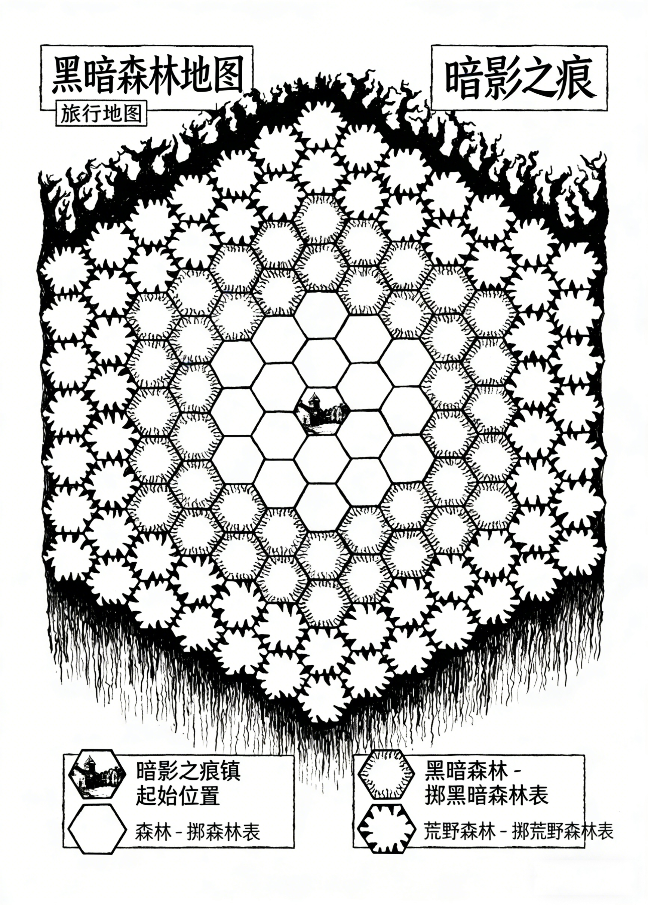

区域地图

《暗影之痕》（Grimscar RPG）
设计与制作团队
- 设计：冈纳·阿尔姆（Gunner Almr）
- 项目总监：昆顿·奥拉夫森（Quinton Olafsson）
- 美术设计（无AI生成）：杰克·阿宾顿（Jake Abington）
- 测试员：圭迪恩勋爵（Lord Gwydion）
- 校对员：罗斯林·卡莱尔（Rosslyn Carlyle）、丹·考德威尔（Dan Caldwell）、马丁·罗登伯格（Martin Rodenburg）、理查德·库姆（Richard Coombe）
内容警告 - 18岁以上适用
以下内容包含相关描述，建议你在游玩前了解：
- 身体恐怖元素：部分生物呈现扭曲、残破或血淋淋的恐怖人形状态。
- 精神控制：部分恐怖生物会通过精神控制迫使受害者做出恐怖行为。
- 暴力描写：各类暴力场景贯穿始终，包括怪物与玩家的战斗、创伤及折磨情节。
版权信息
2025年乌鸦之心角色扮演资源（Crow Heart Roleplay Resources）版权所有（版本1）
目录
- 5 引言、单人角色扮演
- 6 日志记录、游戏设定
- 8 角色创建
- 9 角色属性
- 10 职业、战斗与备用骰子
- 11 武器、盔甲
- 12 衣物与保暖、物品栏、头衔、动机
- 13 任务、镇长的任务
- 14 隐藏任务、拜访居民
- 15 闲置状态、森林探索
- 18 折返规则、战斗、添加备用骰子
- 19 战斗示例、生物伤势、双备用骰子
- 20 添加心智属性、触发技能、伤害规则
- 21 轻伤与重伤、盔甲豁免、多敌人战斗
- 22 逃离战斗、巢穴六边形、简易包扎、休息
- 23 城镇补遗、暗影之痕历史、当前状况
- 24 黑暗荒野、树皮伤痕
- 25 魔法与信仰、符文羊皮纸、恶魔
- 26 神明、城镇管理、市场与军械库、货币
- 27 居民补遗
- 28 可接触居民
- 33 法纳姆军械库可购买武器
- 37 市场衣物表
- 50 限制接触居民
- 67 各类表格
- 114 受诅咒物品
- 115 战斗记录表
- 118 黑暗荒野旅行地图
- 119 地图图例
- 120 黑暗荒野永久地形地图
- 121 永久地形地图图例
- 122 生物卡片
- 129 立体模型
引言
《暗影之痕》（Grimscar RPG）是一款单人角色扮演游戏，背景设定在一个阴森、黑暗的奇幻中世纪世界。你将探索“黑暗荒野”（The Dark Weald）——一片环绕暗影之痕镇的广袤无垠、危机四伏的死亡森林。镇民无法通过这片危险的森林逃离，他们正遭受着无尽寒冬的窒息、饥饿与诅咒。暗影之痕是你的家园，你是暗影之痕的居民，必须寻找答案。你将与镇民互动、完成任务、培养角色，并以某种方式帮助你的人民拯救这个被遗弃的地方。
游玩需准备：本规则手册、一套多面骰子（六面骰子记为d6，其他骰子以此类推）、铅笔、橡皮，以及打印好的角色表和配套地图。
单人角色扮演
《暗影之痕》专为单人游玩设计。你将探索黑暗荒野与城镇，与镇民互动、完成任务并培养角色。为此，你需要阅读本规则手册——首先了解角色创建流程，再学习游戏玩法。在单人角色扮演游戏中，你不仅是玩家，还需扮演游戏主持人的角色，做出许多影响冒险结局的决定。但《暗影之痕》提供了一系列表格和机制，辅助你完成这一过程。
日志记录
除角色表和地图外，你还需要一个笔记本或日志本来记录探索黑暗荒野、与镇民交谈过程中的信息。记录无需详尽，可根据自身需求调整。日志可用于追踪任务详情、伤势情况、敌人伤害等，也可用于扩展和衔接剧情。它既是你回顾冒险的纪念，也能帮助你串联情节线索，回忆对任务有帮助的关键信息。
游戏设定
暗影之痕是一座曾繁荣一时的小镇，坐落于广袤无垠的“黑暗荒野”中央。你在这座小镇出生长大，是地道的暗影之痕人。
黑暗荒野的落叶乔木高耸入云，完全环绕着暗影之痕，为这个与世隔绝的聚落提供了不断变化的背景。但无尽寒冬已然降临，光秃秃的树枝蔓延至天际线，空气寒冷而灰暗。憔悴的乌鸦栖息在扭曲的枝干上，锐利的鸣叫划破冰封的空气。
黄色的烟雾从林线弥漫而来，散发着酸腐与焦肉的气味。狩猎队一去不返，流浪的动物也不见踪影。人们深陷恐惧，无人敢踏入森林，许多人只能在家中挨饿。镇民们走投无路，不少人开始自行其是——小帮派形成，盗窃事件激增，暴力在人口锐减的小镇中随处可见。镇长正在招募志愿者，需要有人外出狩猎、搜寻物资并维持秩序。
你挺身而出成为志愿者，将此视为一场机遇。无论动机如何，行动都将为你带来回报——或许你能在帮助绝望的镇民的同时，为自己赢得名声。
暗影之痕曾并非暴力之地。由于外部影响极少，这里无需军事化。近年来，随着小镇日渐衰败，访客寥寥无几。金属是稀缺资源，武器数量稀少，镇民在战斗方面也缺乏战术思维。面对这场威胁，他们毫无准备。
角色创建
你来到木质结构的镇政厅，敲响了厚重的木门。片刻后，一位驼背的光头男子出现——他是镇长塞拉斯·克罗夫特（Alderman Silas Croft）。
“哦，又一位志愿者，太好了，太好了。我没想到今天还会有人来。请进。”
你跟随他走进一间烛光摇曳的房间，房间中央摆放着一张深色木质长桌，上面放着几件物品。一面墙上嵌着一个冰冷但异常干净的壁炉，铅框窗户装着变形的玻璃。
“拿着。”他递给你一张羊皮纸，你展开后发现是一张黑暗荒野的粗略地图，忍不住惊叹它大部分都是空白的。
“情况就是这样，恐怕。自从这场该死的寒冬降临，我们几乎没有访客，有人说连小路都消失了。我们的猎人不是死了就是失踪了，森林已经变了样。这就是你来到这里的原因，不是吗？为了提供帮助？”你点头回应，他递给你一把破旧的剑。“恐怕我们只有这个了，但它是金属做的——在这地方可不常见。哦，还有这个。”他将一面木质小圆盾推到你面前。你皱起眉头。“我知道，这东西不算什么，但总比没有好。镇上还有其他武器和盔甲，你可以去找法纳姆·雷文克劳德（Farnham Ravencloud）问问，我想……”
他试图挤出一个微笑，却变成了难看的鬼脸，随后催促你出门。你踉跄着走到街上，门半掩着，他看着你说：“我想我认识你的父母，他们都是好人。你会做得很好的！如果你的努力卓有成效，或许还能见到凯斯勒·布拉巴宗（Keslar Brabazon）！”
说完，他关上了门，只留下你站在寂静的街道上。
你的角色拥有一张“角色表”，需在上面记录各类信息（可从手册末尾打印）。首先为角色取名并填写。
角色属性
你是奇幻世界中的人类，拥有多种属性，分为“心智属性”和“身体属性”两类。
心智属性（Psyche Stats）
共六项，反映角色的心理状态：愤怒（Rage）、憎恨（Hatred）、嗜杀（Butcher）、耐心（Patience）、怜悯（Pity）、希望（Hope）。其中，愤怒、憎恨、嗜杀体现你对世界现状的愤怒，耐心、怜悯、希望代表你对正义的渴望。所有心智属性初始值均为5，会在游戏过程中变化，不可低于0，且不会因睡眠重置（角色的经历会永久影响其心智）。这些属性可用于战斗，也会在特定遭遇中触发。
身体属性（Physical Stats）
共四项，反映角色与世界的物理互动能力：
- 生存（Survival）：体现你对自然技能的掌握和动手能力，初始值4。
- 魅力（Charm）：体现你与人打交道的效果，初始值2。
- 声望（Reputation）：体现你在镇上的口碑，初始值1。
- 损耗（Wear）：体现你承受世界压力的身体状态，初始值0。每累积10点损耗，你的轻伤死亡线（详见下文）降低1点，损耗无上限。
轻伤与重伤（Minor and Major Wounds）
这是角色可能受到的两种伤害类型。你最多可承受10点轻伤和3点重伤，这些数值被称为“死亡线”（Deathlines），代表角色的死亡临界点。例如，承受3点重伤后，你将立即死亡。请在角色表的伤势栏小方框中填写这些数值，死亡线会随着角色发展增减。
初始状态下，你没有任何伤势。
重伤比轻伤更难治愈，有时需要镇上玛莎·肖（Martha Shaw）的专业帮助——拜访她后，她会交给你一个寻找所需物品的任务，完成任务并归还物品，她便会为你治疗。部分重伤也有特定的治愈说明（详见“战斗”章节）。
职业（Profession）
在黑暗荒野的诅咒笼罩所有人的未来之前，你曾有一份工作（繁荣时期），这份工作为你赋予了特定技能。可从下表中选择一项，或掷d8随机确定。将你的前职业填写在角色表对应位置，并为指定属性添加修正值。
| 序号 | 前职业 | 离职原因 | 属性修正 |
|---|---|---|---|
| 1 | 屠夫（Butcher） | 镇上几乎没有牲畜可杀，老鼠不算 | 嗜杀+1 |
| 2 | 狱卒（Jailor） | 现在更多人被处决而非监禁 | 憎恨+1 |
| 3 | 拳击手（Pugilist） | 拳击曾很流行，但现在徒手斗殴取而代之，你对此毫无兴趣 | 愤怒+1 |
| 4 | 手套匠（Glovemaker） | 这份工作虽需要技巧但气味难闻，如今被视为奢侈品行业 | 耐心+1 |
| 5 | 草药师（Herbalist） | 草药如今难以获取，人们都会囤积自用 | 怜悯+1 |
| 6 | 牧师（Priest） | 镇上曾有多家教堂，但人们已失去希望 | 希望+1 |
| 7 | 制箭师（Fletcher） | 你曾为猎人提供箭矢，但如今猎人已尽数失踪 | 生存+2 |
| 8 | 镇上传令员（Town Crier） | 过去有活动时需要传令员，但现在已无此需求 | 魅力+2 |
战斗与备用骰子（Combat and Reserve Die）
该属性体现你的战斗技能。初始战斗骰子（Combat Die）为d6，备用骰子（Reserve Die）为d4，填写在角色表对应位置。骰子可升级或降级：d8降级为d6，d10升级为d12，以此类推。d4不可降级，d20不可升级，可用骰子规格为d4、d6、d8、d10、d12、d20。
武器（Weapons）
暗影之痕的武器反映了镇民的生活状态和资源匮乏现状——它们粗糙且难以获取，通常没有剑鞘，只能直接挂在腰带上。
初始武器为镇长塞拉斯·克罗夫特赠送的“钝剑”（blunted sword）和“木质小圆盾”（wooden buckler），无额外加成，但可让你参与战斗并使用战斗骰子与备用骰子，需记录在角色表中。其他武器和盔甲能为战斗提供加成，可通过完成任务获取，部分可在镇钟楼地下室的老军械库（由法纳姆·雷文克劳德经营）购买，其余则需通过任务解锁。
盔甲（Armour）
与武器一样，暗影之痕的盔甲供应有限，通常由木材制成或用石头加固。盔甲可让你在受到伤害时进行“盔甲豁免”（Armour Save），有可能减轻伤害。每件盔甲都有“盔甲豁免修正值”，需添加到盔甲豁免掷骰结果中。
初始盔甲为“木质小圆盾（手臂部位）”，盔甲豁免修正值+1（详见下文）。
你可以穿戴多件盔甲，但同一身体部位不能穿戴两件及以上。盔甲可穿戴部位分为四类：头部、手臂、躯干、腿部。初始状态下，你的手臂部位已被小圆盾覆盖。
衣物与保暖（Clothing and Warmth）
游戏过程中你会获得各类衣物，它们能提供保暖效果，这在寒冷的森林中至关重要——有时保暖不足会导致惩罚。每件衣物都有对应的身体部位（与盔甲相同，另加面部和手部），每个部位可穿戴两件衣物，但不可是同类型（例如不能穿两双靴子），请遵循常识判断。在角色表“保暖栏”中记录衣物及其保暖值，总保暖值为所有衣物保暖值之和。盔甲不提供保暖效果，衣物可穿在盔甲内外。
物品栏（Inventory）
初始物品：油灯1盏、背包1个（可容纳角色表物品栏能写下的所有物品）、口粮1份、铜币（CC）2枚。
初始穿戴：束腰外衣（躯干部位，保暖值3）、布靴（腿部部位，保暖值2）。
特殊说明：你可能预期的属性
《暗影之痕》没有等级或经验值系统。你可通过完成任务和击杀生物来升级战斗骰子与备用骰子——例如，某个任务的奖励可能是“永久升级战斗骰子”。
头衔（Titles）
冒险过程中你可能获得“头衔”，需写在角色表的姓名下方。
角色动机（Your Character’s Motivation）
《暗影之痕》没有阵营系统。角色的动机由你决定，且在游玩过程中可能发生巨大转变——你可能将胜利视为获取青睐和权力的途径，也可能只想帮助镇民、渴望成为英雄。但需牢记：你在暗影之痕出生长大，对这个看似注定毁灭的小镇仍怀有一定感情。
至此，你的角色创建完成。接下来，开始你的冒险吧！
任务（Quests）
任务是《暗影之痕》的核心元素，为你提供目标与奖励，分为三个等级（1级最简单）：
- 1级任务物品：可在靠近暗影之痕的森林第一层找到。
- 2级任务物品：可在黑暗森林层找到。
- 3级任务物品：可在荒野森林层找到（距离暗影之痕最远，污染最严重）。
完成每个任务需找到对应等级的任务物品，这些物品会在黑暗荒野对应等级森林的遭遇中出现，游戏内标注为“对应等级任务物品”。具体物品需参考当前任务描述，默认任务为镇长发布的任务（详见下文）。
你也可以通过拜访镇上居民接受其他任务，此时该任务将取代默认的镇长任务。因此，当你找到任务物品时，仅能获取当前正在进行的、等级匹配的任务奖励。同一时间只能进行一个任务。
多个任务物品
若你在森林中完成当前任务后，又找到其他任务物品，返回暗影之痕后可掷“镇长任务表”（Alderman’s Quest Table）获取额外奖励。这意味着，即使你之前为其他镇民完成了任务，找到第二个或第三个任务物品时，仍能从镇长处获得奖励，每次获取额外物品后均可掷表。
镇长的任务（The Alderman’s Quest）
这是默认任务：镇长派你进入黑暗荒野寻找食物和资源。若找到1级任务物品，即为“一包口粮”，将用于喂养镇上的孩子。返回镇长处后，掷“镇长任务表”（详见手册末尾按字母顺序排列的表格）获取奖励，并记录在物品栏中。
其他任务（Other Quests）
手册末尾的“居民补遗”（Citizens Addendum）中记录了可互动的镇民，他们会提供任务。部分任务要求你达到特定声望等级，或完成前置任务才能接受，请遵循居民对应的说明。奖励包括新武器、属性提升、城镇物资等，可自由选择符合条件的任务。
隐藏任务（Hidden Quests）
有时你在任务中会获得看似无用的物品或信息，请务必记录并牢记——你可能会遇到需要这些物品或信息的暗影之痕镇民（对他们而言可能至关重要）。若你意识到可以提供帮助，可进行如下操作：
- 若涉及物品：掷“持有此物表”（Have This Table）。
- 若涉及信息：掷“善意之举表”（A Kindness Table）。
隐藏任务不会主动提示，也非强制完成，但完成后可获得奖励，且每个隐藏任务仅能完成一次。无需将其填写在任务栏中，也不会影响其他任务。
未找到任务物品
若未在指定等级森林找到任务物品，你必须返回暗影之痕，次日再尝试。此次旅程中，森林可能已被“填满”，无可用六边形区域可供探索。次日，非永久六边形区域会重置，永久地形会重新标注。随着你对黑暗荒野的熟悉，各等级森林会逐渐布满永久地形，有时可能会增加任务难度。
拜访居民（Visiting People）
暗影之痕有几位镇民能在特定情况下提供帮助，每次进入黑暗荒野探险前后，你可各拜访他们一次。由于镇上疾病肆虐，他们的时间有限，且倾向于保持孤立。可在“居民补遗”中查看这些居民名单。
他们可能会提供任务、治疗伤势、修复物品或分享有用信息。“限制接触居民”（Restricted Citizens）需满足特定前提条件（可在其他任务中找到，或需达到足够声望）才能拜访。
闲置状态（Inactivity）
若冒险过程未中断，闲置不会产生惩罚。但有时因事件或伤势，你可能需要在镇上停留一周，无法外出探险。
- 每在镇上停留一周（无论是疗伤还是分心）：声望-1，希望-2。
- 连续在镇上停留两周：额外获得3点损耗。
单人角色扮演中时间可即时推进——例如，若需等待两周疗伤，直接记录惩罚后即可继续游戏。
森林探索（Exploring the Forest）
探索黑暗荒野需使用手册末尾的“六边形网格地图”，分为两种类型：“永久地形地图”（Permanent Features Map）和“旅行地图”（Journey Map）。两张地图均以暗影之痕为中心，底部附有图例，需打印使用。核心规则如下：
- 每回合移动1个六边形，代表1小时的探索时间。
- 空白六边形分为三类，设计各不相同：森林（Forest）、黑暗森林（Dark Forest）、荒野森林（Savage Forest），分别对应危险程度和探索深度。
- 进入六边形后，为其标注连续编号，然后根据地图底部图例的对应森林类型表掷骰，确定该区域内容。在图例旁记录编号和地形名称。
- 完成当前遭遇后才能继续移动。
- 一次旅程最多可探索18个六边形，若第19个六边形前未返回，你将在森林中死亡，请预留足够时间返程。
- 即使未找到目标，也可随时开始返回暗影之痕（详见下文“折返规则”）。
- 可向任意方向移动。
- 每种永久地形最多只能有2个，若第三次掷出相同永久地形，需重新掷骰。
- 探索时若连续掷出相同六边形，需重新掷骰。
返回暗影之痕后，仅保留永久地形（非永久六边形区域将被清除），并将其转移到“永久地形地图”中，用字母替代原编号（便于再次进入黑暗荒野时区分）。再次探索时，需在新的旅行地图上标注这些永久地形——若进入这些六边形，将重新触发该永久地形的遭遇并阅读对应描述，返回这些区域可能会有略微不同的遭遇。若地图完全被永久地形填满，本阶段冒险结束，需等待后续扩展内容。
探索黑暗荒野充满危险：你可能遭遇一系列生物、身受重伤，不得不返回暗影之痕疗伤，导致任务未完成。未完成任务可能会有后果，但多数任务可次日重新尝试。当然，重伤会带来更多麻烦，可能需要更长时间恢复，请在日志中记录日期。
地图图例示例（Map Key Example）
以下为旅行地图示例：冒险者已深入森林第一层5个六边形，遭遇5个不同地点，每个六边形按遭遇顺序编号1-5。第三个六边形发现“老棚屋”（Old Shack），属于永久地形。返回暗影之痕后，清除非永久地形，仅保留该永久地形，转移到永久地形地图并标注为“A”。下次进入黑暗荒野时，在新旅行地图上标注“A”，若再次进入该六边形，需重新遭遇棚屋。
| 图例编号 | 地形名称 |
|---|---|
| A | 老棚屋 |
折返规则（Tracking Back）
决定返回暗影之痕时，你可沿原路线返回：若途经永久六边形，需重新触发遭遇；其他已探索过的六边形无需再次遭遇（同一日内），这意味着原路线返回更安全。若想继续探索森林，也可选择其他路线返程。
战斗（Combat）
《暗影之痕》的战斗均为近距离肉搏——森林植被茂密，远程战斗几乎不可能实现。
你的角色和每个生物都拥有“战斗骰子”和“备用骰子”，骰子类型为多面骰子（d4、d6、d8、d10、d12、d20）。生物越强大，骰子面数越多，可能掷出的数值越高。
战斗分为多个回合，以你的角色掷战斗骰子开始，敌人随后掷骰子，这一过程称为“攻击掷骰”（Attack Roll）。掷出数值较高者赢得该回合，若平局则重新掷骰。失败者将受到伤害（详见下文），极少数情况下胜利者也可能受伤。
请使用手册末尾的“战斗记录表”（Combat Sheet）追踪和记录战斗过程。
影响攻击掷骰的方式
添加备用骰子（Adding Reserve Dice）
每场战斗中，你可使用备用骰子一次——掷出后将结果添加到某一回合的攻击掷骰中。
敌人同样拥有备用骰子，触发条件：
- 回合平局（即使应用修正值后双方战斗掷骰结果仍相同）。
- 敌人输掉回合，且双方掷骰差值小于或等于其备用骰子最大点数的一半。
示例1：你的攻击掷骰结果为12，敌人为10，差值2。敌人的备用骰子为d6（最大点数6，一半为3），差值2≤3，因此敌人可掷备用骰子——若掷出5，攻击掷骰结果变为10+5=15，反超你的12。此时你可选择添加心智属性（详见下文）、使用自己的备用骰子，或接受输掉该回合并承受轻伤。
示例2：你的攻击掷骰结果为14，敌人为5，差值9。敌人的备用骰子为d10（最大点数10，一半为5），差值9>5，因此敌人无法使用备用骰子，你赢得该回合。
与你的角色一样，敌人每场战斗仅能使用备用骰子一次。
战斗示例：树皮恶魔（Bark Fiend）
| 属性 | 数值/类型 |
|---|---|
| 战斗骰子 | d8 |
| 备用骰子 | d10 |
| 轻伤上限 | 8 |
| 重伤上限 | 3 |
| 触发技能 | 7-痛苦指爪（Wracking Fingers）：掷d6，1-3点额外承受1点轻伤；8-俯身突袭（Leaning In）：下一次攻击掷骰+2 |
| 奖励 | 无 |
| 描述 | 身体由活动的扭曲木材和树皮组成，浑然一体 |
生物伤势（Creature’s Wounds）
敌人的伤势数值代表其承受对应类型伤势后的死亡临界点。例如上述树皮恶魔，承受8点轻伤或3点重伤后死亡。
双战斗骰子或双备用骰子（Two Combat or Reserve Dice）
若你拥有两个骰子（战斗或备用），不可拆分用于不同回合的掷骰——必须同时掷出，将结果相加后计入总数值。
攻击掷骰中添加心智属性（Adding a Psyche Stat in Your Attack Roll）
攻击掷骰后，你可添加一项心智属性的数值（例如嗜杀属性为4，可加4到攻击掷骰结果中）。但该战斗回合结束后，需掷对应属性的“属性后果表”（Stat Consequence Table）——例如添加嗜杀属性后，需掷“嗜杀属性后果表”。
若通过添加心智属性的攻击击杀敌人，无需掷后果表，改为获得2点损耗。
重要规则：
- 使用愤怒、憎恨、嗜杀属性时，该属性+1（无上限）。
- 使用耐心、怜悯、希望属性时，该属性-1。
- 若属性降至0，战斗中不可再使用，且不会继续扣除。
- 每项心智属性每场战斗仅能使用一次。
- 同一攻击中不可同时使用备用骰子和添加心智属性。
触发技能（Trigger Abilities）
敌人没有角色属性，取而代之的是“触发技能”，详细描述见生物卡片（手册末尾）。触发条件：敌人使用战斗骰子（非备用骰子）进行攻击掷骰时，掷出特定原始数值（未修正）。触发技能即时生效，即使敌人输掉该回合。
示例：狂热信徒（Cin Fanatic）的触发技能“5-燃烧触碰（Burning Touch）”——需立即掷d6：1-4点获得1点损耗；5-6点攻击掷骰+2（最终结果为7）。多数触发技能对敌人有利。
狂热信徒（Cin Fanatic）属性表
| 属性 | 数值/类型 |
|---|---|
| 战斗骰子 | d6 |
| 备用骰子 | d4 |
| 轻伤上限 | 6 |
| 重伤上限 | 2 |
| 触发技能 | 5-燃烧触碰（Burning Touch）：掷d6，1-4点获得1点损耗；5-6点本回合攻击掷骰+2 |
| 奖励 | 掷“尸体搜索表”（Body Search Table） |
| 描述 | 头部后方喷发黑色火焰，双眼如痛苦的深渊 |
伤害（Damage）
受到伤害时，你将承受轻伤或重伤：
- 若胜利方攻击掷骰结果（修正后）高于失败方，失败方承受1点轻伤。
- 若胜利方攻击掷骰结果（修正后）是失败方的两倍及以上，失败方承受1点重伤。
轻伤与重伤详情（Minor and Major Wounds Details）
两种伤害代表战斗中受到的不同伤势类型，需记录在角色表中——任一数值达到死亡线，角色立即死亡。
- 轻伤：包括瘀伤、擦伤、撞击伤、割伤等，记录在角色表对应位置。
- 重伤：严重且直接影响角色行动的伤势。承受重伤后，需掷“重伤表”（Major Wound Table），确定伤势类型及影响。旅程中无法治疗重伤（另有说明除外），且过夜睡眠也无法恢复。需前往镇上寻找玛莎·肖帮助，通常需完成任务收集特定物品才能治愈（常规方法无效）。
盔甲豁免（Armour Save）
为减轻战斗回合受到的伤害，你可进行“盔甲豁免”掷骰：再次掷战斗骰子，加上所有盔甲的总修正值。若结果超过敌人造成伤害的成功攻击掷骰结果：
- 轻伤直接抵消。
- 重伤降为轻伤。
若掷骰结果为1（任一骰子，修正前），随机一件盔甲损坏，无法继续使用。每回合仅能进行一次盔甲豁免，每回合最多仅一件盔甲损坏。敌人无盔甲豁免机制。
多敌人战斗（Multiple Enemies）
战斗中可能遭遇多个敌人：每个敌人在回合中各攻击一次，你仍仅能攻击一次，可选择攻击任意一个敌人。
逃离战斗（Fleeing Combat）
你可以选择逃离战斗：向来时方向后退1个六边形。若该六边形为永久地形，需触发对应遭遇；本次旅程中不可再次进入逃离时的六边形。
逃离后的六边形变为“巢穴六边形”（Lair Hex），逃离的生物将留在原地——若再次进入该六边形，需重新与该生物战斗，且其除重伤外的伤势完全恢复。请在地图图例和表格页码处记录相关信息。
逃离惩罚：希望-1，损耗+2。
巢穴六边形（Lair Hex）
巢穴六边形属于永久地形，除非击败栖息其中的生物——击败后，该六边形恢复为普通地形。
简易包扎（Improvised Dressing）
战斗结束后，可通过简易包扎治愈1点轻伤，需满足以下任一条件：
- 扣除1点生存属性。
- 消耗1份口粮。
若两者均无，则无法进行简易包扎。每个六边形区域仅能进行一次简易包扎。口粮可为指定物品，或由三种不同食物组成。
休息与治疗（Resting and Healing）
过夜休息后，轻伤重置为0。
城镇补遗（The Town Addendum）
暗影之痕是一座由悬挑式木质建筑组成的小镇，当地木材丰富但金属匮乏。它坐落于无尽的黑暗荒野中央，是“鲍尔胡德”（Bowerhood）村落群的一部分。你毕生居住于此，是地道的暗影之痕人，熟知小镇的历史。
暗影之痕镇的历史（History of Grimscar the Town）
暗影之痕建立在一处被认为具有治愈功效的矿泉旁。矿泉由猎人埃莉诺·阿莫贝尔（Eleanor of Amabel）在森林深处追踪“金弓鹿”（一种现已灭绝的物种）时发现——她偶然闯入一片空地，看到矿泉后搭建了营地，最终停留数周。她的同伴随后加入，这里逐渐成为集会点。空地上有一处天然岩层，地面开裂露出焕发生机的水潭，小镇的名字便源于这道类似狰狞伤口的岩层。
伐木工和猎人纷纷聚集，聚落逐渐由帐篷和临时棚屋发展而来。几年后，矿泉因过度使用干涸，但挖掘过程中发现了贯穿岩石的铜矿石脉。矿工和探矿者涌入，小镇在发展初期的停滞边缘重获生机。周边村落陆续建立，“鲍尔胡德”村落群形成，推选领袖（后来称为镇长）共同商议贸易路线——所有路线均围绕铜矿供应展开。暗影之痕成为中心城镇，镇民一度繁荣富足。
当前状况（Currently）
然而衰败来得猝不及防：铜矿脉枯竭后，短短数月内，所有相关产业和信使都消失了。十年后的今天，资源极度匮乏，贸易路线沉寂，外出兜售货物的人再也没有返回。镇上仅存一口井，水位已极低，人们只能收集雨水煮沸饮用。绝望的镇民依靠荆棘果、玫瑰果、山楂果以及任何能搜寻到的食物为生。
黑暗荒野（The Dark Weald）
黑暗荒野是一片神秘之地。曾经，许多生物在茂密的树冠下和谐共存，森林的馈赠滋养着鲍尔胡德村落群。但最近的寒冬降临后，落叶归于死寂，道路和小径消失无踪。自这场“不朽寒冬”（Undying Winter）开始，普通民众纷纷谈论着一种正在缓慢杀死森林的诅咒——冰冻的迷雾中出现了奇异的动物，树上的黑色伤痕令人不安，黑暗中回荡的怪异叫声让镇民夜不能寐。被不断侵蚀的森林环绕，暗影之痕的镇民束手无策，除非有人敢于闯入黑暗。
树皮伤痕（Bark Wounds）
近几个月，黑暗荒野的一些古树出现了长长的黑色伤痕。有人说即使从远处看，这些伤痕也像活着一样扭动翻滚，无人能近距离观察后存活。另一些人认为，这是恶魔或怪物的印记——被感染的利爪挖出的孔洞，或是多孔真菌腐烂的子实体。
魔法与信仰（Magic and Belief）
暗影之痕的人们对魔法持怀疑态度。许多人不再相信咒语和魔法生物，但在这黑暗时代，一些人转向了黑魔法。人们谈论着邪教和令人不齿的仪式，曾经无害的传统习俗如今也变得丑陋。尽管如此，部分年长的镇民仍会制作护身符、辟邪物和守护符，希望能带来好运，抵御他们认为潜伏在森林中的邪恶。
符文羊皮纸（Marked Vellum）
尽管人们对魔法缺乏信任，但自不朽寒冬以来，一些人发现：带有符文、文字和图案的小块兽皮会被赋予魔法属性。你可能在旅途中发现这些物品，其效果详见“符文羊皮纸表”（Marked Vellum Table）。符文羊皮纸仅能使用一次，使用后化为灰烬，且通常外观令人不适，许多由人肉制成。
恶魔（Demons）
暗影之痕人的噩梦中充斥着各种生物，它们通常被称为“恶魔”。人们将其视为体型恐怖的生物，但这并不意味着它们拥有超凡力量。对普通人而言，恶魔是邪恶的化身或可怕事件的产物，与宗教无关。它们的大小和外形各异，但有一些被公认的类型——你将在森林中遭遇这些带有民间传说背景的恶魔。
神明（Gods）
镇民会向众多小神祈祷，希望在生活的各个方面获得眷顾，但这些神明的存在感极低，其谱系更像是被遗忘的远古时代流传下来的儿童故事。人们更倾向于向自然求助，而非精神存在。暗影之痕的居民来源多样——建立小镇的先民来自不同背景，包括许多来自生存主义游牧文化的猎人和追踪者。
城镇管理（Running the Town）
小镇实行传统治理模式，由镇长（若有）和镇长领导，详见下文“居民补遗”。
市场与军械库（Market and Armoury）
你可在市场向福利·伊斯特利（Foley Eastley）购买物品，或在军械库向法纳姆·雷文克劳德购买。这些地点也有可互动的镇民，能从中接取任务。
货币（Currency）
暗影之痕的货币为“铜币（CC）”。金属（尤其是贵金属）极为稀缺，含金或银的物品价值连城，因此铜币成为主要货币。铜币可被切成两半，称为“半币（HC）”，价值为铜币的一半；此外还有“方形木代币（WT）”，价值最低，仅为铜币的四分之一。所有货币均印有暗影之痕的官方标志——橡树图案。
居民补遗（The Citizens Addendum）
许多在暗影之痕世代居住、仅知森林生活的家庭已迁离或失踪，如今仅存数百人。
尽管衰败的气息弥漫，仍有几位知名人物坚守于此：玛莎·肖（Martha Shaw）是家族最后一位草药师；贝里克·布拉姆韦尔（Berik Bramwell）出身木匠世家；柯比·斯陶特（Kirby Stout）是制箭师；阿玛贝尔·英克布鲁克（Amabel Inkbrook）继承父亲的职业，成为当地屠夫，与捕鼠人马洛·欧文（Marlow Irvine）合作密切；洛塔尔·威拉德（Lothar Willard）是最后一位镇守卫；法纳姆·雷文克劳德经营着镇钟楼地下室的老军械库。
镇政厅仍有部分官员任职：镇长塞拉斯·克罗夫特主持小镇事务（无人愿意担任镇长），助手为镇秘书罗德里克·锡达（Roderick Cedar）；福利·伊斯特利是市场管理员，哈珀·费尔格罗夫（Harper Fairgrove）是市场助手；镇政厅旁有一座小型医务室，由内丽达·格林伍德修女（Sister Nerida Greenwood）负责。
近年来，信仰呈现多种形式：吉福德·哈德里克（Gifford Hardwick）是当地牧师；莫德·弗拉格（Maud Flagg）领导着一群反对者；奥利弗·格林（Oliver Greene）和阿拉贝拉·格林（Arabella Greene）夫妇领导的“核心圈”（Inner Circle）行事强硬，以“更大利益”的名义管理小镇资源。此外，还有隐藏的邪教、末日论者和孤独的行动者——他们要么已疯狂，要么受邪恶意图驱使，在森林的阴影中秘密活动。
部分镇民可直接接触并提供任务，详见下文“可接触居民”（Approachable Citizens），你可自由选择任务（除非决定为镇长收集物资）。其他镇民需完成特定任务或达到足够声望才能拜访，详见第51页“限制接触居民”（Restricted Citizens）。
可接触居民（Approachable Citizens）
玛莎·肖（Martha Shaw）—— 镇草药师
你沿着狭窄的杜凯特街（Ducket Street）前行，在“老鼠与骰子酒馆”（Rat and Dice Pub）不远处找到“草药小屋”（Herb Den）——玛莎的住所。门向内敞开，你弯腰穿过门梁，进入昏暗杂乱的房间。一位齐肩发女子从研钵和研杵旁转过身，叫着你的名字打招呼：“今天有什么能帮你的？是不是后背又不舒服了？”她微笑着问道。
伤口缝合（Stitching Wounds）
若需要缝合伤口，可向玛莎求助。“哦，天哪，太严重了。让我来帮你缝合。”你需支付1枚铜币作为服务费和物资费，若无铜币，可赠送等值物品替代。
任务：重伤治疗（Major Wound）
若你有除缝合外的重伤需要治疗，可接受此任务（可重复完成）。
“哦，快坐下。”她扶你坐在角落的树桩座椅上（旁边挂着草药）。“深呼吸。这是撒切尔草药（Thatcher Herbs），气味能舒缓情绪。现在让我看看。”她检查伤口后说：“情况很糟。”她用手背贴了贴你的额头。“是在森林里弄的，对吗？不用说我也知道——镇长已经招募了志愿者。”你看到她眼中泛起泪光：“我需要多莉茎（Doree Stem），但我不得不说，它只生长在荒野的寒冷区域。我这里没有存货，真惭愧，要让你回到那个黑暗的地方，去寻找治愈你在那里受的伤的药材。”她停顿片刻，翻找抽屉后递给你一件物品。
“这是古里尔根（Gurier Root），食用后能帮你缓解痛苦。”将古里尔根添加到物品栏，食用后可治愈1点轻伤。
下次进入黑暗荒野探索时，找到的第一个1级任务物品为：“这里有一个皮袋，里面装有足够一剂的多莉茎。”返回玛莎处交付后，任务完成，重伤可得到治疗，声望+1。每治疗1点重伤，需在镇上休息一周（详见第15页“闲置状态”）。
任务：城镇草药补给（Herbs for the Town）
小镇急需治疗药剂，草药是关键原料，此任务可重复完成。
“镇上的情况越来越糟了。过去几个月，我的草药库存几乎耗尽。”她抓了抓头发，转过身去，声音带着情绪的颤抖：“我见过太多伤口……”她再次转向你：“而且听人们说，我不敢进入荒野采集更多草药。这里有太多人需要我的照顾，太多人失踪了——包括我的侄子欧文·亚德利（Irvine Yardley）。”她的声音哽咽，但仍继续说道：“所以我不得不请求你：如果你在外面能找到一些斑点甘菊（Speckled Camomile），对照顾病人会有很大帮助。我当然会付钱，而且我相信镇上的人们也会非常感激你的努力。”
她补充道：“哦，如果你看到任何白桦树（Silver Birch），我也需要一些树皮——我用它来制作治愈茶。”
下次进入黑暗荒野探索时，找到的第一个1级任务物品为：“一块布包裹着足量的干斑点甘菊。”返回玛莎处交付后，任务完成，奖励铜币5枚，声望+1。你可消耗1点魅力属性，将奖励提升至铜币8枚。若你还收集了白桦树皮（非任务强制要求），可额外获得铜币2枚和木代币10枚。
离开前，你与玛莎共饮热草药茶，损耗-1。
贝里克·布拉姆韦尔（Berik Bramwell）—— 镇木匠
贝里克的工坊位于小镇边缘，紧邻林线。起初你以为这里无人居住，但走近后发现一扇窗户透出微弱的灯光。敲响宽阔的木门后，一个低沉的声音邀请你进入。屋内，一名男子正在工作台前忙碌，打磨着一根手柄。
墙壁上排列着空架子，周围散落着曾经装满木材的打开的木桶，地板覆盖着卷曲的木屑。你注意到工作台上方的墙上挂着一把长长的金属刀刃——在这个小镇上，金属物品极为罕见。贝里克站起身向你打招呼。
“有什么能帮你的？”你反问他的需求。
“啊，我知道你现在是志愿者了。好吧，你比我勇敢。”你打量着他：肌肉发达的前臂，麻质衬衫敞开的领口露出毛发，看起来身手不凡。
“你应该能看出我需要什么……木材！该死的木材！住在森林里，你可能觉得木材不会短缺，但你知道，由于《边界协议》（Boundary Accord），我们不能从林线砍伐。有一次我鼓起勇气深入一点，却发现许多枯树的木材上都有黑色印记，除了烧火别无他用。正当我想再往深处走时，听到一声可怕的尖叫，就逃跑了。”
“那里太危险了，但我想你应该知道。所以，如果你能找到一些像样的木材，我会付你丰厚的报酬。”
他补充道：“如果你能找到铁山毛榉树（Iron Beech），砍下一根树枝，我可以用它制作钉子楔子，修复镇上一些摇摇欲坠的建筑。我知道人们会感激的——你见过镇政厅吗？”
你点头表示同意。
下次进入黑暗荒野探索时，找到的第一个1级任务物品为：“一块麻布包裹着一捆绿橡木木材，已被切成整齐的长度。”返回贝里克处交付后，任务完成，奖励铜币10枚。你可消耗1点魅力属性，将奖励提升至铜币15枚，声望+1。
若你还砍下了铁山毛榉树枝（非任务强制要求），贝里克将额外支付铜币5枚。
任务：贝里克的木罗盘（Berik’s Wooden Compass）
此任务仅能完成一次，找到特定物品即可获得奖励。
“还有一件事。我曾制作了一个木罗盘，由古利霍尔村（Gullieshole village）的神秘主义者菲兰达·布鲁克（Filandra Brooker）进行了磁性附魔。那次听到可怕的声音逃跑时，我把它掉在了森林里，回到这里才发现不见了。它对我来说很珍贵——不仅能指示北方，万一我们别无选择，需要逃离这片黑暗森林时，它也会非常有用。如果你能帮我找到，我会给你一件特别的盔甲，对你未来的探险很有帮助。”
下次进入黑暗荒野探索时，找到的第一个1级任务物品为：“你惊讶地发现一个雕刻精致的圆形物品，认出这是贝里克的木罗盘。”返回贝里克处交付后，任务完成，奖励“木质护胫（腿部）”（Wood Shin Guards (Leg)），盔甲豁免+1，声望+1。
他还递给你一张纸条：“罗尔夫·布里肯登（Rolfe Brickenden）是个孤独的雕刻家，但我知道你能帮他做点什么。这张纸条可以为你担保。”记录：你现在可拜访第51页“限制接触居民”中的罗尔夫·布里肯登。
法纳姆·雷文克劳德（Farnham Ravencloud）—— 退休士兵，镇钟楼地下室军械库经营者
你抬头望向石砌钟楼——这座古老的建筑已然破败歪斜。身后，一个男孩唱起《塞德里克·贝尔的诅咒》（The Curse of Cedric Bale，详见第87页），你驻足聆听片刻，回忆起童年时光。随后你弯腰穿过拱门，小心翼翼地走下磨损的台阶，进入黑暗之中。走廊尽头是一间杂乱潮湿的石砌房间，部分墙壁靠着空架子、旧箱子和木质长凳。一张烛光摇曳的桌子旁，一名留着胡须的男子正喝着泡沫丰富的麦酒，他站起身，擦了擦胡子上的泡沫，向你打招呼。
“哦，请进，只是喝杯午餐酒而已。”他举起酒杯示意：“现在有什么能帮你的？我这里有各种物品可供挑选，也愿意收购你的盔甲——当然，价格是原价的一半。”他勉强笑了笑：“二手装备需要修复。”
军械库可购买武器和盔甲详见下表（下一页）。
法纳姆军械库可购买武器（Weapons Available at Farnham’s Armoury）
| 武器名称 | 修正效果 | 铜币价格（CC） |
|---|---|---|
| 股骨刀（Femur Knife） | 每场战斗中造成伤害时，可消耗1点耐心属性，额外造成1点轻伤 | 40 |
| 拳爪（Fist Claw） | 额外获得1个d4备用骰子；若已有两个备用骰子，可升级其中一个 | 40 |
| 镐斧（Grub Axe） | 盔甲豁免掷骰+1 | 30 |
| 重剑（Heft Sword） | 战斗中造成伤害时，额外造成1点轻伤 | 120 |
| 利刃短棍（Razor Batton） | 战斗中造成重伤时，掷d6：5-6点额外造成1点重伤；使用时不可携带盾牌或小圆盾 | 100 |
| 刺球（Spike Ball） | 每场战斗中可使用备用骰子两次 | 80 |
| 碎片棍棒（Splinter Club） | 攻击掷骰+1 | 50 |
（A. 重剑 B. 刺球 C. 利刃短棍 D. 镐斧 E. 碎片棍棒 F. 股骨刀 G. 拳爪）
法纳姆军械库可购买盔甲（Armour Available at Farnham’s Armoury）
| 盔甲名称 | 穿戴部位 | 修正效果 | 铜币价格（CC） |
|---|---|---|---|
| 镶钉皮护腕（Studded Leather Bracer） | 躯干 | 盔甲豁免+2 | 75 |
| 厚皮外套（Thick Leather Coat） | 躯干 | 盔甲豁免+1 | 45 |
| 木质板胸甲（Wood Slat Chest Armour） | 躯干 | 盔甲豁免+2 | 70 |
| 木质小圆盾（Wooden Buckler） | 手臂 | 盔甲豁免+1 | 40 |
| 木质盾牌（Wooden Shield） | 手臂 | 盔甲豁免+2 | 60 |
黑暗荒野深处还可找到其他类型的武器和盔甲。
修复破损盔甲（Fix Broken Armour）
若你有非金属材质的破损盔甲，法纳姆可提供修复服务。
你拿出破损盔甲给法纳姆看，他说：“啊，是的，我看到问题了。事实上，这件可能是我亲手做的，真没想到。看得出来你用得很频繁。”
修复费用：物品价值的四分之一；若不清楚价值，可提供具有同等修正效果的物品替代。修复需耗时一天。
任务：为芬尼安寻找胸甲材料（Breast Plate for Finnian）
此任务仅能完成一次——帮助寻找制作胸甲所需的锻造锤。
“还有一件关于金属的事。你知道这地方金属有多稀缺。我急需为年轻的芬尼安·亨廷顿（Finnian Huntington）制作一件新胸甲——他正在接受镇守卫训练，要是森林里那些怪物的传言是真的，他肯定需要保护。”他呛了一下，你意识到这已经不是他今天喝的第一杯麦酒了：“好吧，我真不知道该相信什么。”他又喝了一大口，眼睛睁得大大的。
“米尔顿·洛伊（Milton Loys）以前是我的铁匠，但他失踪了，现在只能我自己凑合。我很想念他——我手艺不算差，但真的不想打铁。不过现在这种情况，我别无选择。”
他带你走到一个箱子前，打开后说：“我已经收集了一些金属物品准备熔化，天哪，这花了我好长时间。我还需要更多材料，但更糟的是，我没有锤子了——几周前被某个无赖偷走了，我觉得可能是拉姆兄弟（Lambe brothers）中的一个干的。不管怎样，没有锤子我做不了胸甲。如果你能帮我找到，我会给你奖励……你可以从我这里的盔甲中任选一件。”
他补充道：“另外，如果你能找到一段铁链或一些金属矿石，我也会收购这些物品。”
下次进入黑暗荒野探索时，找到的第一个1级任务物品为：“这里有一把金属锤子，看起来是铁匠用的。”返回法纳姆处交付后，任务完成，可从“法纳姆军械库可购买盔甲表”中任选一件盔甲作为奖励。若你还找到了铁链或金属矿石（非任务强制要求），法纳姆将支付铜币5枚；你可消耗1点魅力属性，将奖励提升至铜币10枚，声望+1。
法纳姆还会花时间教你一些用剑技巧：升级一个战斗骰子，轻伤死亡线+1。
他递给你一块红色颜料圆盘：“把这个带给拉比娜·米德尔顿（Rabina Middleton）。她是个染匠，不喜欢被打扰，但我知道她需要这个，还有这块颜料。”记录：你现在可拜访“限制接触居民”中的拉比娜·米德尔顿。
福利·伊斯特利（Foley Eastley）—— 市场管理员
福利经常在暗影之痕狭窄市场广场的十个摊位附近转悠。你看到他站在管理员小屋旁，挥手示意后，他走上前来。市场上只有四个摊位有人经营，他腰间挂着一个大皮袋，里面装着木代币——你知道这是他的工作用品。
“想买点什么？”他叫着你的名字问道。你从小就认识福利。市场上有一些物品可供购买：
- 内维尔·霍桑（Neville Hawthorne）：一个油滑的年轻人，在一个临时木桶摊位售卖口粮（木代币5枚/份）。你走近时，他微笑着从马甲口袋里掏出一个小陶瓷罐：“先生，我还有一罐治愈膏（healing balm），售价1枚铜币，有兴趣吗？”这种药膏可治愈1点轻伤，每天仅供应1罐。“这种药膏在这地方非常抢手，先生，怎么样？”
- 瓦尔·惠特洛克（Val Whitlock）：在一个摊位售卖衣物，掷两次“市场衣物表”（Market Clothing Table）确定衣物类型。每次从黑暗荒野返回后，市场会更新衣物种类。你可消耗1点魅力属性，将其中一件衣物的价格降低1枚铜币（手套除外）。
福利把手搭在你肩上，你吓了一跳——差点忘了他在旁边。看完衣物后，他把你拉到一边：“如果你有兴趣，还有一件事可以帮我。”
市场衣物表（Market Clothing Table）
| 序号 | 衣物名称、部位及保暖值 | 铜币价格（CC） |
|---|---|---|
| 1 | 手臂绑带（Arm Wrappings）：手臂部位，保暖值1 | 2 |
| 2 | 宽松内衣（Chemises）：躯干部位，保暖值2 | 4 |
| 3 | 布帽（Cloth Hat）：头部部位，保暖值2 | 4 |
| 4 | 布手套（Cloth Gloves）：手部部位，保暖值1 | 1 |
| 5 | 皮手套（Leather Gloves）：手部部位，保暖值2 | 2 |
| 6 | 亚麻衬衫（Linen Shirt）：躯干部位，保暖值2 | 4 |
| 7 | 皮裙（Leather Skirt）：躯干部位，保暖值2 | 4 |
| 8 | 露指手套（Fingerless Gloves）：手部部位，保暖值1 | 2 |
| 9 | 围巾（Scarf）：头部部位，保暖值1 | 2 |
| 10 | 填充背心（Padded Waistcoat）：躯干部位，保暖值2 | 4 |
任务：为市场摊位补给（Supplying the Market Stall）
此任务可重复完成，帮助福利支援斯坦韦·博蒙特（Stanway Beaumont）。
福利指向一个摊位前的老人：“那是斯坦韦·博蒙特，他在那个五金摊位经营多年了，但现在他威胁要放弃——这可不行。如果他走了，其他人可能也会跟着离开。镇长直接指示我必须维持市场运转，这可不是件容易的事，我跟你说。显然，这关系到士气——不放弃，相信未来。在这黑暗时代，我的市场或许能给人们带来希望。我知道有些人来这里只是为了聊天、了解近况，这没什么不好。”
他停顿片刻，揉了揉眼睛，似乎很疲惫。
“我最近睡得不太好，都是夜里的声音闹的。”他似乎打了个寒颤：“不管怎样，如果你能在森林里找到一些物品带回来，我会付你钱，然后把这些物品交给斯坦韦售卖。”
下次进入黑暗荒野探索时，找到的第一个1级任务物品为：“这里有一个包裹，里面装有一系列石器工具。”返回暗影之痕交给福利后，任务完成，奖励铜币10枚；你可消耗1点魅力属性，将奖励提升至铜币13枚。
此外，若你找到以下任何物品（绳索、麻线、木钉、粉笔、水桶或类似五金用品），福利将为每件物品支付铜币1枚。
内丽达·格林伍德修女（Sister Nerida Greenwood）—— 医务室负责人
医务室位于小镇中心，原本是一座小型木质建筑，如今扩建为带花园的大厅（花园用于患者康复）。你看到花园后方的灌木丛旁，一位老人坐在长椅上，手臂吊着绷带，眼神空洞地与你对视。
“你好？”一个紧张尖锐的声音打断了你的思绪。你不知不觉走进了花园，发现说话者是内丽达。你解释自己是镇长任命的志愿者，前来提供帮助，她似乎放松了一些：“恐怕在你完成工作之前，可能会需要我的帮助。但我们确实急需物资——镇长对此非常清楚。我们需要什么？几乎所有东西都缺。目前我们只有绷带和‘绿 selvage’（Green Selvage）——用于制作草药茶。我们需要治疗伤口的药膏，更重要的是，需要‘阿尔达瓦叶’（Aldawa leaves）来治愈疾病。”
任务：寻找阿尔达瓦叶（Find Aldawa leaves）
此任务可重复完成，找到特定物品即可获得奖励。
下次进入黑暗荒野探索时，找到的第一个1级任务物品为：“这里有一段麻线，上面串着几片巨大的橡胶质感阿尔达瓦叶。”返回暗影之痕交给内丽达后，任务完成，奖励：希望+1，怜悯+1，绷带1卷。内丽达补充道：“还有一件事你可以帮我。”
任务：寻找奶油真菌（Find Cream Fungus）
此任务仅能完成一次，需先完成“寻找阿尔达瓦叶”任务。
下次进入黑暗荒野探索时，找到的第一个2级任务物品为：“在一棵大树的板状根阴影下，潮湿的凹陷处生长着一大簇奶油真菌。你用给定的袋子将其收集起来。”返回暗影之痕交给内丽达后，任务完成，奖励：希望+1，怜悯+1。她邀请你进入冥想室，教你一些耐力训练技巧，说能帮助减轻疲劳甚至疼痛：“伟大的治愈者从内心起效。”她轻声说着，辅助你进行冥想。奖励：升级一个备用骰子；若仅有1个备用骰子，可额外获得1个d4备用骰子（最多两个）。
她还递给你一件衣物：“这可能对你有用，外面非常冷。”掷“衣物表”（Clothing Table）确定衣物类型。
离开前，她补充道：“如果你还找到其他任何类型的草药，我也会收购，每种草药支付木代币4枚。”
吉福德·哈德里克（Gifford Hardwick）—— 当地牧师
你对教堂非常熟悉——它可能是镇上最显眼的建筑。走近时，方形钟楼高耸入云。你缓缓推开镶钉木门，进入寒冷的室内。瓷砖地板两侧排列着柱子，长椅沿着两条过道摆放。远处的讲道台由古老的树干雕刻而成。教堂已经很久没有举行任何神明的礼拜仪式了，有传言说牧师染上了酒瘾。你沿着中央过道慢慢走去，惊讶地发现一名身着长袍的人躺在其中一张长椅上。他缓缓起身，你看到牧师面色苍白，神情恍惚——或许传言是真的。
“什么事？”吉福德语气不友好地问道。
你解释了情况，表示愿意提供帮助。他皱起眉头：“真勇敢。但对我来说，一切都毫无希望，无可救药了。”他踉跄着走开，你感到有些沮丧，忍不住说了出来。他猛地转过身，脸上充满愤怒：“你以为我没试过吗？什么都没用，没人在听。”他走向祭坛——祭坛上方是一扇巨大的彩色玻璃窗，描绘着马克苏尔（Maksur）坠落的场景：一个黑暗身影从悬崖坠落，却毫发无损地站在崖底。吉福德跪倒在地：“就连马克苏尔也无视我们的沉沦，我以为他无论如何都会回应我们的祈祷。”
你告诉她你想尝试，并询问是否有任何可以帮忙的事情。
他停顿片刻，指向石墙上的一个空壁龛：“那里曾经安放着‘丹塔利斯石’（Dantalis Stone），但在诅咒降临后不久就失踪了。我找过，但没能找到。这块石头曾是这座小镇的精神支柱——它取自数百年前马克苏尔幸存的那座悬崖。我还记得小时候，人们举行游行将它迎接到这里……”他神情茫然：“……它给小镇的人们带来了信仰。如果我们能找回它，或许……”他站起身，走进阴影中，喃喃自语。
任务：寻找丹塔利斯石（Find the Dantalis Stone）
此任务仅能完成一次，需声望达到10或以上才能接受；若未达标，可后续再来。
下次进入黑暗荒野探索时，找到的第一个3级任务物品为：“这里有一块石头，你差点忽略它，直到上面的雕刻吸引了你的注意——那是马克苏尔的三道平行线标志。这就是丹塔利斯石。”返回暗影之痕交给吉福德后，他震惊地说：“怎么可能？你真的找到了！”他从你手中接过石头，安放在壁龛中，没有任何异常发生。但他双手放在石头上，静静冥想。奖励：希望+2，声望+2。你悄悄离开，感受着祝福的力量——轻伤死亡线+1。
在日志中记录：“丹塔利斯石已找回。”
罗德里克·锡达（Roderick Cedar）—— 镇秘书
你再次来到那座木质结构的建筑（镇长招募你的地方），敲响厚重的木门。这次，一名面容修长、短发稀疏的男子出现，微笑着打招呼：“啊，是的，我们的新志愿者。”他高亢的声音充满自信：“请进。我一直在等你。事实上，有几件事我希望你能帮我找到。”他让你坐在一张桌子旁，桌上放着几张羊皮纸和一摞书。
“有几件事你可以帮忙，但我希望我们之间保密——上一届管理层把事情搞得一团糟。”
任务：为铸币厂寻找矿石（Ore for the Mint）
此任务可重复完成，找到特定物品即可获得奖励。
“虽然规模不大，但我们确实有一个铸币厂负责铸造货币。现在流通的货币不多是事实，但我们有生产目标，需要金属矿石。如果你能找到任何铜矿（我知道这很稀有），在森林里遇到的话请带回来，我们可以合理利用。多余的矿石会交给洛塔尔，用于修复旧武器。”
离开前，他补充道：“如果你还找到任何钉子，我也会收购，全部钉子支付木代币6枚。”
下次进入黑暗荒野探索时，找到的第一个1级任务物品为：“地面上散落着2d6块铜矿。”返回暗影之痕交给罗德里克后，任务完成，每块铜矿奖励铜币2枚。
任务：寻找失踪的书籍（Missing Books）
此任务可重复完成，需声望达到8或以上才能接受；若未达标，可后续再来。
“镇政厅曾经有一批不错的‘知识书籍’，记载着古老的生存方法——那时候我们需要学习如何在黑暗荒野中生存，这些书籍用于培训人们。不幸的是，它们现在已经丢失……或者被偷走了，我们不确定。但最近，人们开始迫切需要这些古老知识，这也难怪。这一切都发生在我上任之前，如果我当时在任，绝不会让这种事发生。所以我们需要尽可能找回这些书。我怀疑有人试图带着它们逃离小镇——我们最近搜查过，但没有结果。”
他把手搭在你肩上，补充道：“如果你还找到任何空白羊皮纸，我也会收购，每张支付木代币2枚。”
下次进入黑暗荒野探索时，找到的第一个2级任务物品为：“地面上放着一本皮面装订的书，你仔细查看后，发现这是罗德里克失踪的书籍之一。”返回暗影之痕交给罗德里克后，任务完成，奖励铜币15枚，生存属性+2（他会指导你学习书中的部分内容）。
任务：寻找弗拉贝尔翡翠（Find the Frabaer Emeralds）
此任务可完成三次，需声望达到10或以上才能接受；若未达标，可后续再来。
“还有一件在上任前失踪的东西，在我看来不那么重要，但对有些人来说，可能是这黑暗时代的希望象征——至少镇长是这么告诉我的。看到那里了吗？”他指向远处的墙壁，墙上挂着一把仪式性的双刃巨斧，斧刃上雕刻着树叶和藤蔓图案。即使从你坐着的地方，也能看到斧刃上有三个凹陷，像空巢一样——两侧各一个，中央一个。“每个凹陷里曾经都镶嵌着一颗翡翠，也就是弗拉贝尔翡翠。但它们被偷走了。找回它们将是一件积极的事，或许能让人回忆起更好的时光。镇长说这可以作为希望的象征——修复宝石，修复森林……我个人不明白这两者有什么关系，但谁知道呢？现在这种情况，我愿意尝试任何方法。”
下次进入黑暗荒野探索时，找到的第一个3级任务物品为：“这里还有一件小物品。你弯腰从泥土中捡起，发现是一颗弗拉贝尔翡翠。”返回暗影之痕交给罗德里克后，任务完成，奖励铜币35枚；你可消耗1点魅力属性，将奖励提升至铜币40枚。
当你交付第三颗（最后一颗）翡翠后，在日志中记录：“弗拉贝尔翡翠已重新镶嵌到巨斧上。”奖励：罗德里克授予你一件新盔甲——“坚固木质盾牌”（sturdy wooden shield）：“比你那个旧小圆盾好多了！”将其添加到角色表（详见第34页盔甲表）。
柯比·斯陶特（Kirby Stout）—— 制箭师
前方是一座单层建筑，旁边是被高墙环绕的射箭场。你对制箭师的院子很熟悉——小时候，你总是盼着来这里练习射箭。推开房门，进入霉味弥漫的房间，你听到院子里传来交谈声。你望向阴影处的一排钩子，记得小时候那里挂着鹅——那些死鸟的样子总是让你着迷。院子深处有一个圆形靶子，后面是高大的木质屏障。柯比正在教一个名叫杰拉尔德（Gerald）的年轻人射箭。你认识这个年轻人，柯比让他继续练习，自己走向你。
“问候你！”他见到你似乎很高兴，但浓重的黑眼圈表明他睡眠不足：“我听说你成为志愿者了。”你并不惊讶——你知道他喜欢八卦。
任务：寻找制箭用羽毛（Feathers for Arrows）
此任务可重复完成，找到特定物品即可获得奖励。
“好吧，你进来的时候也看到了，这里空荡荡的。”他指向木质建筑：“我现在没法制作箭矢，因为没有羽毛。我需要的是肥硕的‘森林松鸡’（Forest Grouse）！如果你能找到一只，我会付你一些铜币。”他拍了拍口袋，你听到金属碰撞的声音——这种声音有时被称为“罕见的低语”（Rare Whisper）。
“你找到的其他任何羽毛我也会收购，所有多余的羽毛支付木代币2枚。”
下次进入黑暗荒野探索时，找到的第一个1级任务物品为：“一个袋子里装着一只森林松鸡。”返回暗影之痕交给柯比后，任务完成，奖励铜币5枚；你可消耗1点魅力属性，将奖励提升至铜币8枚。
完成第一个任务后，柯比拉你到一边，低声说道（尽管周围没有人）：“仔细听着。你知道我喜欢打听消息——我听到了一些让我不安的事，不确定是不是真的。既然你刚成为志愿者，如果你认为这对我们真正了解现状很重要，或许可以关注一下。”
他压低声音继续说：“我在我的射箭场后面听到奥利弗·格林和阿拉贝拉·格林夫妇在说话。当然，我通常不会刻意偷听，但当我听到奥利弗提到上周失踪的孤儿丽贝卡·阿克沃思（Rebecca Acworth）时，我觉得有必要听下去。显然，埃尔韦·德斯福德（Elway Desford）和德拉科·韦斯科特（Delacor Westcote）在夜色掩护下进入了森林，带走了丽贝卡和某本书。阿拉贝拉担心他们做得太过分了，或许埃尔韦和德拉科……在一场黑暗仪式中牺牲了那个女孩。这已经不是我第一次听到有人谈论牺牲和仪式了——人们试图安抚那个他们认为带来森林诅咒的古老神明。他们怎么能相信牺牲这种邪恶的事情能帮助我们摆脱困境？但更奇怪的是，显然埃尔韦也没有回来。”
他转过身，一拳砸在手掌上，显得很沮丧：“我觉得我们不应该直接对抗格林夫妇，但我知道德拉科在她家里。我本来鼓起勇气想去质问她，但看到她在窗户里，就退缩了。现在你来了，或许这属于志愿者的职责？如果你不想去，或许我应该去。你觉得呢？”
记录：你现在可拜访“限制接触居民”中的德拉科·韦斯科特（Delacor Westcote）——柯比告知了你她的住址。完成德拉科的任务后，返回柯比处，他会教你一些防御姿势和格挡技巧作为回报：声望-1，升级一个备用骰子；若仅有1个备用骰子，可额外获得1个d4备用骰子。
阿玛贝尔·英克布鲁克（Amabel Inkbrook）—— 当地屠夫
你站在一座小型木质结构的店铺前，店铺有一扇宽大的玻璃窗（用于展示肉类），背后是市场。但玻璃窗里只有几根空荡荡的大钩子，钩子下方的托盘里放着一些干肉——你怀疑那是老鼠肉。
你推门进入，站在柜台前。一名脸颊通红、穿着皮围裙的女子出现：“日安。”她勉强笑了笑：“恐怕我没什么可卖的，但情况似乎一直如此。”
你不太了解阿玛贝尔，她显然也没认出你。你解释了自己的身份（志愿者），她挑了挑眉：“真的吗？你自愿加入？”她怀疑地看着你，你拍了拍腰间的剑，她皱起眉头：“你就带着这个进入荒野？”随后她深吸一口气：“好吧，就这样吧。我现在已经不会对任何事情感到惊讶了。”
任务：为小镇寻找肉类（Meat for the Town）
此任务可重复完成，找到特定物品即可获得奖励。
你询问她是否需要帮助，她说：“显然，除了啮齿动物之外，任何类型的肉类都非常珍贵。我不必多说，人们已经厌倦了老鼠肉。”
离开前，她补充道：“如果你还找到任何新鲜动物骨头，我也会收购，全部骨头支付木代币6枚。”
下次进入黑暗荒野探索时，找到的第一个1级任务物品为：“这里有一个沉重的袋子，打开后发现里面有几只小兔子和一只獾。”返回暗影之痕交给阿玛贝尔后，任务完成，奖励铜币8枚；你可消耗1点魅力属性，将奖励提升至铜币12枚。
离开时，阿玛贝尔拉住你的手臂：“还有一件事。”
任务：需要刀具（Blade Required）
此任务仅能完成一次，找到特定物品即可获得奖励。
“如果你在外面能帮我找到另一把砍刀或像样的刀子，我可以教你如何正确使用刀具。”
下次进入黑暗荒野探索时，找到的第一个2级任务物品为：“地面上放着一把生锈的刀刃。你捡起来一看，是一把砍刀，擦拭干净后非常适合阿玛贝尔使用。”返回暗影之痕交给阿玛贝尔后，她热情地握住你的肩膀：“跟我来！”她带你走进空荡荡的屠宰场，从围裙里掏出一把刀，详细教你刀具使用技巧，并让你反复练习。你感觉自己的技能有所提升：升级一个备用骰子；若仅有1个备用骰子，可额外获得1个d4备用骰子（最多两个）。
完成前两个任务后，阿玛贝尔拉你到一边：“我一直在想‘马比斯凯鹿’（Mabiskeg Deer）。我无法想象它们都灭绝了——它们是雄伟的野兽，强壮而不屈，传说中的生物。我真的不敢相信它们都消失了。”
你提议它们可能已经逃离，阿玛贝尔托着下巴：“有可能。但如果你在外面看到一只，哪怕只是看到，也能给人们带来希望——我可以把这个消息传出去。”
若你在森林中看到马比斯凯鹿，可向阿玛贝尔报告，奖励：声望+1，希望+1。她还会递给你一张小纸条：“如果你对动物传说感兴趣——或许这能帮助我们了解荒野的现状——可以把这张纸条带给撒克里·坦普尔顿（Thackery Templeton）。他是这方面的专家，通常只愿意见他想见的人。我在纸条中提到你看到了马比斯凯鹿，他肯定会愿意和你交谈，而且他有些理论，你可能会感兴趣。”记录：若你看到马比斯凯鹿，可拜访“限制接触居民”中的撒克里·坦普尔顿——阿玛贝尔告知了你他的住址。
马洛·欧文（Marlow Irvine）—— 捕鼠人
你知道马洛以前住在古特街（Gutter Street）的一间棚屋，但当你到达那里时，一名衣衫褴褛的女子告诉你马洛已经搬走了。按照她指示的方向，你来到一座条件好得多的两层木质房屋前。敲响房门时，你注意到门阶上堆着一堆捕鼠夹。
“哦，抱歉，那些东西。”一个外表邋遢的男人迅速打开门，低头看了看台阶，一边慌忙整理着木制捕鼠笼一边说道，“你能想象，我现在忙得不可开交！”
你再清楚不过，眼下除了运气好能弄到的猎物，啮齿动物是唯一能找到的肉类了。
“我能帮你什么？恐怕我这儿没有现成的老鼠可卖——我都卖给阿玛贝尔了。你要是需要，我相信她能帮你想办法。”
任务：陷阱诱饵（Bait for the Trap）
此任务可重复完成，找到特定物品即可获得奖励。
你抬手示意，解释自己是志愿者，或许能帮他解决些麻烦。
他挑了挑眉：“说实话，我现在过得还不错。对我来说，日子从来没这么好过——不过我知道这对小镇来说可能不是什么好兆头。”他叹了口气，“但玛莎说我不必为此感到愧疚。”他上下打量了你一番，“好吧，有一样东西我确实很难弄到，那就是朱宾菇（Jubin）。这是一种吃起来像奶酪的蘑菇，我用它来做捕鼠陷阱的诱饵。所以，如果你不介意做点恶心的活儿，可以帮我找些回来。我在林线附近的老地方都找遍了，一无所获。”
你不情愿地答应了——毕竟这对小镇有益。
下次进入黑暗荒野探索时，找到的第一个1级任务物品为：“你注意到一棵树干的树桩处生长着一簇黄色蘑菇，根据马洛的描述，你认出这就是朱宾菇。你将它们收集起来。”返回暗影之痕交给马洛后，任务完成，奖励铜币10枚；你可消耗1点魅力属性，将奖励提升至铜币15枚。
完成第一个任务后，马洛拉你到一边（仅可触发一次）：“谢谢你。真没想到你能找到！阿玛贝尔一定会很高兴的。看你在镇上确实在做些有用的事，我想给你看样东西。”
他带你走进一个类似屠宰场的房间——房间陈设简陋，几根横杆上挂着几只大老鼠。这里气味难闻，你忍不住屏住呼吸，但马洛却毫不在意。
“看这个。”他指向一只被剖开腹部的老鼠，“仔细看。”
你凑近后，看到一团缠绕的血肉和内脏中，夹杂着几缕黑色的黏液。
“不，这不是墨水。”他仿佛看穿了你的想法，“这是别的东西，一种毒素或毒药。它不在肌肉或肉里，只存在于内脏中。”
你问他这意味着什么，但他也不清楚：“我告诉你一个可能知道答案的人——炼金术士艾娃·查诺克（Iva Charnock）。你可以把这个带给她看看。她……呃，我和她合不来。或许你去跟她谈会更好。”
记录：你现在可拜访“限制接触居民”中的艾娃·查诺克——马洛告知了你她的住址，并把那只散发着臭味的老鼠装进皮袋交给了你。他还递给你一件衣物：“这可能对你有用，外面非常冷。”掷“衣物表”确定衣物类型。
洛塔尔·威拉德（Lothar Willard）—— 最后一位镇守卫
小镇中心附近有一座两层石塔，是森林中最古老的建筑之一，也是镇守卫的驻地。洛塔尔经常坐在一层箭窗旁的长椅上——你看到他果然在那里。你走上前，他站起身，因关节疼痛而微微皱眉。这位老人穿着一件金属胸甲，胸甲中央刻着小镇的橡树徽章。
“一切都好吗？”他问道，眉头略带关切。你解释自己是自愿来帮助小镇的，他拍了拍你的后背，几乎是喊出来的：“做得好！”你想起他出了名的耳背。
你再次询问他是否需要帮助。
任务：寻找科林·哈姆林（Find Korin Hamlin）
此任务仅能完成一次，找到失踪人员并将其带回即可获得奖励。
“能有更多新兵就好了。”他笑了笑，“但说真的，我们最近又失去了一名守卫——她和你一样，也是去搜寻物资的。她几天前刚出发，现在只剩下16岁的年轻芬尼安（Finnian）和我了。我实在别无选择，但他确实很积极。”
你问起失踪守卫的名字。
“科林·哈姆林（Korin Hamlin），她是个很能干的年轻姑娘。她失踪时我很惊讶。或许你能帮忙找找她？”
下次进入黑暗荒野探索时，找到的第一个1级任务物品为：“你发现一张匆忙写下的纸条，上面描述了她藏身的位置。”
扩展任务：你必须选择返回小镇，或继续深入黑暗荒野寻找科林的具体位置。
在本次或下次进入黑暗荒野探索时，找到的第一个2级任务物品为：“你现在认出了科林纸条中描述的区域。你看向一棵高大的白树，发现树底有一个洞穴。你呼喊一声，一个女人从黑暗中快步走出——正是科林。她受了伤，左臂无力地垂着，皮甲也被撕开了。她会跟着你返回小镇，但无法战斗或提供任何帮助。如果你成功返回暗影之痕，她也会一同抵达，你需立即带她去见洛塔尔。他会先护送科林去见玛莎，临走前向你道谢。”
“你做了一件大好事，提升了我们在这场可怕诅咒中幸存的几率。”他打开一个箱子，递给你一件“木质板胸甲”（Wood Slat Chest Armour，详见第34页）。将其添加到角色表中，声望+2。他还邀请你晚上过去——当你抵达后，他会教你一些战斗技巧：升级一个战斗骰子；若仅有1个战斗骰子，可额外获得1个d4战斗骰子（最多两个）。
限制接触居民（Restricted Citizens）
重要提示：本节中的每个任务仅能完成一次（另有说明除外）。
德拉科·韦斯科特（Delacor Westcote）—— 核心圈成员
你小心翼翼地靠近那座房屋。这是一座简陋的柳条与灰泥结构的木质建筑，周围环绕着杂草丛生的花园。你注意到窗户处有动静，迅速走上前敲门。
门开了一条缝，一个身材矮小的女人探出头来：“你想干什么？”她看起来疲惫不堪、面容憔悴。你提到想谈谈埃尔韦（Elway），她的眼睛瞬间睁大：“你见过他？”她猛地推开门，转身走进屋内，示意你跟上——你们进入了一间昏暗的客厅，两张大型皮椅放在地毯上，旁边是一个矮书架。
“你见过他？”她再次追问，你不得不承认没有。
任务：归还圣典（Return the Tome）
找到物品并归还即可获得奖励。
“那你想干什么？”你解释自己为镇长工作，知道她和埃尔韦一起进入过森林，她试图逃跑，但被你轻易拦住，瘫倒在椅子上。
“好吧，好吧！我们只是想做点什么来挽回这一切。”她挥舞着双臂，“你不会明白的。这片土地上蔓延的黑暗是恶魔阿尔尚蒂乌姆·阿尔瓦什（Alshantium Alwash）造成的。埃尔韦和我在核心圈的档案中找到了一本名为《塔玛尼亚特》（Tamaniyat）的圣典，上面解释了如果阿尔尚蒂乌姆出现该如何应对。我们走投无路了。”她不停地为自己辩解，直到跪倒在地，乞求你的原谅。她没有明说，但你猜到她指的是丽贝卡·阿克沃思（Rebecca Acworth）。她眼中带着疯狂，仿佛已经越界，再也无法回头。你追问丽贝卡的下落，她却只是哭泣。你抓住她的肩膀，逼她说出举行献祭的地点，她含糊地说了些细节。你觉得信息足够了，转身准备离开——希望能找到关于丽贝卡的更多线索，她却在你身后喊道：“阿尔尚蒂乌姆没有出现！阿尔尚蒂乌姆没有出现！”
显然，她的尝试失败了。
下次进入黑暗荒野探索时，找到的第一个3级任务物品为：“一块布包裹着一本沾满血迹的圣典。封面上，一块金属牌上刻着‘塔玛尼亚特’字样，上面缠绕着一条带有月亮吊坠的银项链。”声望+2。返回暗影之痕后，拜访奥利弗·格林（Oliver Greene），向他展示圣典和项链（详见“限制接触居民”）。
奥利弗·格林（Oliver Greene）—— 核心圈领袖
奥利弗不在他的镇屋中，但你猜测他可能在“猫头鹰与黄鼠狼酒馆”（Owl and Weasel inn）。当你抵达这家偏僻狭小的酒馆时，看到他独自一人坐在后排的角落桌旁。你走到对面的长椅坐下——周围没有其他人能听到你们的谈话。他皱起眉头：“我认识你吗？”你简要说明了自己的所作所为，他起身准备离开，你猛地拍了下桌子，低声说你知道丽贝卡·阿克沃思的事。他眼中充满恐惧，重新坐了下来。
“听着，那事跟我没关系。”他身体前倾，恐惧转为愤怒，喝了一大口陶杯中的麦酒。
你吸引了他的注意力后，掏出圣典和项链，他盯着这两样东西，两人陷入沉默。
“这么说都是真的……真是白费功夫。你想要什么？”他问道。
你解释说知道核心圈一直在寻找摆脱诅咒的方法。“没错。”他插话道，“我们一直试图解决这个问题。起初，我们派了一队猎人和战士进入荒野，但他们再也没有回来。仅有一两支侦察队返回，吓得魂飞魄散，只带回一些离奇的见闻。我们尝试砍伐一些受污染的树木，却只引来更多麻烦和怪物，两名伐木工因此丧命。”他又喝了一口，失望地看着杯底，摇了摇头，“一切似乎都毫无希望。”这番话激怒了你，你大声说一定有办法。
“显然，献祭给死去的神明根本没用！但等等，”他犹豫了一下，“有一件事。一名侦察兵报告了一个可怕的景象：一棵变黑的树，像在无尽的痛苦中扭动。我称之为‘灾厄之树’（Bane Tree）。”他从一个袋子里掏出一个球体，里面涌动着蓝色烟雾，“你无法想象我为了得到它付出了多少代价。这是‘冰球’（Ice Sphere）。你把它砸向灾厄之树，它会爆炸，用冰将树木冻结、石化，杀死它，或是让它摆脱那活地狱般的状态。”你接过这个冰冷的球体。
“或许它能减缓这邪恶的诅咒，甚至彻底阻止它……我们只能祈祷。我本想自己去，但我觉得你成功的几率更大。请收下它，尽力而为。”他站起身离开，你觉得没有必要再和他多说。
任务：寻找灾厄之树（Find the Bane Tree）
在第三层森林中找到灾厄之树，并使用冰球。
下次进入黑暗荒野第三层森林，遭遇对应六边形区域时，仔细阅读描述。由于你有所准备，当你趴在泥地上时，会触发以下情节：“你强行把手伸进口袋，掏出冰球。用仅剩的力气将它扔向那可怕的景象，冰球爆炸了。瞬间，树枝和树干被冰晶包裹、冻结。随后传来噼啪声，树枝碎裂掉落，树皮剥落，露出里面白色的木材——木材也随之颤抖，化为灰烬。最后只剩下一堆蓝色的余烬。你成功摧毁了灾厄之树。你不会失去2点愤怒、嗜杀和憎恨属性，反而获得2点希望和2点声望。根据原始六边形区域的描述，无需在地图图例页上划掉两个六边形，将该区域名称改为‘灾厄之树灰烬’（Bane Tree Ash），轻伤死亡线+1。每次返回这里时，你可将蓝色灰烬涂抹在皮肤上，获得1点希望并治愈2点轻伤。若你拥有蓝宝石，可将其放入灰烬中，治愈1点重伤，但宝石会被消耗。每次从暗影之痕出发的旅程中，仅能拜访该区域一次。
艾娃·查诺克（Iva Charnock）—— 炼金术士
你找到一座小型木质住所，住所带有宽敞的庭院，周围环绕着高大的石墙。两侧是一排木质联排房屋，二楼向外悬挑，俯瞰着街道。庭院是开放式的，铺着鹅卵石，分布着几个小屋和棚屋。一个穿着低胸宽松连衣裙的女人从其中一个小屋走出，看到你后皱起眉头：“陌生人，有什么能帮你的？”你从未见过艾娃，但听说她不喜欢愚蠢的人。你刚要解释是马洛让你来的，她抬手打断你：“如果是那个没用的捕鼠人派你来的，我可没兴趣。”她转身准备离开，却瞥见你迅速从背包里拿出的老鼠：“他又让你干什么？真是的。”你解释这只老鼠有些异常，剖开内脏给她看。她原本没有靠近，但看到内脏中缠绕的黑色黏液后，好奇地走上前，挑了挑眉。
“好吧，让我看看。真是的，那个男人真是不可救药。”她凑近老鼠闻了闻，但没有触碰，“把它带过来。”她不情愿地说道，带你走进一个小屋——里面有工作台、砧板和放大镜。
“放在那儿，拿着这些把伤口撑开。”她递给你一些金属针，你注意到她的手上有红色斑点——你知道这是“绯红疹”（Crimson Blotch），会带来剧烈疼痛。但她似乎毫不在意，从架子上取下几个瓶子和一个罐子，放在旁边。随后她戳了戳内脏，取出一些黑色物质放入罐子，倒入某种液体——你吓得后退一步，罐子发出嘶嘶声，冒出烟雾。
“好吧，真是没想到，这是某种酸。但我不明白的是，它在老鼠体内竟然没有造成任何影响。它本该把内脏化为糊状，但现在内脏完好无损。”她自言自语，随后想起你的存在，放下放大镜，急切地说：“听着，这很不自然。你知道马洛是在哪里找到这只老鼠的吗？”你点头，解释是在林线附近。
“所以，它可能来自森林？我需要确认这一点。这可能只是某种奇怪的突变，但或许能解释正在发生的一切。”
任务：寻找样本（Find the Specimen）
找到物品并归还，即可继续与艾娃交谈。
“你能帮我找一只来自森林深处的老鼠吗？我可以对它进行检查，证明是否存在某种与诅咒相关的菌株或感染源。”
下次进入黑暗荒野探索时，找到的第一个2级任务物品为：“在你出现前，一只生物正在啃食一只老鼠——这只老鼠基本完好无损。你用艾娃给你的小袋子将它装起来。”返回暗影之痕交给艾娃后，她对新老鼠进行了同样的测试，得到了相同的结果，脸色凝重地转向你：“同样的污染！无论感染这些老鼠的是什么，它显然源自森林或更远的地方。但奇怪的是，它并没有对老鼠造成任何改变。或许老鼠是这种疾病的携带者，正在传播它。但我很难相信它们是黑暗荒野现状的唯一罪魁祸首。你让我们离真相更近了一步。”声望+1。你解释森林中还有许多非自然生物，她推测并非所有生物都被老鼠咬过：“这里一定还有别的原因。我有个请求，但不确定你是否愿意帮忙。”
任务：寻找更多证据（Further Evidence）
找到物品并归还，即可继续与艾娃交谈。此任务需声望达到10或以上才能接受；若未达标，可后续再来。
她犹豫了一下，但直视着你的眼睛——她对你的态度完全改变了，带着一丝尊重：“我要请求你的事，是基于我对你的尊重。你可能是那个能改变一切的人，我愿意给你一个机会。我需要一只来自森林深处的邪恶生物的肢体。我要检查它们是否完全被污染，并进一步分析这种黑色酸液——我担心它会改变生物的本质。”
下次进入黑暗荒野探索时，找到的第一个3级任务物品为：“地面上躺着一只奇怪生物的断臂，还很新鲜。你皱着眉头，用艾娃给你的皮革将它包裹好，捆在背包上。”返回暗影之痕交给艾娃后，她立刻接过断臂，带你走进她的工作台——台上摆满了更多瓶子、试管和有色液体。你惊讶地看着她进行一系列测试，深知很少有人掌握这种炼金技巧。几个小时过去了，你一直饶有兴致地看着她沉默地工作，偶尔惊呼一声，然后又沉浸其中。最后，她表情严肃地转向你：“这只肢体中也流淌着同样的黑色化学物质。只有一种东西似乎能对它产生影响。”她举起一个装着白色粉末的罐子，你问是什么，她回答：“石灰！普通的石灰。它被用来铺设坟墓，能降低酸度——这就是我认为它能对抗这种黑色黏液的原因。
如果你把武器涂上石灰，无疑会造成更多伤害。我这里储备充足，需要时随时可以来找我拿。”
你为这个消息感到振奋：升级一个战斗骰子（或若仅有1个战斗骰子，可额外获得1个d4战斗骰子，最多两个）；造成重伤时，额外造成1点轻伤。
你感谢艾娃的帮助，她祝你好运：“或许局势已经开始改变了？”她微笑着说，递给你一些“荣耀薄荷”（Glory Mint）让你含着，损耗-1。
在日志中记录：“石灰的秘密已被发现。”
兰ulf·布里肯登（Ranulf Brickenden）—— 雕刻家
你抵达他的工坊，发现外墙粗糙破旧，一扇窗户的百叶窗歪斜地挂着，木梁间的白色填充物已经泛黄。你注意到前门半掩着，推开门走了进去。工坊内只有一个房间，堆满了工具和老旧变形的木材，其中许多已被劈开或部分雕刻成动物和装饰性顶端的形状。角落里的床上躺着一个人，被你的出现惊醒，慢慢站起身：“谁让你进来的？”他含糊不清地说着，拿起一个熟悉的绿色月光酒瓶。你迅速解释自己见过贝里克，并出示了纸条。他踉跄着向你走来，差点摔倒，你扶住了他——他对着你的脸打了个嗝。你后退一步准备离开，他却叫住了你：“抱歉，我这状态……昨晚喝多了。我知道他为什么派你来。他还妄想我对这些东西感兴趣……”他夸张地挥了挥手臂，你猜他指的是那些未完成的雕刻。你走上前，看了几件作品，试图表现出兴趣。
任务：寻找工具（Find the Tools）
此任务仅能完成一次，找到物品并归还即可获得奖励。
“是的，是的，这些东西根本算不上像样的作品。”他踉跄着走向一个架子，“你看我现在只能用这些！所以我还不如放弃。”
你看到他指的是一套破损磨损的石器工具：“我的凿子和刀子被偷了。”你看了看敞开的门和他这副模样，心想偷窃对小偷来说简直轻而易举，“没有金属工具，我根本无法雕刻！镇上也无处可买。我只能猜测有人把它们熔化了，或者藏了起来。没有工具，我真的无法继续下去了。”
你提议或许可以帮他找回。
下次进入黑暗荒野探索时，找到的第一个2级任务物品为：“一个皮革钱包里装着一套凿子和刀子。”返回暗影之痕交给兰ulf后，任务完成，奖励铜币30枚；你可消耗1点魅力属性，将奖励提升至铜币35枚，声望+1。
将工具交给兰ulf后，他既感激又显得有些局促：“既然你帮了我，我应该告诉你几周前我遇到的一个奇怪请求——毕竟你是唯一愿意帮助这个糟糕小镇的人。”（仅完成第一个任务后可继续阅读）
任务：归还雕像（Return the Statuette）
找到物品并归还即可获得奖励。
“莫德·弗拉格（Maud Flagg）来找过我，让我做一件奇怪的事。她给了我一张恶魔般生物的草图，说它叫‘梅特斯’（Metus），让我雕刻一个它的雕像。她付了我丰厚的报酬，我就答应了。说实话，我并不愿意雕刻这种形象，总觉得它让人不安——正如我所担心的，它一直萦绕在我的噩梦中。或许我被诅咒了。”他喃喃自语。
“但这为什么重要？她告诉我，这或许能安抚梅特斯，阻止诅咒。你明白这可能有多重要吗？你可以去找她，但除非你带着梅特斯雕像，否则她不会听你说话，也不会让你进门。或许到那时她会愿意解释自己在做什么？我和其他人一样，都希望一切能恢复正常，这整件事看起来太不对劲了。镇长说过，有任何异常情况都要报告。你觉得呢？”你表示会寻找雕像。
下次进入黑暗荒野探索时，找到的第一个3级任务物品为：“地面上有一件物品，显然是被某种动物挖出来的，沾满了泥土。这是梅特斯雕像，中央有一道巨大的裂缝，几乎毁掉了恶魔的脸。”返回暗影之痕后，你可拜访“限制接触居民”中的莫德·弗拉格——兰ulf告知了你她的住址，声望+1。
拉比娜·米德尔顿（Rabina Middleton）—— 染匠
拉比娜的住所位于小镇边缘，分为两部分：一部分是她的住处，另一部分是工坊（染色过程会弄脏环境）。你站在两座倾斜的建筑之间，脚下是鹅卵石路面，敲响了加固过的铁门。门上的小窗滑开，一双女人的眼睛露了出来。她询问了你的身份，你解释完自己的角色后，她打开门，带你走进厨房——她正在那里煮着某种叶子，穿着一件黑色长裙，仿佛在服丧。“要喝一杯吗？”你点头，她低头看了看你递过去的东西。
“法纳姆真是个好人。”她接过红色颜料圆盘，脸颊微微泛红，“他一直很照顾我。这东西正好能用上。”
你抬头看向墙壁，看到一幅衣着考究的年轻男子的画像——你认出他是前镇长之一，因为他胸前佩戴着金色的橡树徽章。拉比娜注意到你的目光：“是的，那是我的丈夫诺丁（Nordin）。他英年早逝，远在我成为染匠之前。但他一直很有抱负，是这座小镇有史以来最年轻的镇长。那是很久以前的事了，但我一直铭记着他。”她把手放在胸前的黑色蕾丝面料上。
你解释自己一直在帮助小镇，她好奇地问法纳姆说你能帮她做些什么。两人沉默了片刻，拉比娜最终闭上眼睛，微笑着说：“哦，我明白了。我想我知道是什么事。”她把颜料圆盘翻过来，你看到这蜡状物质被雕刻成了花朵的形状。
任务：检查坟墓（Check the Grave）
在第二层森林中找到“弓场”（Bow Yard），并检查坟墓。
“有传言说有人在森林里看到了诺丁。我个人无法相信，但这让我很害怕。他已经去世这么多年了，这不可能是真的。如果这邪恶的诅咒对他做了什么……让他从长眠中醒来了怎么办？”你表示这不太可能，但她继续说道，脸上满是痛苦：“只有一个办法能确认。他被埋葬在弓场——那是森林中的一片墓地，专门安葬那些出身森林人家族的人，诺丁就是其中之一。如果你能找到那里，检查他的坟墓，就能让我安心了。”她低头看着那朵红色颜料雕刻的花，轻声说：“或许我还能拥有未来。”然后抬头看着你：“你觉得呢？”
下次进入黑暗荒野第二层森林，遭遇“弓场”六边形区域后，会触发以下情节：“那只生物躺在你脚下，身体闪烁着，面容变幻成多张面孔，其中包括诺丁·米德尔顿的脸。你搜索了墓地，发现诺丁的坟墓完好无损。”返回暗影之痕后，你向拉比娜解释了所看到的一切——是一只邪恶的生物伪装成了诺丁的样子，她的坟墓并未被打扰。她向你深表感谢，声望+1，魅力+1，损耗-1。
你准备离开时，她抬手叫住你：“等等，还有一件事可能对你有用。上周议会会议上，我听到金斯利（Kingsley）和莫德谈话。他说自己可能知道诅咒的原因——我当时没在意，他向来自视甚高，但或许他说的是真的。”记录：你现在可拜访“限制接触居民”中的莫德·弗拉格——拉比娜告知了你她的住址。
莫德·弗拉格（Maud Flagg）—— 反对者领袖
你沿着鹅卵石街道前行，来到一条名为“采石巷”（Quarry Way）的小巷。小巷里，布满灰尘的木质联排房屋紧密排列，排水沟里流淌着污水，你忍不住捂住鼻子。暗影之痕有几条这样的街道——这是过去繁荣时期，矿工们迁至小镇后，为满足廉价住房需求而建造的。莫德家前门的横梁上画着古老的采矿与石头之神哈贾尔（Hajar）的画像。一扇窗户里透出火光，一张脸闪现后又隐入阴影。你敲门并向她解释，自己是志愿者，想帮助小镇。“走开！你帮不了我们，帮不了小镇，也帮不了任何人！现在已经没有希望了，一切都注定要毁灭。”她通过门旁的窗户大喊。你推了推窗户，发现它从里面锁死了。你举起雕像对着窗户，片刻沉默后，传来木材撞击的声音——门闩被抬起，前门打开了。“让我看看！”你把雕像递给她，她看到中央那道巨大的裂缝时，脸上露出惊恐的表情：“太可怕了。”她转身蹒跚着走进屋内，你跟了进去。她把雕像扔进火里，火焰瞬间变红，雕像在几秒内被吞噬，火花飞溅到黑暗的房间里。她瘫倒在一张皮扶手椅上，双手抱头。
在日志中记录：“梅特斯雕像已被摧毁。”
你问她关于梅特斯的事，她迅速抬头：“谁告诉你的？”你解释是兰ulf说的，她愤怒地叹了口气：“他根本不知道自己在说什么。你想知道这一切是怎么回事？这都源于对希望的渴望——我们‘抵抗委员会’（Resistance Council）迫切地想做点什么。”
你问起委员会的事，她犹豫了一下才回答：“我们不得不组建这个组织——无能的核心圈什么都没做。所以我们几个人联合起来，成立了抵抗委员会。我们不受小镇政策或传统的限制，我们只想采取行动。我们找过撒克里，但他以没有诅咒的证据为由拒绝帮忙。然后我们去找了吉福德，他几乎和核心圈一样没用，但他提到了《马尼丝纪事》（Manes Ledger）——一本记录恶魔和灵体的书，曾经存放在教堂的地下墓穴中。这本书是一百年前臭名昭著的牧师洛伊·雷文谢德（Loys Ravenshade）用鲜血写成的，他最终在教众面前自焚身亡。金斯利提到，多年前教堂的档案已转移到镇图书馆，我们在那里找到了这本书——它早已被遗忘。书中提到了梅特斯，一个恶魔骗子，它将黑色黏液洒在了一片广阔的森林中。我们在树上发现的黑色伤痕，肯定就是这种黏液……对吧？”你耸了耸肩，她继续解释：“书中描述了一个仪式——将恶魔的木质雕像安放在‘命运之树’（Fated Trees）的中心。”
你问她什么是命运之树，但她也不确定：“问题就在这里。我不确定，但金斯利很坚决。那天晚上，我在命运之树中的一棵扭曲的大橡树前（我们约定的见面地点），发现他站在艾琳·克伦普（Ellyn Crump）赤裸的尸体旁。他眼神疯狂地问我有没有带雕像。他拿起一把斧头，砍下了艾琳的头，把它塞进树的一个洞穴里，用厚厚的蜂蜡将雕像和头颅一起封在里面。他浑身是血地说：‘这场献祭会拯救我们！’”
任务：寻找命运之树（Find the Fate Trees）
在第三层森林中找到那棵橡树，并将其砍倒。
莫德继续说道：“但现在我清楚了，他所做的一切，只是把邪恶引到了森林里。”下次进入黑暗荒野第三层森林，遭遇对应六边形区域后，会触发以下情节：“你在深处发现一棵较老的树，树下有一具无头尸体的残骸。仔细观察后，你看到一个密封的洞穴，树干旁靠着一把斧头。你想起莫德的话，充满力量地将树砍倒。愤怒+1，憎恨+1。”返回暗影之痕后，你去见莫德·弗拉格，却惊恐地发现她已经上吊自杀了。希望-2。但她留下了一张给金斯利的纸条，你可根据纸条背面的地址，拜访“限制接触居民”中的金斯利·洛弗尔（Kingsley Lovell）。
金斯利·洛弗尔（Kingsley Lovell）—— 委员会成员
你走近金斯利的家，立刻发现不对劲：前门被撞开，一扇窗户也被砸碎了。屋外，一个女孩正在向二楼窗户扔石头，你抓住她的耳朵，质问她为什么这么做。“所有人都知道，金斯利被看到带着艾琳进入森林后，艾琳就再也没有出现过！他现在也失踪了！”她挣脱你的手跑掉了。你检查了房子，确认他确实不在。经过一番询问，你得知有人看到他逃进了森林。
任务：寻找金斯利·洛弗尔（Find Kingsley Lovell）
在第二层森林中找到失踪人员。
下次进入黑暗荒野探索时，找到的第一个2级任务物品为：“一个树桩的洞穴中藏着一具尸体，你认出这是金斯利·洛弗尔。你取下他手指上的金戒指作为证据。”返回暗影之痕后，你拜访了镇长和罗德里克，向他们解释了发现金斯利尸体的经过以及你的猜测，并出示了那枚带有洛弗尔家族徽章的戒指。他们表达了悲痛，感谢你解开了谜团。声望+2，魅力+2。
撒克里·坦普尔顿（Thackery Templeton）—— 传说大师
你按照阿玛贝尔纸条上的地址寻找，惊讶地发现她把你引到了一座看起来很精致的私人图书馆。你知道镇上有几座这样的图书馆，用于存放稀有藏书。这座建筑的一层是石墙结构，二层为木质。透过一扇窗户，你能看到墙上摆满了书籍。
你敲门，一个粗暴的声音警告你离开。但你回应说阿玛贝尔派你来的，有消息要告诉他。片刻后，一个身材高大瘦削、肤色黝黑、头发灰白紧贴头皮的男人，慢慢打开了厚重的木门。他抬头看着你：“现在，有什么事？”
你解释了自己的身份，并提到在森林中看到了马比斯凯鹿（Mabiskeg Deer）。他举起一根手指，喃喃道：“跟我来。”
他带你走进一个出人意料的大房间，墙壁上摆满了皮面书籍。他在一个书架前停下，抽出一本厚重的书，放在一张深色木质桌子上。他快速翻了几页，停在一幅鹿的画像前：“你看到的是这个吗？”
你仔细一看，那像是一只巨大的红鹿，摇了摇头。他笑了笑：“啊，我搞错了。”然后翻到下一页——这一次，你看到一只高大的黑棕相间的鹿，长着深红色的鹿角，立刻认出了它。
“这真是个好兆头。我以为它们已经灭绝了。”他停顿了一下，转向你，“你说你是志愿者？你在森林里还看到了什么？没有多少人能活着从那里回来，并讲述自己的经历。”你们坐在桌子旁，你花了些时间描述迄今为止的冒险经历。让你惊讶的是，撒克里一边听一边做笔记。你说完后，他继续说道：“正如我所担心的，尽管你看到了马比斯凯鹿，但这邪恶诅咒的影响，比我想象的要深远得多。”你解释说阿玛贝尔提到他可能有关于诅咒的理论。
任务：寻找埃尔里奇卷轴（Find the Elridge Scroll）
找到物品并归还即可获得奖励。
“这其实不是我的理论。我很久以前在一份卷轴上读到过，之后一直试图将它拼凑完整。它基于冶金学家罗斯·埃尔里奇（Rose Elridge）的理论，她称之为‘带电焦油’（Charged Tar）。她习惯把这些想法记录在羊皮纸上，偶尔会来和我讨论。起初我并不明白她的意思，但她告诉我，她曾进入森林观察‘焦油’——她看到焦油像有生命一样移动，由此得出结论：其中存在某种能量或力量，并且这种能量正在吞噬树木。当然，她的森林之旅非常危险，三周前的一次旅行中，她失踪了。她的想法可能有一定道理。如果我能找到那份卷轴就好了——她在上面详细描述了对抗焦油能量的方法，或许能带来改变。”
下次进入黑暗荒野探索时，找到的第一个2级任务物品为：“一个骨管中装着一份卷轴，与你得到的描述相符。”返回暗影之痕交给撒克里后，声望+1，魅力+1。他迅速展开卷轴：“啊，就是它。但它和我记忆中的不太一样，不过可能会有帮助。看起来她将一种特殊的金属混合物熔化后，制成了钉头锤的凸缘锤头，安在橡木柄上，称之为‘哈瓦芬’（Hawafin）。她在卷轴中详细说明，当用它攻击由黑色焦油构成的生物时，效果非常显著！如果你能找到这件武器，我相信它会非常有用。”（仅完成第一个任务且声望达到12或以上可继续阅读；若未达标，可后续再来）
任务：寻找哈瓦芬（Find Hawafin）
找到武器后可自行保留，无需归还给撒克里。
下次进入黑暗荒野探索时，找到的第一个3级任务物品为：“地面上随意丢弃着一把凸缘锤。你抓起木质锤柄，检查金属锤头——它带有凸缘，闪闪发光，金属呈现出流畅的混合色调。”这件武器可用于对抗部分由黑色焦油构成的生物，包括埃多隆（Ei’Dolon）、黏液奴隶（Mucil Thrall）、蠕动团块（Slithering Mass）、夜 blob（Night Blob）和漩涡黏液（Vortex Bile）。面对这些生物时，你可将随身携带的哈瓦芬从腰带上抽出，替代主武器使用。每次哈瓦芬造成伤害时，敌人的一个战斗骰子会降级（因为维持生物形态的黑色焦油会逐渐消散）；造成重伤时，额外造成1点轻伤。
在日志中记录：“哈瓦芬已在我手中。”
凯斯勒·布拉巴宗（Keslar Brabazon）—— 预言家
拜访凯斯勒需满足以下条件：
- 声望达到25或以上；
- 已找回丹塔利斯石；
- 已归还所有三颗弗拉贝尔翡翠；
- 已摧毁梅特斯雕像；
- 已摧毁灾厄之树；
- 已持有哈瓦芬；
- 已发现石灰的秘密；
- 已将科林·哈姆林带回小镇。
满足所有条件后可继续阅读，否则凯斯勒不会见你。
你四处打听想要见凯斯勒，却毫无消息。几天过去了，你担心他已经失踪。但一天晚上，两个男人突然袭击了你，用粗麻布袋子套住你的头，把你塞进一辆马车里。一小时后，你坐在一个黑暗房间里（地点未知），面前的桌子上点着一根蜡烛。
阴影中，一个面容憔悴、头发光秃、脸色苍白如灰的男人走了出来，穿着黑色长袍和手套。他在你对面坐下，摘下一只手套——他的手上布满了刻有符号和文字的红色纹身。他把戴着纹身的手放在桌子上，点了点头。你把手放在他的手上，一股热浪顺着你的手臂蔓延开来。你想要抽回手，但他紧紧握住。片刻后，他再次点头，松开了你的手。
“所以，这是真的。拼图的许多碎片都已就位。”他重新戴上手套。
“你已经看到，许多人都怀有信仰和希望，但我认为，面对即将到来的风暴，这些都无济于事。现在你知道，荒野中蔓延的黑暗无法被阻止……但至少你的努力减缓了它的步伐。”
“现在，暗影之痕必须为它的到来做好准备。”
他站起身，递给你一卷卷轴。
你把卷轴塞进衣袋，刚要提问，却感到一阵眩晕，失去了意识。
你的冒险将在《暗影之痕》的后续扩展内容中继续……
补充武器：重击棍（Mauler Club）
每场战斗中造成伤害时，可消耗1点愤怒属性，额外造成1点轻伤。这件武器可在游戏中获得。
各类表格（Tables）
表格分为三个部分：森林三层对应的“森林表格”、“遭遇表格”和战斗中使用的“属性后果表格”。所有表格按字母顺序排列，详见手册末尾的“表格索引”。
使用这些表格时，需用到多种骰子：
- d100：由两个d10组成，一个作为个位，一个作为十位。例如，掷出5和6为56，掷出0和1为1，掷出1和0为11。
- 多枚同类型骰子：例如，2d6代表掷两枚六面骰子，3d6代表掷三枚六面骰子，以此类推。
森林表格
这是森林的第一层，你将在此遭遇各类怪物和恐怖事件，同时寻找1级任务物品。
森林表格（Forest Table）
掷d100确定结果，连续掷出相同结果需重新掷骰。部分地形为永久地形。
| 编号 | 描述与效果 | 永久地形 |
|---|---|---|
| 1-4 | 被缚之人 此处有一名男子被绑在树上。空气凝滞，弥漫着胶水的气味。你走近后发现他仍活着，但已失去意识。他身着商人服饰，双手被一种粘稠的黑色胶水束缚着 —— 你意识到，这种胶水是沿着树皮滴落下来的。掷 d6：1-2 他的身体开始扭动，黑色血液溅洒在你身上，损耗 + 2。这具躯体从树上挣脱，化作狂热信徒，头部喷发黑色火焰，准备自卫；3-4 他的眼睑轻轻睁开，呻吟着 “救我…… 救我……”，随后呛咳着死去，希望 - 1；5-6 他的眼睑骤然张开，双眼爆裂，黑色汁液四散飞溅。尸体瘫倒在地，你凑近查看，发现他携带一个皮囊，内有 4 枚铜币，怜悯 + 1。 | 否 |
| 5-8 | 多刺藤蔓 此处树木覆盖着一种近期才在森林中出现的特殊植物。粗壮的黑色藤蔓上布满巨大尖刺，上面缠绕着某种东西。掷d6：1 绕过一棵树时，发现一只狂热信徒被尖刺缠住，它看到你后挣脱束缚发起攻击；2 被黑色藤蔓吸引，掷d6，若结果高于你的魅力值，数分钟后醒来时手臂被藤蔓牢牢缠住，挣脱时受1点轻伤；3 藤蔓上是一只从肩关节处撕裂的断臂，难以想象它如何出现在这里，希望-1；4 一只乌鸦近期在此栖息时被缠住致死，其肉可作为1份口粮，还能收集一把黑色羽毛；5 此处有一卷绳索，价值1枚铜币，像是从某人背包上脱落的；6 发现一张符文羊皮纸，掷“符文羊皮纸表”后可将其带走。 | 否 |
| 9-12 | 咔嗒作响的树枝 树木密集生长，部分树枝相互碰撞发出咔嗒声。掷d6：1-2 部分树枝已受损，可能坠落。掷2d6，若结果小于等于你的生存属性，可顺利穿过灌木丛；否则被树枝击中，受1点轻伤；3-4 可消耗1点生存属性，从因摩擦而树皮松动的树上收集一些金色树液；5-6 穿行时发现一棵大树上有个树洞，掷“树心密室表”，因周围环境杂乱缠绕，该树洞不会再次出现。 | 否 |
| 13-16 | 泥土小径 惊讶地发现一条隐蔽的泥土小径，但跟随片刻后意识到，这其实是新鲜的拖拽痕迹，并非真正的道路。掷d6确定小径尽头的事物，掷骰前可消耗1点生存属性使结果+1：1-3 绕过一棵树时，撞见一只蠕动团块正在留下痕迹，准备自卫；4-5 发现一堆用于铺设“小径”的树枝，前方树上悬挂着一名女性，手掌被钉子钉在树干上，她刚被杀害不久，颈部伤口不断流血，你尝试将她放下却未能成功，推测是某伙人所为，希望-1；6 小径尽头是一名暗影之痕镇民，你曾在镇上见过这位年轻人，他伤势严重。若你有能治愈他的物品，他会返回小镇，你的声望+1；否则只能将他留下。 | 否 |
| 17-20 | 巨大树干 这里曾有一棵参天大树，但如今仅剩下巨大开裂的树干，内部中空，可能藏匿着某物，你不由自主被吸引。掷d6：1 看到树干内堆满人类肢体，底部积满鲜血，后退躲避，希望-1，憎恨+1；2 中空处仅有一颗头颅，你小心取出并埋葬，怜悯+1；3 中空内壁刻有五边形图案，看到图案时胸口突然剧痛，连忙后退，受1点轻伤；4 两只大乌鸦从中飞出，下方散落着一把乌鸦羽毛；5 有人在此藏匿了一个皮袋，内有2d6枚木代币、d6枚半币和一件衣物，掷“衣物表”确定种类；6 此处有1级任务物品。 | 否 |
| 21-24 | 悬挂之树 几棵树上悬挂着一些物体，宛如风铃，但凑近后发现这些并非普通饰品——取代木管的是用麻绳悬挂的手指、耳朵和鼻子，每一件都从主人身上撕裂而下，恐怖的血肉藤蔓在风中摇曳，地面布满血迹。你可选择检查或离开，若选择检查则掷d6：1-2 被眼前景象震慑，希望-2；3-4 将这些肢体砍下烧毁，怜悯+1；5-6 找到一枚价值2d6枚铜币的银戒指。 | 否 |
| 25-28 | 失踪的侦察兵 这片区域山楂树和荆棘丛生，你险些被地上的尸体绊倒，随后又发现另一具尸体。两具尸体均遭反复烙印，皮肉焦黑裸露，身上未携带任何物品，但你认出他们是小镇派出的侦察兵，或许是为了寻找穿越密林的道路。其中一人你认识，名叫欧文·亚德利。你紧张地环顾四周，掷d6：1-3 灌木丛中冲出一只狂热信徒，其头部后方喷发黑色火焰，双眼如痛苦的深渊，准备自卫；4-6 造成这一切的怪物已离去。你可在荆棘丛中寻找浆果，足够作为1份价值3枚木代币的口粮；若消耗1点生存属性，还能找到一条通往藏匿点的踪迹，推测是其中一名侦察兵所藏，内有一罐含两剂的治愈膏。 | 否 |
| 29-32 | 密集树林 树木长势茂密。掷d6：1-2 为白桦树；3-4 为铁山毛榉树；5-6 为欧洲七叶树。无论何种树木，四棵树之间都悬挂着某种东西——一个由绳索、荆棘和粘性焦油制成的旧陷阱，再次掷d6：1-2 陷阱中困住一个面容狰狞的生物，是黏液奴隶，其眼睛和鼻子渗出黑色焦油，挣脱束缚后向你发起攻击；3-4 黑色黏液散发着浓重气息，你感到眩晕继而愤怒，愤怒+1；5-6 有人从陷阱中逃脱，留下一个麻袋，掷d6确定袋中物品：1-2 底部有2d6枚木代币；3-4 内有一些苔藓，掷“特殊苔藓表”；5-6 几张羊皮纸中夹杂着一张“治愈触碰”符文羊皮纸。每次返回此处需重新掷骰确定陷阱内物品。 | 否 |
| 33-36 | 冲锋的生物 穿过茂密树林时，听到前方传来撞击声，不远处一棵树倒下，冲击波扬起碎石，随后传来奔逃的脚步声。一只巨大野兽冲破树林，需与变异公牛战斗。掷d6，若结果低于你的生存属性，你提前察觉危险，第一回合攻击掷骰+2；若存活则继续前进；若此前遭遇过这头公牛，则出现的是一头疯狂的森林奶牛，它惊恐地瞪大双眼逃离。这头生物踩踏过的倒下树干下露出一些苔藓，若想检查可掷“特殊苔藓表”。 | 否 |
| 37-40 | 老棚屋 没想到森林中会有建筑，却意外撞见一座坚固的棚屋。棚屋侧面装有一个巨大马车车轮，窗户破碎，前门被踹开，门廊处躺着一具尸体。掷d6：1-3 一只生物正在啃食尸体，听到你的脚步声后，满嘴鲜血和内脏地猛然抬头发起攻击，需与树皮恶魔战斗；4-5 尸体是暗影之痕镇民，被咬伤后流血不止，若你有绷带或牺牲一件合适的衣物止血，他会返回小镇，你的声望+1；否则他会死亡，你的憎恨+1；6 此人已死亡多时，可搜索尸体并掷“尸体搜索表”。棚屋内还发现2卷绷带、一罐含一剂的治愈膏和一把价值6枚铜币的金属锄头。若返回此处掷d6：1-3 出现树皮恶魔，准备自卫；4-6 棚屋内长椅上留有d6枚铜币，或许是感谢庇护的馈赠。 | 是 |
| 41-44 | 树桩 来到一片五、六棵树被砍伐的区域，树桩已十分陈旧，显然是多年前的痕迹，如今幼苗已长满此处。你在一个树桩上发现某物，掷d6：1 感受到黑暗气息，树桩上刻有符文，一只黏液奴隶从后方窜出，准备自卫；2 树桩上是一个被砸烂的头颅，此处无其他物品，将其埋葬，愤怒+1；3 树桩上有一只死鸟，希望-1；4 有人在此留下一盘土豆，一条血迹延伸向远方，足够作为1份口粮；5 树桩中嵌着一截断裂的剑刃，消耗1点愤怒属性可将其取出，价值5枚铜币；6 树桩被挖空，内部有1级任务物品。 | 否 |
| 45-48 | 扭曲橡树 一棵巨大的橡树横亘此处，古老而多节。从不同角度观察，树皮上会浮现出狰狞的面容，你还发现一个被称为“树心密室”的洞口，足够伸手进入。若选择伸手进入，掷“树心密室表”；若次日再次经过该六边形区域，可消耗2点生存属性重新搜索树心密室（因其难以定位）。 | 是 |
| 49-52 | 树篱围场 这片区域曾被清理过，还筑起了一道高大的树篱，但如今树篱早已杂草丛生，森林重新覆盖此地，环境再次变得阴暗。围场内堆放着一堆树枝，树枝上方悬挂着数百个用麻绳捆绑的细枝人偶和 stick 娃娃，宛如一座神龛，部分还滴落着黑色黏液。掷d6：1-2 一堆树枝中升起一只枝干恶魔，准备自卫；3-4 碎石和泥土中露出一件物品，掷“地底发现表”；5-6 神龛下方有一个密室，有人近期在此藏匿了某物，此处有1级任务物品。若再次拜访围场掷d6，掷骰前可消耗1点生存属性使结果+1：1-2 召唤出另一只枝干恶魔，准备自卫，损耗+1；3-6 有人来过并留下供品，掷“遗留供品表”。 | 是 |
| 53-56 | 破碎墓碑 此处曾有一座建筑，但早已坍塌，森林重新覆盖了这片区域。地基后方有一堆石块，显然曾是墓碑，石块间躺着一具仿佛被冻结的尸体，你感受到刺骨寒意。若你的保暖值≤6，耐心-1。这是一名被吸引至此的冰冻侍僧，它站起身发起攻击。若存活可搜索此处，掷d6：1-2 一无所获；3-4 石块潮湿，其中一块长有苔藓，掷“特殊苔藓表”；5-6 此处有1级任务物品。若存活后再次返回此处掷d6，掷骰前可消耗1点生存属性使结果+1：1-4 出现另一只冰冻侍僧，准备自卫，损耗+1；5-6 碎石中发现某物，掷“碎石堆发现表”。 | 是 |
| 57-60 | 橡树林 这片橡树林枝繁叶茂，树荫浓密。掷d6，掷骰前可消耗1点生存属性使结果+1：1-3 树荫下有一处临时营地，一个死人半躺在其中一顶帐篷里，是米尔顿·洛伊，身下积着一滩血迹。帐篷内有动静，一名女子冲了出来，她身着长裙，却突然暴怒，双眼翻白，头发被某种无形力量竖起，需与埃多隆战斗。战斗后发现一个箱子，内有一件衣物（掷“衣物表”）和一个装有3d6枚铜币的皮囊；4-5 此处更为潮湿，你发现一批可食用蘑菇并收集起来，带回小镇分发可获得1点声望，也可留作1份口粮；6 树林中温度骤降，若你的保暖值≤6，会感到刺骨寒冷并迅速离开；否则搜索地面，找到一枚价值20枚铜币的银胸针。 | 否 |
| 61-64 | 隐蔽沟渠 树木之间有一道沟渠。掷d6：1-2 曾是古老采石场；3-4 是自然起伏的地形；5-6 地面塌陷形成。无论沟渠起源如何，底部都有某物，再次掷d6，掷骰前可消耗1点生存属性使结果+1：1-3 一具沾满黑色焦油的尸体站起身发起攻击，需与黏液奴隶战斗；4-5 一堆腐烂的树叶和泥土，掷“地底发现表”，生存+1；6 一个隐藏的麻袋，内有一小木盒，装有一剂可治愈1点轻伤的治愈膏和一件衣物（掷“衣物表”），生存+1。 | 否 |
| 65-68 | 冰封场景 你在纠结的树根间艰难穿行，冰冷的雾气萦绕在空气和树木周围。若你的保暖值≤9，耐心-1。来到一棵覆盖着霜雪和冰柱的冰冻树木前，此处比其他地方更为寒冷。一声呻吟吸引了你的注意，一名冰冻侍僧从白茫茫的雾气中走出，她身上有蓝色伤口，眼部周围结着冰和淤青，你必须战斗。战斗后发现树干上缠绕着一条铁链，可收入物品栏，这是一件珍贵的金属物品，价值10枚铜币。若再次遭遇此冰封场景，铁链将不复存在。 | 否 |
| 69-72 | 酷刑场景 注意到一名女子跪在树桩旁，凑近后发现她的手掌被钉子钉在树桩顶部。掷d6：1 你走上前，发现这是一只埃多隆，它的身体扭动着，随后猛地挣脱手掌（发出令人作呕的声响）发起攻击，若存活可在地面发现散落的2d6枚铜币；2 抬起她的头，发现她的眼睛已被挖去，一只巨大甲虫从其中一个眼窝爬出落到你手上，你向后摔倒，损耗+2；3-4 凑近后发现她已死亡，你解开钉子将其埋葬，希望-1；5-6 她突然抬起头乞求帮助，你解开她的手掌，她表示感谢并交给你一个小木盒，内有一些苔藓（掷“特殊苔藓表”），她返回小镇后你的声望+1。 | 否 |
| 73-76 | 树干储藏室 穿过灌木丛时，遇到一棵孤零零的大树，地面上有足迹、蹄印，还有奇怪的赤脚脚印。绕到树后，发现树干上嵌着一扇木门，门上刻有符文和符号，每个都被鲜血染红。你知道这是树干储藏室，传统上森林居民会在此储存坚果和橡子晾干。你不由自主地想要打开它，掷d6：1-2 一个身影从储藏室中滚落并挣脱束缚，需与树皮恶魔战斗；3-4 储藏室中涌出气体，掷d6，若结果≥你的生存属性，受1点轻伤；否则成功躲避；5-6 此处有1级任务物品，这类储藏室极难再次找到，一旦离开便很难重逢。 | 否 |
| 77-80 | 碎裂树干 地面散落着被撕裂的树干碎片，上面沾满血迹，显然某种生物在撕碎这些树干时将血液溅到了碎片上。你犹豫着缓慢前进，本以为会看到尸体，却一无所获。取而代之的是，红色碎片移动起来，在腐殖土上形成一个五芒星，一只生物从五芒星中心破土而出，站在你面前，身上还沾着泥土。它随手抓起两根树枝插入颅骨，形成粗糙的鹿角，你看到它的手上沾满黑色焦油，这是一只枝干恶魔，你必须战斗。战斗后被五芒星吸引，在中心发现5枚散落的铜币和一些助眠的阿迪特斯草，还在翻搅的泥土中找到某物，掷“地底发现表”。 | 否 |
| 81-84 | 被缚女子 继续在枯瘦的树干间穿行，道路依然狭窄，空气愈发寒冷。若你的保暖值≤7，耐心-1。一抹色彩吸引了你的注意，小心翼翼地靠近后，发现一名身着深蓝色高领连衣裙的女子被绑在树上。你走上前，她抬起头，呜咽着乞求释放，但她的眼睛翻白，周围环绕着黑色，看起来失明了，皮肤呈灰色且布满疮疤。她停顿片刻，随后张开双臂挣脱束缚，跳下树发起攻击，头发在身后飞扬。这是一只埃多隆，你必须自卫。战斗后搜索此处，发现一座废弃的坟墓，生存+1，掷“碎石堆发现表”。 | 否 |
| 85-88 | 黑暗凹穴 这片区域树木间距较宽，地面凹陷处有一处悬垂的岩层，下方是黑暗的凹穴。你必须穿过此处才能继续前进，途经时发生了某事。掷d6，掷骰前可消耗1点生存属性使结果+1：1-3 一只马尔古姆野兽从黑暗中冲出来，准备自卫；4-5 岩石松动坠落，砸向凹穴，一只乌鸦尖叫着飞向天空，一棵树开始发出嘎吱声并向你倾倒。掷备用骰子，若结果≥4，成功躲开；否则被砸中，受1点轻伤，不可进行盔甲豁免；6 听到水声，发现凹穴中有一个水池，凑近后看到水池旁躺着一具尸体，推测她可能在此躲藏时不幸身亡，掷“尸体搜索表”。 | 否 |
| 89-92 | 尖锐蕨类 来到一片生长着尖锐蕨类的区域，这些蕨类已经枯萎，坚硬的叶片石化发黑。掷d6，掷骰前可消耗1点耐心属性使结果+1：1-2 穿行时难免被锋利的边缘划伤，受1点轻伤；3-4 蕨类勾住你的衣物并摩擦皮肤，损耗+1；5-6 叶片发黑卷曲，穿行时碎裂。蕨类后方，一根大树根上躺着一具尸体，掷“尸体搜索表”。 | 否 |
| 93-96 | 符文树 这片区域的众多树木中，有一棵被剥去了树皮，柔软光滑的木材上刻有符号和 glyphs。你知道这是符文树，以前曾见过，但这一棵的标记更多，有些是粗糙的血迹划痕，仿佛是用指甲刻成的。将手放在树干上，感觉温暖。你可以选择雕刻自己的符文（仅限一个）：选择“平衡符文”，耐心+1；或“怜悯符文”，怜悯+1；或“拉里克符文”，希望+1。再次经过该六边形区域时，符文树将消失不见。 | 否 |
| 97-100 | 枯萎树木 这片区域的树木变得灰暗枯萎，树枝低垂，你必须弯腰才能在这片病态的森林中找到出路。大地宛如灰烬，除了你靠近的一片区域。突然，一只蠕动团块从地面升起并向你逼近。掷d6，若结果低于你的生存属性，你提前察觉危险，第一回合攻击掷骰+2；若战斗存活，注意到树木恢复了一些颜色。清除此处的生物后，希望+1，生存+1。这只生物一直在吸食这片区域的养分，它栖息过的地方土地已被翻起，掷“地底发现表”，结果+1。 | 否 |
黑暗森林表格（Dark Forest Table）
掷d100确定结果，连续掷出相同结果需重新掷骰。部分地形为永久地形。
| 编号 | 描述与效果 | 永久地形 |
|---|---|---|
| 1-6 | 黑暗空间 森林向你逼近，树冠茂密得密不透风，没有一丝光线穿透。黑暗中，你听到某种声音——拖拽声、撞击声，不断重复，且越来越近。阴影中走出一只破碎恐怖体，看到它的模样你不寒而栗，希望-1，你必须自卫！若存活掷d6：1-2 你的武器卡在生物体内，花了些时间才拔出，嗜杀+1，损耗+2；3-4 你对这只生物感到厌恶，但知道它曾经是人，怜悯+1；5-6 跟随这只流血生物留下的踪迹，在前方发现一具尸体，掷“尸体搜索表”，生存+1。 | 否 |
| 7-12 | 红色尖刺 穿行于树木间，发现一棵仿佛被闪电击中而炸裂的树。扭曲碎裂的残骸向外散开，绕到树后，看到一名男子被刺在尖锐的树刺上，怜悯+1。你看到他动了一下，踉跄着后退——他还活着，你上前想要帮助，却发现不对劲。这只生物呻吟着从尖刺上挣脱，肩关节撕裂，手臂垂在身侧，希望-1，损耗+1，你必须与破碎恐怖体战斗。 | 否 |
| 13-18 | 移动的黑暗 这片森林笼罩在阴暗之中，视线受阻。树木看起来更加粗壮，树皮近乎黑色。一个移动的身影吸引了你的注意，你试图聚焦，却被一声响动惊得转过身，踉跄着后退。头顶上方，一只巨大的生物赫然出现，它仿佛由森林构成，部分是树木，部分是黑暗，树枝和树皮附着在它的表皮上。你认为它可能没有发现你，掷d6：1-4 这只野兽低头咆哮，你必须与达乔尔战斗；5-6 它继续前进，踏着沉重的步伐穿过森林，你可以选择攻击它。若杀死达乔尔，会在它身上发现一个树心密室，可搜索并掷“树心密室表”，最多可添加2点生存属性到掷骰结果中。若在此处击败两只及以上达乔尔，可升级一个战斗骰子或获得一个新的战斗骰子（仅限一次），同时获得头衔“树皮破碎者”。 | 否 |
| 19-24 | 野蛮印记 此处树木被凿刻撕裂，印记形成十字架和粗糙的符文，部分还填满了鲜血。漫步到这片区域的中心，你感到头晕目眩。周围的印记似乎从树上剥落，掷d6，掷骰前可消耗1点生存属性使结果+1：1-2 一段时间后醒来，发现自己跪在一棵树前，双手沾满鲜血，前臂有划痕，受1点轻伤。你后退时，这棵树化作一只树根灾祸者，准备自卫；3-4 醒来时跪在树前，双手鲜血淋漓，似乎一直在试图在树皮上刻下符号，受1点轻伤，憎恨+1；5-6 强行清醒过来，发现自己正要伸手去抓树皮，立刻起身逃离，生存+1。 | 否 |
| 25-30 | 穹顶藏身处 此处有几棵较年轻的铁山毛榉树，被弯曲至一个中心点，它们并非用麻绳捆绑，而是自然扭曲融合形成了一个穹顶。树叶遮挡了视线，难以看清内部。一个突然的移动让你僵在原地，掷d6确定从藏身处出现的事物：1-3 一只角居者爬了出来，准备自卫；4 一只林鸽从结构中飞出，若你有网或类似物品，可投掷捕捉d6只鸽子，希望+1；5 一名惊慌失措的女子从藏身处冲出，你稳住她并告知返回暗影之痕的路线，掷d6，若结果低于你的耐心属性，她成功返回小镇，你的声望+1；6 向密室中窥视，看到一具尸体，走上前仔细查看，掷“尸体搜索表”，此处还有2级任务物品。若再次经过此处，需重新掷骰（仅限新旅程，否则藏身处为空）。 | 是 |
| 31-36 | 幽暗寒冷 视线逐渐模糊，你被树根绊倒，不断撞到树干。若你的保暖值≤8，耐心-2。你意识到自己已经晕头转向，完全不确定前进方向，黑暗浓密且不断移动。掷d6：1-4 踉跄着回到刚刚经过的六边形区域，必须再次遭遇该区域的事物（如同折返），希望-1，一只角居者从黑暗中出现，准备自卫；5-6 可移动到任意相邻的六边形区域，希望+1，生存+1。 | 否 |
| 37-42 | 哀嚎之树 周围的树木剧烈摇晃，尽管没有风。你小心翼翼地穿行，一阵哀嚎声响起，起初遥远，很快变得刺耳难忍，耐心-1。你堵住耳朵继续前进，却仍难免在穿行时迷失方向，掷d6，若结果高于你的耐心属性，被树枝击中受1点轻伤；或消耗2点愤怒属性，奋力砍断所有有威胁的树枝，安全通过。 | 否 |
| 43-47 | 林地墓园 树木在此处分开，露出一片小型墓地，三座坟墓周围围着低矮的栅栏。你知道这种林地墓园是家族安葬死者的地方，这一传统几十年前就已消失。注意到其中一座坟墓被扰动过，掷d6：1-3 一只树脂木乃伊从一座坟墓中爬出，准备自卫；4 检查坟土时，发现手上沾有鲜血，嗜杀+1；5 手触碰到一个埋藏的盒子，取出后发现内有一颗价值20枚铜币的蓝色钻石；6 被扰动的土堆上放着一块皮肤，掷“符文羊皮纸表”，此处还有2级任务物品。每次旅程仅能掷骰一次；若同一旅程中再次进入该六边形区域，掷d6：1-4 出现另一只树脂木乃伊。 | 是 |
| 48-53 | 酸液帽 树木底部生长着一些蘑菇，你弯腰凑近查看，靠近时蘑菇搏动膨胀，你迅速躲避，它爆炸后喷出腐蚀性酸液。这些是酸液帽，若要继续前进，需穿越d6-1片蘑菇丛，或掉头避开。若选择前进，为每片蘑菇掷d6，可添加嗜杀属性点数到掷骰结果中（试图在蘑菇爆炸前将其踢开），若结果≤3，被酸液击中，受1点轻伤，损耗+1。 | 否 |
| 54-59 | 暴露的尸体 两棵树之间躺着一具尸体，尸体被从中间撕裂并拉伸，肋骨和血淋淋的内脏向外爆裂，你对这野蛮的场景感到反胃，嗜杀-1。能清晰看到黑色树根缠绕在尸体中，沿着四肢延伸并固定在两侧的树上。黑色树根收缩时，尸体轻轻落在腐殖土上，你后退一步，沾满鲜血的树根缠绕在一起，化作一只树根灾祸者，准备自卫。若存活，掷“恐怖残骸表”，生存+1。 | 否 |
| 60-65 | 弓场 逐渐意识到前方的白桦树间有一些坟墓，每座坟墓的墓碑都由两把弓替代，这就是弓场，生存+1。你恭敬地穿行其中，经过最后一座坟墓时，发现有动静。一个身影在坟墓间佝偻着奔跑，面容似乎在闪烁，它发现你后冲了过来，同时发生变异，体型变大，融合了多张面孔和躯干，需与邪恶复制体战斗。若再次进入该六边形区域，掷d6：1-4 出现另一只邪恶复制体。若在此处击败两只及以上邪恶复制体，可升级一个战斗骰子或获得一个新的战斗骰子（仅限一次），同时获得头衔“真相承载者”。 | 是 |
| 66-71 | 刮痕树干 一棵树的树皮被某种东西刮擦得破损不堪，凑近后发现一块松动的树皮后有某物，掷d6：1 此处有一些橙色真菌，不知不觉中吸入孢子，受1点轻伤；2 一张羊皮纸上写着求救信息，希望-1；3 树皮下方的树木已经死亡，损耗+1；4 树皮下方的树木依然翠绿存活，生存+1；5 有人在树皮后藏了1枚铜币，或许是为了祈求好运；6 一块撕裂的皮肤，掷“符文羊皮纸表”。你从树旁后退时，注意到远处有一只马比斯凯鹿，站在黑暗森林中唯一一缕穿透的光线中，它扬起头，跃入黑暗之中。 | 否 |
| 72-77 | 木材储藏室 此处有一间棚屋，一侧敞开，里面堆放着一堆腐烂已久的原木，棚屋前散落着树桩。掷d6：1-3 其中一个树桩上沾满鲜血和内脏，愤怒+1，嗜杀+1；4 一个树桩旁有一些草药；5 一个树桩上覆盖着白色羽毛；6 一个树桩上插着一把生锈的水果刀，价值3枚铜币。你走近棚屋时，一只树皮恶魔从腐烂的木堆中冲出来发起攻击，战斗后掷“内部发现表”，声望+1。 | 否 |
| 78-82 | 废弃马车 附近一定有古老的道路，因为一辆马车被拖到了此处，侧翻在地，一个巨大的木轮朝天。木轮缓缓转动，你走近时转速加快，瞬间达到惊人速度后脱落，向你飞来。你必须用武器格挡，否则受1点重伤。掷战斗骰子，若结果≥10，成功格挡；否则受伤，可添加愤怒属性点数到掷骰结果中。车轮落地后，听到马车车门咔嗒一声打开，掷d6确定从中爬出的事物：1-2 一只破碎恐怖体，准备自卫；3-4 一只黏液奴隶，准备自卫，你投掷石块提前造成1点轻伤；5-6 一名惊恐的男子爬出，跑到你身边，将一个装有2d6枚铜币的皮囊塞给你后逃离。战斗后搜索马车，发现一个盒子，内有一条价值2d6枚铜币的银手链和6张空白羊皮纸，同时掷“内部发现表”，因这一发现声望+1。 | 否 |
| 83-87 | 工坊圆圈 你知道这个地方，记得小时候曾来这里绘制树木图腾，当然，那时这里很安全。如今，火坑和一圈矮凳覆盖着苔藓，外侧的工作台从中间开裂，但这里仍残留着过去的可怕痕迹——一张凳子上绑着三具尸体，均遭毁容，面容血肉模糊，希望-1。这显然是近期发生的事，你看到鲜血从凳子上滴落，警惕地后退，却被一个树桩绊倒。抬头时，发现树枝上挂满了血淋淋的内脏，愤怒+1。你挣扎着起身想要离开，一个身影从阴影中出现，站在圆圈中央，是一只角居者，准备自卫。若再次经过此处，掷d6：1-4 出现另一只角居者；若存活，掷“遗留供品表”；若再次与角居者战斗，此处还有2级任务物品，可升级一个备用骰子或获得一个d4备用骰子。 | 是 |
| 88-92 | 苔藓岩石 树木之间矗立着一些巨大的巨石，树木环绕着巨石生长。这片区域潮湿，巨石上覆盖着苔藓，你发现了一种特殊的样本，掷“特殊苔藓表”，若佩戴苔藓符文吊坠，可将掷骰结果调整+1。之后再次掷d6，可添加生存属性点数到结果中：1-2 探索岩石时滑倒，扭伤脚踝，受1点轻伤；3-4 没意识到耗时已久，在地图图例页上再划掉一个六边形；5-6 发现一些蓝色苔藓，可用于治疗绯红疹，获得一剂，价值3枚铜币。 | 否 |
| 93-96 | 冰冻迷雾 这片区域笼罩着刺骨的冰冻迷雾，让你感到寒气刺骨，很快便难以忍受。若你的保暖值≤8，受1点轻伤。你感觉到迷雾中有某物，掷d6，可添加1点耐心属性到结果中：1-2 一只夜魇盘旋着出现，准备自卫；3 前方雾气中，肢体扭曲晃动，你小心翼翼地靠近，一阵寒意顺着脊椎蔓延，希望-1，耐心-1，一只邪恶复制体突然冲出发起攻击；4 寂静中传来弓箭呼啸声，远处看到一支箭向你飞来，掷战斗骰子，若结果≤10，被箭击中受1点轻伤；5 迷雾散去，露出一个古老的工地，一张凳子上放着一盒钉子；6 迷雾散去，露出一处营地，冰冷的壁炉旁蜷缩着一具尸体，检查后发现一个装有2d6枚铜币的皮囊，此处还有2级任务物品。 | 否 |
| 97-100 | 游侠储物柜 这片森林极为黑暗，你必须缓慢穿行。不小心绊倒在一棵树旁的隐藏储物箱上，损耗+1。这是一个古老的游侠储物柜，你正要搜索，却听到声响，转身看到一只生物冲了过来，掷d6确定其身份：1-2 一只枝干恶魔；3-4 一只破碎恐怖体；5-6 一头变异公牛，准备自卫。战斗后搜索储物柜，掷“内部发现表”，生存+1。 | 否 |
塞德里克·贝尔的诅咒（The Curse of Cedric Bale）
“我看不见，我看不见，”
塞德里克·贝尔唱着，
当他从黑暗森林中徘徊而出，
头顶灰云降下冰雹，
他的双眼变得惨白浑浊，
可怜的塞德里克·贝尔，
当他踉跄着走进暗影之痕的街道，
悲惨的话语化作哀嚎，
“我的眼睛没了，我的眼睛没了，”
塞德里克·贝尔呻吟着，
当他摔倒在鹅卵石路上，
镇守卫将他关进监狱。
“现在就放我出去！我要求释放！”
塞德里克·贝尔尖叫着，
当他紧握铁栏，狱卒走来，
告诉了他这个不愉快的消息。
“先生，我不能放你，因为你被诅咒了！
用不了多久，它们就会爆裂，”
狱卒指着他惨白的眼睛，
“突然爆裂，真是令人意外，
如果汁液溅到别人脸上，
诅咒会迅速蔓延。
不行，先生，你得留在这里。但听着，
你会活下来，没错，过程会很恶心，
眼睛不再在你的头上，
至少你会知道诅咒不会扩散。”
荒野森林表格（Savage Forest Table）
掷d100确定结果，连续掷出相同结果需重新掷骰。部分地形为永久地形。
| 编号 | 描述与效果 | 永久地形 |
|---|---|---|
| 1-6 | 灾厄之树 进入这片区域的瞬间，你便感受到空气中的压力，温度开始下降。若你的保暖值≤9，受1点轻伤。你踉跄着前进，眼前出现可怕的景象，摔倒在地——一棵巨大的黑橡树扭曲蠕动，枝干抽打空气，声响震耳欲聋，它似乎在散发焦虑，黑暗能量波震动着空气。你挣扎着起身，决心逃离这可怕的景象，却再次摔倒，身体被无形的力量按在腐烂的腐殖土上，愤怒、嗜杀、憎恨各-2。你感到能量耗尽，却缓慢地开始爬行，掷d6，若结果低于你的愤怒属性，在地图图例页上再划掉两个六边形（逃离灾厄之树的影响花费了两小时）；否则仅划掉一个。再次返回此处需进行相同判定。 | 是 |
| 7-12 | 命运之树 这片区域与森林的大部分地方截然不同，树木被修剪得只剩下树干，上面刻有符文和铭文。你抚摸着这些文字，发现是古老的祈祷或歌谣，祈求希望，讲述着失踪者的故事。一些树木缠绕着大麻，涂抹着树脂。穿行其中时，惊讶地发现一棵大麻缠绕的树干下有一个人形土堆，凑近后看到上面有眼洞，黑暗的眼球突然睁开——有人被困在下面。你可以砍断大麻将其释放，掷d6：1-4 一只树脂木乃伊滚落并发起攻击；5-6 一个人踉跄着走出，向你道谢后返回小镇，声望+1，魅力+1。再次返回此处需进行相同判定。 | 是 |
| 13-18 | 支撑根坟墓 此处树木的根系粗壮，形成齐腰高的支撑根，构成一道道通道。你必须跨过部分支撑根，小心翼翼地在其他根上保持平衡，灌木丛茂密而原始。跳下一个区域时，看到一具被常春藤覆盖的骨骼，随后注意到支撑根之间还有更多尸体。听到空洞的敲击声和刮擦声，一阵寒意顺着脊椎蔓延，看到两个身影站起身，身体包裹着僵硬的大麻，需与2只树脂木乃伊战斗。这个地方应当避开，若再次经过此处，会有另外2只树脂木乃伊发起攻击。若存活，掷“古老灌木丛表”，损耗+2；若杀死3只以上树脂木乃伊，可升级一个备用骰子或获得一个d4备用骰子，获得头衔“亡灵杀手”，轻伤死亡线+1。 | 是 |
| 19-25 | 伐木工小屋 此处有一座摇摇欲坠的木屋，看起来极为古老，变形的木材褪色，覆盖着蛛网和灰尘，但通往小屋的小径近期有人走过。掷d6：1 两名尖叫的埃多隆从前门冲出，准备自卫；2 小心翼翼地靠近，却发现窗户附近有某物盘旋并注意到你，随后撞破墙壁冲出，需与树脂木乃伊战斗；3 走进小屋，一股恶臭扑面而来，立刻感到眩晕，踉跄着后退，摔倒在小路上时手臂受伤，受1点轻伤，耐心-1，损耗+2；4 进入小屋，发现这里被洗劫一空，一片狼藉，无任何物品；5 发现一名男子坐在扶手椅上，喉咙被割开，深色的干血迹沾满衬衫，但他手中握着一把斧头。这把斧头太重，算不上趁手的武器，但价值3d6枚铜币，损耗+1；6 翻找小屋，尽管大部分物品已被拿走，仍找到一些有用的东西：一罐治愈膏（可治愈1点轻伤，一剂）、一件衣物（掷“衣物表”）和1个3级任务物品。再次经过此处需重新掷骰。 | 是 |
| 26-32 | 巨口树干 地面凹陷处，灰色树木退去，露出一根巨大枯萎的树干，周围覆盖着深绿色苔藓，你靠近时苔藓晃动——原来是树根在移动，一根树根突然挣脱地面，缠住你的腿，将你拉向树干，树干上此时显现出一个巨大的、布满黏液的黑色嘴巴，显然要将你吞噬。掷2d6，可添加嗜杀和愤怒属性点数到结果中，若结果≤10，被拖进嘴里，感觉身体被撕裂，但就在你绝望之际，树木爆炸，你被弹飞，受1点重伤。若再次拜访此处，若树干未爆炸需进行相同测试；若佩戴苔藓符文吊坠，树木不会攻击你。无论何种情况，均可搜索此处并掷“古老灌木丛表”。 | 是 |
| 33-38 | 抽打枝干 进入这片区域后，一棵黑色树木开始扭曲，长长的树枝挥舞着抽打空气，更多树木随之效仿，呼啸声充斥耳畔。树枝沉重而危险，你需要多次俯冲躲避才能逃离此处，掷d6确定需要俯冲和翻滚的次数，每次需掷战斗骰子，若结果≤10，受1点轻伤，可添加耐心属性点数提升结果。成功穿过後即可继续前进。 | 否 |
| 39-46 | 木制神庙 此处的树木被砍伐后建成了一座小木屋，但黑暗魔法使其扭曲变形，如今带有一个扭曲的尖顶。黑色烟雾萦绕在边缘，木制十字架和雕刻符号在现实中不断浮现又消失。一面墙上出现一个宽阔的拱形入口，上方雕刻着华丽的石像鬼。黑暗中传来呼啸声，大门缓缓打开，一名西德僧侣走了出来，准备自卫。若存活，你不敢进入这座看似不稳定的建筑，否则可搜索周边区域，找到一份供品，掷“遗留供品表”。若再次返回此处，掷d6：1-4 出现另一名西德僧侣，不可再次搜索。 | 是 |
| 47-51 | 血腥场景 眼前出现可怕的景象：一群误入歧途的商人或旅行者在此遭到袭击，惨遭屠戮。肢解的尸体瘫倒在岩石和树根上，肢体和内脏散落各处，推测这发生在大约一个月前。你记得当时有许多惊恐的人群试图逃离暗影之痕，这或许就是其中一批。可搜索其中一具尸体，掷“恐怖残骸表”。发现其中一人是僧侣，掷d6：1-4 他站起身化作一名西德僧侣，准备自卫；若未出现西德僧侣，损耗+2。 | 否 |
| 52-57 | 巨型身影 这片深层森林中的树木高大挺拔，高耸入云，但即便如此，它们也未能逃脱邪恶诅咒的侵蚀——树皮上有黑色印记，大部分树木显得灰暗破旧。这一幕让你分神，却没注意到另一道巨型身影从一棵树中分离出来（仿佛原本就是树的一部分）。在它靠近前，你有机会投掷一块石头，掷d6，若结果低于你的憎恨属性，它受1点轻伤，你必须与达乔尔战斗。若存活，发现其中一棵树有一个洞口，掷“树心密室表”，声望+1，生存+1。 | 否 |
| 58-63 | 酷刑台 部分树木被砍伐，排列成一排长椅和一个平台（或称酷刑台），台上有一个床大小的拉肢架，架子上躺着一具尸体，下方积着一滩血迹。你走近时，看到一个身影向远处的阴影中移动，但很快消失不见。低头看向受刑者，他的眼睛眨了眨，随后再次闭上昏迷过去。你可以将他释放，若选择释放，掷d6：1-3 你解开他后，他醒来时身体抽搐，肢体进一步撕裂，化作一只破碎恐怖体，准备自卫；4 他死亡，怜悯+1；5-6 他缓缓站起身，若你有能治愈他的物品，他成功返回暗影之痕，你的声望+1。 | 否 |
| 64-69 | 荆棘宫殿 树木被劈开、分离后插入地面，形成尖塔、墙壁和台阶，构成一座微型宫殿式的 folly。宫殿中央的破碎王座上，坐着一具身着荆棘长袍、头戴尖刺王冠的骸骨。它站起身，缓缓走下台阶，拔出一把长剑发起攻击，这是荆棘王子，准备自卫。若存活，可搜索宫殿，掷d6确定发现的物品：1 一颗黑暗宝珠，战斗前向敌人投掷，爆炸后造成1点重伤；2 发光树液，触摸一次后完全吸收，升级一个备用骰子；3 一把带有荆棘倒刺的木剑，名为荆棘剑，攻击掷骰+2，价值100枚铜币；4 一颗迷雾宝石，表面浑浊流动，有一次使用机会，可治愈1点重伤或3点轻伤；5 一枚价值45枚铜币的苔藓符文吊坠；6 一个箱子，内有3d6枚铜币、一条价值12枚铜币的银手链和1个3级任务物品。若在另一次旅程中再次拜访此处，可再次搜索宫殿，但荆棘王子可能会从树木残骸中重生，掷d6：1-3 荆棘王子回归；不可在同一旅程中再次返回此处。首次击败荆棘王子，可升级一个战斗骰子或获得一个新的战斗骰子；若击败两次，获得头衔“王子杀手”。 | 是 |
| 70-75 | 扰动的地面 灰色树木周围的地面极度干燥，变得松散多尘。穿行时，看到黑色水流突然从地面涌出，将尘土变成黑色粘稠的泥浆，移动变得困难且耗时，在地图图例页上再划掉一个六边形。这种物质散发着有毒气味，你需要砍断这种胶水状的物质，掷d6，可添加嗜杀属性点数到结果中，若结果≤4，体力不支晕倒，一段时间后醒来，在地图图例页上再划掉两个六边形，希望-1，愤怒-2；否则成功穿过并继续前进，但损耗+2。 | 否 |
| 76-81 | 处决场景 小心翼翼地靠近，因为听到了砍击声。绕到一棵树后窥视，看到可怕的景象：被屠杀的尸体散落在小空地上，中央站着一个肌肉发达的身影，头戴似乎与肩膀融为一体的巨大头盔，正挥舞着一把锯齿状长剑，在一块有条纹的岩石上无情地砍碎尸体。要穿过这个六边形区域，必须面对黑暗战士，或掉头返回。若存活，掷“恐怖残骸表”，找到1个3级任务物品，还可拿走战士的剑，价值25枚铜币。 | 否 |
| 82-85 | 隐藏峭壁 地面凹陷，变得多石，古老的树木环绕着巨石生长。底部有一个停滞的水池和一根巨大的倒下的树干，树干上被凿出一个座位，一面坍塌的洞穴构成了这座隐藏峭壁的一面墙，底部四周长满苔藓和蕨类。攀爬下去时，突然停下——一只马比斯凯鹿正在水池边饮水，它抬头看了看你，随后跃入森林。你踉跄着后退，手碰到了一些苔藓，掷“特殊苔藓表”，若佩戴苔藓符文吊坠，可将掷骰结果调整+1。峭壁底部还有其他东西，掷d6：1-2 一名西德僧侣坠落至此，准备自卫（该僧侣因坠落已受2点轻伤）；3-4 一只野狗出现，咬了你一口后逃离，受1点轻伤；5-6 惊讶地发现此处藏匿着一个铁箱，内有3d6枚铜币，还有1个3级任务物品。 | 否 |
| 86-90 | 失踪的猎人 灌木丛中躺着一具尸体，弯腰检查时，发现是一名来自暗影之痕的猎人，她已死亡，身上有一处致命伤口，但伤口很新鲜，还能听到呼吸声——但呼吸声并非来自尸体。你转过身，看到一名黑暗战士站在身后，准备自卫。战斗后掷“尸体搜索表”，地面上还有重击棍（见第67页），若此前已遭遇过此事件，重击棍将不复存在。还可拿走战士的破碎剑，价值20枚铜币。 | 否 |
| 91-95 | 铁山毛榉树林 此处密集生长着铁山毛榉树，树木呈灰色且坚硬，你听过许多关于它们特性的故事。但必须砍断一处当前无法通行的茂密灌木丛才能前进，需消耗2点愤怒或嗜杀属性，或掉头返回。砍树的噪音吸引了某种可怕的生物，空气变得沉重，听到沉重的呼吸声，掷d6确定遭遇的生物：1-2 一名黑暗战士；3-4 一名西德僧侣；5-6 一只夜魇。战斗后可搜索此处，掷“古老灌木丛表”，还发现一棵树上钉着一张羊皮纸，掷“符文羊皮纸表”。 | 否 |
| 96-100 | 移动的灌木丛 树木之间有某物在移动，你试图躲藏，但它正在逼近，从一棵树后现身，掷d6确定其身份：1-2 一只树皮恶魔；3-4 一只破碎恐怖体；5-6 一只树根灾祸者，准备自卫。战斗后搜索此处，发现一个石基座，掷“遗留供品表”。 | 否 |
遭遇表格
善意之举表（A Kindness Table）
掷一枚六面骰子（d6）触发本表效果
| 序号 | 描述与效果 |
|---|---|
| 1 | “我也早就怀疑了。”他们面露沮丧，转过身不愿再谈及此事。 |
| 2 | “真不敢相信。我一直抱有希望，可你带来的消息太可怕了。”他们踉跄着离去。 |
| 3 | “好吧，能知道真相也挺好……现在我可以试着向前看了。拿着这个。”他们递给你一包裹好的面包，可作为一份口粮。“我只有这些了。” |
| 4 | 泪水顺着他们的脸颊滑落，哽咽着说：“感谢你告诉我这些。自从他们失踪后，日子一直糟透了。现在我终于知道了。请一定要收下我的谢礼。”他们交给你d6枚铜币（CC）。 |
| 5 | 他们热泪盈眶，轻声说：“你再说一遍？”你重申了消息后，他们抽泣着走开。你正准备离开时，他们却拍了拍你的肩膀：“谢谢你告诉我。”说着递给你一个装有2d6枚铜币（CC）的钱袋。 |
| 6 | “这太可怕了。”他们低下头，却又满怀希望地抬起：“但比起一无所知，我更愿意面对真相。为这份善意，我向你道谢。”获得1点声望（Reputation）和1点魅力（Charm）。 |
镇长任务表（Alderman’s Quest Table）
掷一枚六面骰子（d6）触发本表效果
| 序号 | 描述与效果 |
|---|---|
| 1 | “哦，终于找到了！”镇长十分高兴，给了你3枚铜币（CC），随后嘟囔道：“目前我们手头有点紧。”获得1点声望（Reputation），“要不要再找些回来？” |
| 2 | “太棒了，这正是我们所期盼的。”镇长给了你5枚铜币（CC），尴尬地笑了笑：“恐怕就这些了。”获得1点声望（Reputation），“要不要再找些回来？” |
| 3 | “干得好！”镇长看似有些不耐烦，递给你7枚铜币（CC）。“希望你下次能快点。”获得1点声望（Reputation），“要不要再找些回来？” |
| 4 | “真是 relief，这能帮大忙了。”镇长递给你一个装有10枚铜币（CC）的钱袋。消耗1点魅力（Charm）可将其提升至15枚铜币（CC）。获得1点声望（Reputation），“要不要再找些回来？” |
| 5 | “哇哦哇哦哇哦！我本来还心存疑虑，没想到你证明了我的判断是错的。”他笑着递给你12枚铜币（CC）。消耗1点魅力（Charm）可将其提升至17枚铜币（CC）。“开玩笑的，我一直对你充满信心。”获得1点声望（Reputation），“要不要再找些回来？” |
| 6 | “我就知道你能做到！”镇长递给你18枚铜币（CC），拍了拍你的后背。“我太佩服你了。”获得2点声望（Reputation），“要不要再找些回来？” |
古老灌木丛表（Ancient Undergrowth Table）
掷一枚八面骰子（d8）触发本表效果
| 序号 | 描述与效果 |
|---|---|
| 1 | 一只玛尔古姆野兽（Malgum Beast）从茂密的灌木丛中突然冲出并发起攻击，准备自卫。 |
| 2 | 灌木丛上长满了黑色荆棘，你的搜寻毫无收获。若手上未佩戴任何防护装备，将受到1点轻伤（minor wound）。 |
| 3 | 搜寻灌木丛时，孢子被释放出来，你不慎吸入，踉跄后退，感到昏昏欲睡。失去2点愤怒值（Rage）。 |
| 4 | 你注意到灌木丛中有一些泰姆草药（Tyme herbs），便采摘了一些。 |
| 5 | 这里有一件古老的石制首饰。掷2d6以确定其价值（单位：铜币/CC）。 |
| 6 | 这里有一只刚死去的鸟，十分罕见，价值2枚铜币（CC）。 |
| 7 | 地上掉落着一件衣物。掷“衣物表”（Clothing Table）以确定其类型。 |
| 8 | 这里有一个麻袋。掷一枚六面骰子（d6）：1. 麻袋为空；2. 内有6张空白羊皮纸；3-4. 内有一些新鲜动物骨头；5. 内有一套木质盘杯，整套价值4枚铜币（CC），其中还夹杂着一个价值3枚铜币（CC）的金属大酒杯；6. 一块玻璃碎片（Shard Glass），这是一种简易手榴弹，战斗前投掷可对敌人造成2点轻伤（minor wound），仅能使用一次。 |
尸体搜查表（Body Search Table）
| 序号 | 描述与效果 |
|---|---|
| 1 | 尸体突然抽搐，一只浑身是血的生物从其胸腔中爆裂而出。获得1点怜悯值（Pity），并与一只玛尔古姆野兽（Malgum Beast）展开战斗。 |
| 2 | 你触碰尸体时，它突然结冰，魔法般的寒冰迅速蔓延至整具尸体。若你的保暖值（Warmth）≤7，将增加1点损耗值（Wear）。 |
| 3 | 尸体猛地抽搐了一下，仿佛还活着一般，一只老鼠从其身下爬出。你受惊后退，失去1点嗜杀值（Butcher）。 |
| 4 | 他们的口袋里有一团麻线。 |
| 5 | 尸体上有d6枚木代币（WT）。 |
| 6 | 他们口袋底部有一枚孤零零的铜币（CC）。 |
| 7 | 一个小袋内装有绷带和2d6枚铜币（CC）。 |
| 8 | 这里有一些治疗药膏（healing salve），足够使用两次，每次可治愈1点轻伤（minor wound），每段旅程仅能使用一次。 |
| 9 | 你找到一件可使用的物品。掷“衣物表”（Clothing Table）确定其类型。 |
| 10 | 你找到一副木质板护腕（Wooden Slat Bracers），适用于手臂部位，盔甲豁免（Armour Save）+1，价值35枚铜币（CC）。 |
| 11 | 你找到一小罐治疗香膏（healing balm），足够使用两次，每次可治愈1点轻伤（minor wound），同时获得2d6枚铜币（CC）。 |
| 12 | 一个小盒子内装有2d6枚铜币（CC）、3d6枚半币（HC）和2d6枚木代币（WT）。 |
骨折表（Broken Bone Table）
掷一枚六面骰子（d6）触发本表效果，若掷出与之前相同的结果则重新掷骰
| 序号 | 描述与效果 |
|---|---|
| 1 | 伤口愈合情况不佳，实际上看起来已经错位。获得头衔“跛行者”（The Hobbled），此后无法佩戴覆盖该部位的盔甲。增加10点损耗值（Wear）。 |
| 2 | 受伤的肢体活动不便，伤口并未愈合。不得移除该重伤（major wound），需重新完成“治愈重伤任务”（Heal Major Wound Quest）。增加10点损耗值（Wear）。 |
| 3 | 骨头仍有疼痛感，似乎难以完全愈合。你的备用骰子（Reserve Die）需降级。增加10点损耗值（Wear）。 |
| 4 | 伤口已感染，需使用治疗香膏（healing balm）才能完成愈合，在此之前，一枚战斗骰子（Combat Die）需降级。增加10点损耗值（Wear）。 |
| 5 | 玛莎（Martha）让你去找她，她告诉你伤口已经愈合。增加5点损耗值（Wear）。 |
| 6 | 伤口愈合得非常好，事实上，该区域的皮肤变得更坚硬、呈结节状。你察觉到此处有某种黑暗魔法在起作用。升级1枚战斗骰子（Combat Die），获得头衔“蛮力者”（The Brute）。 |
衣物表（Clothing Table）
掷一枚二十面骰子（d20）触发本表效果，这些衣物可在市场出售，价值（单位：铜币/CC）等同于其保暖值（Warmth），例如皮靴（Leather Boots）价值3枚铜币（CC）
| 序号 | 名称、穿戴部位及保暖值 | 序号 | 名称、穿戴部位及保暖值 |
|---|---|---|---|
| 1 | 毡帽（Felt Coif）：头部，保暖值3 | 11 | 宽松内衣（Chemises）：躯干，保暖值2 |
| 2 | 斗篷（Cloak）：躯干，保暖值3 | 12 | 布帽（Cloth Hat）：头部，保暖值2 |
| 3 | 皮草大衣（Fur Coat）：躯干，保暖值5 | 13 | 皮裙（Leather Skirt）：躯干，保暖值2 |
| 4 | 布手套（Cloth Gloves）：手部，保暖值1 | 14 | 兜帽（Hood）：头部，保暖值1 |
| 5 | 皮手套（Leather Gloves）：手部，保暖值2 | 15 | 围巾（Scarf）：头部，保暖值1 |
| 6 | 亚麻衬衫（Linen Shirt）：躯干，保暖值2 | 16 | 罩裙（Overdress）：躯干，保暖值4 |
| 7 | 皮靴（Leather Boots）：腿部，保暖值3 | 17 | 手臂绑带（Arm Wrappings）：手臂，保暖值1 |
| 8 | 露指手套（Fingerless Gloves）：手部，保暖值1 | 18 | 面纱（Veil）：面部，保暖值1 |
| 9 | 长款皮大衣（Long Leather Coat）：躯干，保暖值4 | 19 | 无袖外套（Surcoat）：躯干，保暖值2 |
| 10 | 填充背心（Padded Waistcoat）：躯干，保暖值2 | 20 | 无边便帽（Skull Cap）：头部，保暖值1 |
生物重伤表（Creature Major Wound Table）
当你对战的生物受到重伤（major wound）时，掷一枚十面骰子（d10）触发本表效果，不同伤口造成的惩罚可累积
| 序号 | 描述与效果 |
|---|---|
| 1 | 爆裂伤口（Bursting Wound）：野兽身体侧面的肌肉爆裂，鲜血溅落地面，额外受到1点轻伤（minor wound）。 |
| 2 | 肢体撕裂（Ripped Limb）：攻击将敌人的肢体从关节处撕裂，它哀嚎着继续战斗，1枚战斗骰子（Combat Die）降级。 |
| 3 | 深度割伤（Deep Cut）：你的武器深深刺入，鲜血直流，敌人因剧痛退缩尖叫但仍未退缩，额外受到1点轻伤（minor wound），本次战斗中无法使用备用骰子（Reserve Die）。 |
| 4 | 骨折（Broken Bone）：你击中生物时，手臂传来一阵震动，同时听到一声脆响。敌人向后退缩，你看到它的一条肢体无力下垂——已骨折。本次战斗中无法使用触发技能（Trigger Abilities），额外受到1点轻伤（minor wound）。 |
| 5 | 致残一击（Crippling Blow）：敌人试图格挡时，你重击其要害，它陷入眩晕状态。下一轮攻击掷骰-2，额外受到1点轻伤（minor wound）。 |
| 6 | 穿刺伤（Puncture）：攻击力度极强，穿透防御层深深刺入生物肌肉，拔出武器时鲜血喷涌而出。敌人的1枚战斗骰子（Combat Die）和1枚备用骰子（Reserve Die）降级。 |
| 7 | 断手（Severed Hand）：敌人的一只手（或蹄子、突起部位）被击飞，鲜血四溅。它愤怒哀嚎着继续逼近，1枚战斗骰子（Combat Die）降级，本次战斗中无法使用触发技能（Trigger Abilities），攻击掷骰-1。 |
| 8 | 重击冲击（Bludgeoning Impact）：你重击生物躯干，它发出可怕的咕噜声，呕出鲜血并踉跄后退。本次战斗中无法使用备用骰子（Reserve Die），额外受到1点轻伤（minor wound）。 |
| 9 | 血肉剥离（Chunk of Flesh）：你从敌人身上砍下一大块血肉，它因剧痛明显退缩，攻击掷骰-1。 |
| 10 | 野蛮劈砍（Savage Chop）：你的武器划破皮肉、触及骨头，敌人退缩，你勉强握住武器。敌人额外受到1点轻伤（minor wound），1枚备用骰子（Reserve Die）降级。 |
发现尸体表（Found Body Table）
掷一枚六面骰子（d6）触发本表效果
| 序号 | 描述与效果 |
|---|---|
| 1 | 尸体似乎被冻结，身上流淌着蓝色血液。你俯身靠近查看时，它突然起身发起攻击——这是一名冰封侍者（Frozen Acolyte），准备自卫。 |
| 2 | 尸体正在腐烂，衣物已被剥离，胸口有深深的伤口，此处无任何战利品。失去1点希望值（Hope）。 |
| 3 | 尸体穿着猎人装束，口袋里有一些麻线和一块粉笔，但武器已丢失，钱袋也被划破掏空。 |
| 4 | 你俯身将尸体翻转过来，未发现任何钱币，但有一件衣物完好无损，可选择拿走（需失去1点怜悯值/Pity）。掷“衣物表”（Clothing Table）确定衣物类型。 |
| 5 | 尸体早已腐烂，但身下有一个背包。掷一枚六面骰子（d6）搜寻背包：1-2. 找到一卷绷带；3-4. 找到一些干蘑菇，可作为一份口粮；5-6. 找到镶钉皮护腕（Studded Leather Bracers）（详见第34页）。 |
| 6 | 尸体腰带上挂着一个钱袋，内有3d6枚铜币（CC）。 |
内部发现表（Found Within Table）
掷一枚八面骰子（d8）触发本表效果
| 序号 | 描述与效果 |
|---|---|
| 1 | 你在里面翻找时，突然一只巨大的老鼠跳出咬伤了你的手腕。你将它赶走，但为时已晚，手腕已出现一道深伤口，受到1点轻伤（minor wound）。 |
| 2 | 你仔细搜寻后发现，这里显然已被洗劫一空，毫无收获。 |
| 3 | 这里有一具动物残骸，肌肉虽已消失，但骨头尚新，你可以包裹几根带走。 |
| 4 | 一个皮革筒内装有5张空白羊皮纸。 |
| 5 | 有人在这里藏匿了一个小盒子，里面装有一些羽毛和d6枚铜币（CC）。 |
| 6 | 座位下方藏着一件衣物。掷一枚六面骰子（d6）：1-4. 露指手套（Fingerless Gloves），手部，保暖值1；5-6. 皮手套（Leather Gloves），手部，保暖值2。 |
| 7 | 这里有一件厚皮大衣（Thick Leather Coat）（详见第34页）。 |
| 8 | 这里有一个小箱子，你花了些时间才将其砸开（在地图图例页上再划掉一个六边形）。箱子内有3d6枚铜币（CC）、一块矿石和一颗价值20枚铜币（CC）的蓝色钻石。 |
恐怖残骸表（Grim Remains Table）
掷一枚八面骰子（d8）触发本表效果
| 序号 | 描述与效果 |
|---|---|
| 1 | 恐怖的残骸似乎在震动，你看到尸体上布满黑色触须。它突然爆炸，骨头和血肉向四周飞溅，你失去2点嗜杀值（Butcher），受到1点轻伤（minor wound）。 |
| 2 | 一根粗壮的触须缠绕在尸体的肠道上，你感到恶心，想用武器戳它，它却猛地甩出，若手臂部位未佩戴盔甲，前臂将受到1点轻伤（minor wound），你选择放弃触碰。 |
| 3 | 尸体的部分面部完好无损，其中一只眼睛仿佛仍有生命般盯着你，你退缩后退，失去1点希望值（Hope），获得1点怜悯值（Pity）。 |
| 4 | 无任何可搜寻的东西，增加1点损耗值（Wear）。 |
| 5 | 一只断手上戴着一枚金戒指，价值2d6枚铜币（CC）。若小心翼翼地取下戒指，增加1点损耗值（Wear）。 |
| 6 | 这里有一个属于死者的小背包，内有一小罐治疗香膏（healing balm），可治愈1点轻伤（minor wound），共2次剂量。 |
| 7 | 尽管尸体状况糟糕，但死者装备精良且未被洗劫。掷一枚六面骰子（d6）：1-2. 找到护胫（Shin Guards），腿部，盔甲豁免（Armour Save）+1，价值40枚铜币（CC）；3-4. 找到皮头盔（Leather Helm），头部，盔甲豁免（Armour Save）+1，价值35枚铜币（CC）；5-6. 找到刺球（Spike Ball）（详见“武器表”），这些物品均可使用。 |
| 8 | 尸体脖子上挂着一枚苔藓符文吊坠（Moss Rune Pendant），价值45枚铜币（CC），表面布满尖刺符文，镶嵌在苔藓基底上。若此前已掷出该结果，则重新掷骰。 |
持有此物表（Have This Table）
掷一枚六面骰子（d6）触发本表效果
| 序号 | 描述与效果 |
|---|---|
| 1 | “我真的不能要，你的好意我心领了。”你再次尝试劝说，但他们仍拒绝接受这件物品。 |
| 2 | “啊，你真是太善良了，这对我帮助很大。”他们递给你一枚铜币（CC），微笑着表示感谢。 |
| 3 | “你是认真的吗？”他们接过物品仔细查看：“这真是太贵重了，让我送你一样东西作为回报。”他们从钱袋里拿出一枚铜戒指——名为“束缚之戒”（Bound Ring），戒指雕刻成藤蔓缠绕树干的样式，价值2枚铜币（CC）。 |
| 4 | “你真是太善良了！”他们从口袋里掏出d6枚铜币（CC）捧在手心：“请一定收下。” |
| 5 | “太不可思议了，真不敢相信你会为我做这些，我万分感激，请允许我为这件物品付钱。”他们递给你一个装有2d6枚铜币（CC）的钱袋。 |
| 6 | 他们脸上露出惊讶的神情，笑着说：“大家都会知道你的善举。”他们将一枚铜币（CC）塞进你的手心，你获得1点声望（Reputation）和1点魅力（Charm）。 |
心脏密室表（Heart Chamber Table）
掷一枚六面骰子（d6）触发本表效果
| 序号 | 描述与效果 |
|---|---|
| 1 | 这里有一件物品，但看到它的瞬间你脊背发凉。掷一枚六面骰子（d6）确定物品：1-2. 屠夫骨刀（The Butcher Bone Knife）（详见第115页）；3-4. 失落之泪药剂（The Tears of Loss potion）（详见第115页）；5-6. 一张网里装着一只腐烂的獾。 |
| 2 | 你伸手进去时听到一阵窸窸窣窣的声响，有东西试图咬你。你迅速抽回手并掷一枚六面骰子（d6）：1-3. 你感觉到生物的牙齿咬进了你的手，受到1点轻伤（minor wound）；4-6. 你及时抽回手，未被咬伤。无论结果如何，你都必须与一只玛尔古姆野兽（Malgum Beast）战斗，存活后即可继续前进。 |
| 3 | 你伸手进去，掏出一件带刺的物品。掷一枚六面骰子（d6）：1-2. 这是一个荆棘王冠，上面沾满鲜血，你迅速松开，发现手被刺穿了好几处，受到1点轻伤（minor wound）；3-4. 这是一个沾满丁香的干苹果，价值2枚木代币（WT）；5-6. 这是一个刺球（Spike Ball）（详见第33页）。 |
| 4 | 里面有一件柔软的物品，你将其取出。掷一枚六面骰子（d6）：1-2. 一块布包裹着一块奶酪，价值4枚木代币（WT），可作为一份口粮；3-4. 一件皮草大衣（Fur Coat），躯干部位，保暖值3，价值4枚铜币（CC）；5-6. 一只灰白相间的猫从洞里窜了出来，获得1点希望值（Hope）。 |
| 5 | 这里有一具猎人的尸体，你可以选择搜寻。掷一枚六面骰子（d6）：1-2. 毫无收获；3-4. 找到一个钱袋，内有d6枚铜币（CC）、d6枚半币（HC）和2d6枚木代币（WT）；5-6. 找到一张箭痕符文羊皮纸（Arrow Scored Marked Vellum）（详见“符文羊皮纸表”）和一些木钉。 |
碎石中物品表（Item in Rubble Table）
掷一枚六面骰子（d6）触发本表效果
| 序号 | 描述与效果 |
|---|---|
| 1 | 这里有一座小型石雕像，可能很有价值，可在镇上以d6枚铜币（CC）的价格出售。 |
| 2 | 这里有一根金属销钉，之前用于支撑部分石结构，价值2d6枚铜币（CC）。 |
| 3 | 这里藏着一袋树叶，你小心翼翼地打开，发现是布拉基亚草（Brakia）。食用后可治愈1点轻伤（minor wound），获得1点生存值（Survival）。 |
| 4 | 一块石头上刻着一条关于救赎的信息，你深受鼓舞，任何一丝希望都弥足珍贵，获得1点希望值（Hope）。 |
| 5 | 几块石头下面有一个小孩的玩具，你感到一阵悲伤——这里曾是某个人的家，获得1点怜悯值（Pity）。 |
| 6 | 你找到一些看似可以拼接的小石头，经过一番琢磨，你意识到这是一个古老的宗教符号——代表“隐藏之阳”（Hidden Sun）的圆圈。你可以将其带走，获得1点耐心值（Patience）和1点生存值（Survival）。找到一件与当前森林层级对应的任务物品。 |
遗留供品表（Left Offering Table）
掷一枚六面骰子（d6）触发本表效果
| 序号 | 描述与效果 |
|---|---|
| 1 | 供品似乎是一颗人类心脏，你轻轻戳了一下，它竟然跳动了一瞬间，失去1点希望值（Hope）。 |
| 2 | 一块布上放着一只眼球，你不禁为失去这只眼球的可怜人感到难过，获得1点愤怒值（Rage）。 |
| 3 | 这里有一个装满凝固血液的木质小碗，获得1点憎恨值（Hatred）。 |
| 4 | 这里有一条新鲜的牛舌，你紧张地环顾四周。可将其作为一份口粮带走，若选择带走，该口粮仅能保存一天，且获得1点嗜杀值（Butcher）。 |
| 5 | 这里有一条绿玻璃珠项链，你认出这是传统生日庆典中使用的“成年礼项链”（Coming of Age Necklace），可在镇上市场以10枚铜币（CC）的价格出售。 |
| 6 | 这里有一块皮肤，掷“符文羊皮纸表”（Marked Vellum Table）触发效果。 |
重伤表（Major Wound Table）
当你受到重伤（major wound）时，掷一枚八面骰子（d8）触发本表效果，不同伤口造成的惩罚可累积。若需直接返回格里姆斯卡镇（Grimscar），请选择最短路线，可能会途经未探索的六边形区域。伤口愈合后，所有惩罚将被移除
| 序号 | 描述与效果 |
|---|---|
| 1 | 深度割伤（Deep Cut）：你的手臂被划开，皮肤像一张血淋淋的嘴般张开，疼痛剧烈。伤口必须缝合后才能重新进入森林。若在战斗中存活，需直接返回格里姆斯卡镇（Grimscar），除非你有绷带可临时包扎（仍需后续缝合）。1枚战斗骰子（Combat Die）降级。缝合后，需找到治疗香膏（healing balm）才能消除该重伤（major wound），请做好记录。获得1点嗜杀值（Butcher），失去1点希望值（Hope），同时掷“恐怖伤疤表”（Savage Scar Table）。 |
| 2 | 严重瘀伤（Deep Bruising）：撞击导致皮肤瞬间变为深红色，幸运的是骨头未断裂。在格里姆斯卡镇（Grimscar）休息几晚前，无法使用备用骰子（Reserve Die）。获得2点愤怒值（Rage），失去1点希望值（Hope）。 |
| 3 | 毁容割伤（Disfiguring Cut）：攻击在你脸上划开一道伤口，温热的鲜血顺着脖子流下。伤口必须缝合后才能重新进入森林。若在战斗中存活，需直接返回格里姆斯卡镇（Grimscar）。失去1点声望（Reputation）和2点魅力值（Charm）。需拜访玛莎·肖（Martha Shaw）并完成“重伤治疗任务”（Major Wound Quest）才能消除该重伤（major wound），同时掷“恐怖伤疤表”（Savage Scar Table）。 |
| 4 | 骨折腿（Broken Leg）：腿部受到撞击时发出一声巨响，剧痛席卷整条腿。若在战斗中存活，需用临时制作的夹板固定腿部，直接返回格里姆斯卡镇（Grimscar）。1枚战斗骰子（Combat Die）降级，无法进行跳跃或攀爬动作。需拜访玛莎·肖（Martha Shaw）并完成“重伤治疗任务”（Major Wound Quest）才能消除该重伤（major wound）。失去2点希望值（Hope），掷一枚六面骰子（d6）：1-3. 佩戴的腿部盔甲已损坏，无法继续使用，可在镇上军械库修复。若再次掷出该重伤结果，则重新掷骰。返回格里姆斯卡镇（Grimscar）后，掷“骨折表”（Broken Bone Table）。 |
| 5 | 眩晕重击（Stunning Blow）：你被击退，试图挣扎着站起来时陷入眩晕状态，下一轮攻击掷骰-3。背部受到震荡，肩膀传来刺痛感，因行动受限无法使用备用骰子（Reserve Die）。该重伤（major wound）可在过夜睡眠后愈合。失去1点耐心值（Patience）和1点怜悯值（Pity）。 |
| 6 | 血腥穿刺（Bloody Puncture）：攻击在你的肩膀上留下一个 jagged 的穿刺伤口，鲜血顺着手臂滴落在手指上，手臂无力下垂。1枚战斗骰子（Combat Die）降级，无法进行攀爬动作。需拜访玛莎·肖（Martha Shaw）并完成“重伤治疗任务”（Major Wound Quest）才能消除该重伤（major wound）。失去1点希望值（Hope），获得1点愤怒值（Rage），掷一枚六面骰子（d6）：1-3. 佩戴的手臂盔甲已损坏，无法继续使用，可在镇上军械库修复。返回格里姆斯卡镇（Grimscar）后，掷“恐怖伤疤表”（Savage Scar Table）。 |
| 7 | 野蛮砍伤（Savage Slash）：攻击在你的侧面划开一道严重伤口，温热的鲜血渗入衣物，你立即按压伤口并做好防御准备。若战斗存活且有绷带，可包扎伤口；若没有绷带，将受到1点轻伤（minor wound），之后伤口会停止流血。掷一枚六面骰子（d6）：1-3. 佩戴的躯干盔甲已损坏，无法继续使用，可在镇上军械库修复。获得2点愤怒值（Rage），失去1点怜悯值（Pity）。返回格里姆斯卡镇（Grimscar）后，掷“恐怖伤疤表”（Savage Scar Table）。 |
| 8 | 重击（Heavy Blow）：攻击击中你的头部侧面，耳朵嗡嗡作响，颈部肌肉痉挛，你踉跄后退，意识到自己已脑震荡。若战斗存活，返回格里姆斯卡镇（Grimscar）途中，每经过一个六边形区域将受到1点轻伤（minor wound）。该重伤（major wound）可在过夜睡眠后愈合。 |
符文羊皮纸表（Marked Vellum Table）
掷一枚八面骰子（d8）触发本表效果，这些带有刻痕的小兽皮使用后会化为灰烬。除非另有说明，可在任何时候使用，包括战斗中
| 序号 | 描述与效果 |
|---|---|
| 1 | 箭痕符文羊皮纸（Arrow Scored Marked Vellum）：将其抛向空中，一张羊皮纸中会射出一支箭击中敌人。掷一枚六面骰子（d6）：1-5. 敌人受到1点轻伤（minor wound）；6. 敌人受到2点轻伤（minor wound）。掷骰前，可消耗1点憎恨值（Hatred）使结果+1。 |
| 2 | 治愈之触符文羊皮纸（Healing Touch Marked Vellum）：将其贴在轻伤（minor wound）处，可治愈该伤口，从角色表中移除1点轻伤（minor wound）。 |
| 3 | 头部迷雾符文羊皮纸（Head Haze Marked Vellum）：将其抛向目标，迷雾扩散并笼罩敌人，羊皮纸在风中化为灰烬。整场战斗中，敌人的1枚战斗骰子（Combat Die）降级。 |
| 4 | hex 符文羊皮纸（Hex Marked Vellum）：将其攥在手中，用同一只手指向敌人，敌人脸上会立即出现一个狰狞的红色 hex 印记，同时受到1点重伤（major wound）。 |
| 5 | 多符文羊皮纸（Many Runes Marked Vellum）：将其掷向敌人，羊皮纸燃烧时，敌人身上会布满小符文。若敌人对你造成1点重伤（major wound），所有符文将瞬间燃烧，敌人受到d4点轻伤（minor wound）。 |
| 6 | 修复符文羊皮纸（Restoration Marked Vellum）：将其攥在手中，忍受着席卷全身的热浪，可移除4点损耗值（Wear），手中最终只剩下灰烬。 |
| 7 | 火焰符文羊皮纸（Flaming Rune Marked Vellum）：将其抛向空中，羊皮纸燃烧的同时，敌人也会被火焰吞噬。本轮敌人无法攻击，且受到2点轻伤（minor wound）。 |
| 8 | 枯萎符文羊皮纸（Withering Marked Vellum）：将其掷向敌人，它会粘在敌人皮肤上。敌人立即枯萎，皮肤紧绷、身体消瘦，1枚战斗骰子（Combat Die）和1枚备用骰子（Reserve Die）降级。 |
地下显露表（Revealed From Below Table）
掷一枚十二面骰子（d12）触发本表效果，掷骰前可消耗生存值（Survival Points）提升效果
| 掷骰结果 | 描述与效果 |
|---|---|
| 1 | 地面仿佛向你逼近，随后隆起化作蠕动团块。你必须自卫，此处无其他事物。 |
| 2 | 数条布满黑色脉络的巨大红色蠕虫从地底涌出，向你扭动袭来。你后退之际，它们突然膨胀、爆炸，将粉色脓液喷洒在你身上。获得1点损耗，此处无其他事物。 |
| 3 | 你瞥见埋在土壤中的数条肢体，大地呈浓郁的深红色。这一幕让你心生不安，随即撤退。失去1点希望，获得1点憎恨。 |
| 4 | 有人在此埋下一本厚皮封面的书籍。你捡起后却追悔莫及——书中满是阴森的画作，描绘着恶魔的面孔，还写着绝望的文字。你将书扔到地上，它随即燃起火焰。失去1点希望，获得1点损耗。 |
| 5 | 此处竟长着几种蔬菜，这让你颇为意外——毕竟土壤看起来灰暗干燥。掷6面骰子（d6）判定蔬菜种类：1=芜菁、2=甜菜根、3=胡萝卜、4=瑞典芜菁、5=土豆、6=洋葱。你可将其中一种用作口粮，其余的可在镇上以2枚铜币（CC）出售，或赠予他人以获得1点声望。 |
| 6 | 泥土中缠绕着一件衣物，此刻又脏又湿，暂时无法使用。返回暗影之痕（Grimscar）清洗后，便可正常穿戴。掷衣物表（Clothing Table）判定衣物类型，获得1点生存点数。 |
| 7 | 地底埋着一个麻袋。掷6面骰子（d6）判定袋中物品：1-2=一个水桶和一些麻线、3-4=一顶头骨帽（头部装备，保暖值1）、5-6=一罐玻璃瓶装的治愈膏（可治疗1点轻伤，仅1剂）。 |
| 8-10 | 看起来是一个背包的残骸。里面装有一些绳索、d6枚铜币（CC）和2d6枚木代币（WT）。 |
| 11 | 泥土中夹杂着一块兽皮，上面刻有字迹。掷印记羊皮纸表（Marked Vellum Table）判定效果。你捡起兽皮后，发现下方藏着一颗眼球。失去1点希望。 |
| 12 | 显然有人在此埋下一口箱子。你将其抬到地面，惊喜地发现里面装有1件1级任务物品，以及一个装有2d6枚铜币（CC）的钱袋。 |
恐怖伤疤表（Savage Scar Table）
掷一枚六面骰子（d6）触发本表效果，若掷出与之前相同的结果则重新掷骰
| 序号 | 描述与效果 |
|---|---|
| 1 | 伤口愈合情况不佳，实际上看起来已毁容。获得头衔“不幸者”（The Unfortunate），此后无法佩戴覆盖该部位的盔甲。增加10点损耗值（Wear）。 |
| 2 | 受伤的肢体活动不便，伤口并未愈合。不得移除该重伤（major wound），需重新完成“治愈重伤任务”（Heal Major Wound Quest）。增加10点损耗值（Wear）。 |
| 3 | 伤口似乎难以完全愈合，你的备用骰子（Reserve Die）需降级。增加10点损耗值（Wear）。 |
| 4 | 伤口已感染，需使用治疗香膏（healing balm），在此之前，1枚战斗骰子（Combat Die）需降级。增加10点损耗值（Wear）。 |
| 5 | 玛莎（Martha）让你去找她，她想让学徒看看这个伤口，作为报酬，她给了你2枚木代币（WT）。增加5点损耗值（Wear），该伤疤容易隐藏。 |
| 6 | 伤口愈合得非常好，事实上，该区域的皮肤变得更坚硬。你察觉到此处有某种黑暗魔法在起作用，但也感激这份增强的韧性。升级1枚战斗骰子（Combat Die），获得头衔“硬汉”（The Tough）。 |
特殊苔藓表（Unusual Moss Table）
掷一枚十面骰子（d10）触发本表效果，苔藓可收集并留待后续使用，无需立即使用，若为可收集物品，每次仅能获得1份剂量
| 序号 | 描述与效果 |
|---|---|
| 1 | 鞭击苔藓（Lashing Moss）：你俯身靠近时，一根触须从苔藓中甩出。可消耗1点愤怒值（Rage），一脚将苔藓踩碎以避免被击中；否则将受到1点轻伤（minor wound）。 |
| 2 | 血染苔藓（Bloodied Moss）：吸引你注意的红色实际上是鲜血，苔藓上沾满了血，毫无用处。 |
| 3 | 恐怖苔藓（Grim Moss）：苔藓中缠绕着三根断指，一张卷起的小纸条上描述了向“怪异之神”（Weirding God）献祭的仪式，你可以将纸条带走。若在战斗前大声朗读纸条，第一轮攻击掷骰+3。 |
| 4 | 收割者膏（Reaper’s Gild）：你知道这种干燥的蓝色苔藓可研磨成舒缓药膏，涂抹在手上和小腿上，使用后可失去2点损耗值（Wear）。 |
| 5 | 幸运苔藓（Fortune Moss）：吞食后，下次找到铜币（CC）时，数量可翻倍。 |
| 6 | Darmok 苔藓（Darmok Moss）：挤压苔藓会释放出一种液体，气味宜人，涂抹在脖子上可获得1点魅力值（Charm）。 |
| 7 | 刺痛苔藓（Stinger Moss）：将其涂抹在武器上，一次战斗中，成功击中敌人时可额外造成1点轻伤（minor wound）。 |
| 8 | 铁绒苔藓（Iron Floss）：食用后可获得额外1枚d6备用骰子（Reserve Die）（需有空闲的备用骰子栏）；若无可空闲栏，则在一次战斗中升级1枚备用骰子（Reserve Die）。 |
| 9 | 银韧苔藓（Silver Jilt）：收集后可卖给镇上的玛莎·肖（Martha Shaw），价值2枚铜币（CC），她可将其用于制作多种草药疗法。 |
| 10 | 榛子海绵苔藓（Hazel Sponge）：采摘这种脆弱的苔藓，食用后可治愈2点轻伤（minor wound）。 |
属性后果表（Stat Consequence Tables）
愤怒属性后果表（Rage Stat Consequence Table）
掷一枚六面骰子（d6）触发本表效果
| 序号 | 描述与效果 |
|---|---|
| 1 | 你怒不可遏地冲上前，视线因狂怒而模糊。尽管攻击猛烈，但你未能察觉敌人的低位反击，受到1点轻伤（minor wound），失去1点怜悯值（Pity）。 |
| 2 | 你失去控制，狂怒席卷全身，猛烈的攻击让自己失去平衡。下一轮攻击掷骰-3，失去1点怜悯值（Pity），增加1点损耗值（Wear）。 |
| 3 | 你热血沸腾，攻击狂野，不顾一切地向前冲，导致自己暴露在敌人面前，过于靠近对方。下一轮攻击掷骰-2，失去1点怜悯值（Pity）。 |
| 4 | 你失去控制，狂怒席卷全身，猛烈的攻击让自己失去平衡。下一轮攻击掷骰-2，失去1点怜悯值（Pity）。 |
| 5 | 你试图控制内心燃烧的狂怒，犹豫片刻，却因此付出代价。下一轮攻击掷骰-1，失去2点怜悯值（Pity）。 |
| 6 | 你疏导怒火，咆哮着一次次击中敌人，额外造成1点轻伤（minor wound）。下一轮攻击掷骰+1，失去2点怜悯值（Pity）。 |
憎恨属性后果表（Hatred Stat Consequence Table）
掷一枚六面骰子（d6）触发本表效果
| 序号 | 描述与效果 |
|---|---|
| 1 | 憎恨占据了你的思绪，你试图抓住敌人并将其扼死，但腹部暴露，被敌人击中，受到1点轻伤（minor wound），失去1点希望值（Hope）。 |
| 2 | 你立即被激怒，踉跄后退，憎恨在心中化为厌恶。下一轮攻击掷骰-2，失去1点希望值（Hope），增加1点损耗值（Wear）。 |
| 3 | 对敌人突如其来的憎恨打乱了你的专注，下一轮攻击掷骰-1，失去1点希望值（Hope）。 |
| 4 | 你无法抑制对眼前这只生物的憎恨，感到麻木，下一轮攻击掷骰-1。 |
| 5 | 你意识到自己的憎恨，重新掌控情绪。不增加憎恨值（Hatred），反而减少1点。 |
| 6 | 你不让憎恨控制自己，明白还有任务在身。不增加憎恨值（Hatred），反而减少2点。 |
嗜杀属性后果表（Butcher Stat Consequence Table）
| 序号 | 描述与效果 |
|---|---|
| 1 | 你变得疯狂，一心只想看到敌人流血，疯狂挥舞武器。但攻击毫无章法，敌人轻易侧身躲开并击中你，受到2点轻伤（minor wound），失去2点希望值（Hope）。 |
| 2 | 你眼中满是怒火，不愿放弃，再次疯狂挥砍，却因此踉跄。受到1点轻伤（minor wound），下一轮攻击掷骰-2，增加1点损耗值（Wear）。 |
| 3 | 你专注于一个目标，一心想要斩杀敌人，攻击时气势十足，但收回武器时却感到晕眩，下一轮攻击掷骰-2。 |
| 4 | 你尖叫着再次尝试攻击敌人，但攻击被挡开，踉跄后退，下一轮攻击掷骰-1。 |
| 5 | 你锁定目标，将所有额外的攻击性集中起来，若本回合对敌人造成轻伤（minor wound），可将其升级为重伤（major wound），同时失去1点魅力值（Charm）。 |
| 6 | 不知为何，在狂乱中你找到了突破口，一次次突破敌人的防御，持续砍击，额外造成2点轻伤（minor wound），失去1点魅力值（Charm）。 |
耐心属性后果表（Patience Stat Consequence Table）
掷一枚六面骰子（d6）触发本表效果
| 序号 | 描述与效果 |
|---|---|
| 1 | 你小心翼翼地后退，等待敌人先行动，但犹豫不决让你付出了代价，敌人发起了猛烈攻击。下一轮敌人攻击掷骰+2，失去2点嗜杀值（Butcher）。 |
| 2 | 你后退等待敌人行动，却未察觉身后的障碍物，被卡住动弹不得。下一轮敌人攻击掷骰+1，失去1点嗜杀值（Butcher）。 |
| 3 | 你侧身后退，等待进攻时机，敌人踉跄上前，尽管你无法再次击中它，但下一轮攻击掷骰+1。 |
| 4 | 你格挡、后退、前进、侧身移动，让敌人陷入晕眩，下一轮攻击掷骰+2。 |
| 5 | 你顺势躲避攻击，不断闪躲，直到敌人露出侧面破绽，额外造成1点轻伤（minor wound），失去1点愤怒值（Rage）。 |
| 6 | 你格挡反击，等待最佳时机，时机一到便猛地上前刺击，随后向上猛戳，额外造成2点轻伤（minor wound），失去2点愤怒值（Rage）。 |
怜悯属性后果表（Pity Stat Consequence Table）
掷一枚六面骰子（d6）触发本表效果
| 序号 | 描述与效果 |
|---|---|
| 1 | 你击中敌人后，本有机会再次攻击，却不知为何退缩了，这让敌人得以猛烈地将你撞倒在地，额外受到1点轻伤（minor wound），下一轮攻击掷骰-1。 |
| 2 | 不知为何你有所保留，敌人察觉到你的弱点，变得更有活力。下一轮攻击掷骰-1，失去1点愤怒值（Rage）。 |
| 3 | 你翻转武器，减弱攻击力度，怜悯之心盖过了攻击性。若本回合对敌人造成重伤（major wound），将其降级为轻伤（minor wound），同时失去1点嗜杀值（Butcher）。 |
| 4 | 你用怜悯的眼光看待敌人，不减少怜悯值（Pity），反而增加1点，同时失去1点憎恨值（Hatred）和1点愤怒值（Rage）。 |
| 5 | 看到敌人的转变，你感到一阵绝望，不减少怜悯值（Pity），反而增加2点，同时失去2点憎恨值（Hatred）和2点愤怒值（Rage）。 |
| 6 | 你明白必须让敌人解脱，确保攻击果断致命。若本回合对敌人造成伤害，额外造成1点重伤（major wound），不减少怜悯值（Pity），反而增加2点，同时失去1点憎恨值（Hatred）、1点愤怒值（Rage）和1点嗜杀值（Butcher）。 |
希望属性后果表（Hope Stat Consequence Table）
| 序号 | 描述与效果 |
|---|---|
| 1 | 你突然燃起希望，大步向前，但这次的希望是错误的，被敌人猛烈击退，额外受到1点轻伤（minor wound），获得2点憎恨值（Hatred）。 |
| 2 | 你凭借内心的信心，奋力投入战斗，挥舞武器，但敌人并未被吓倒。下一轮攻击掷骰-1，获得1点憎恨值（Hatred）。 |
| 3 | 尽管处境危险，但你仍抱有一丝希望，高呼胜利并重新投入战斗，下一轮攻击掷骰+1。 |
| 4 | 你内心备受鼓舞，奋勇向前，下一轮攻击掷骰+1，获得1点耐心值（Patience）。 |
| 5 | 你感到振奋，意识到仍有机会，以全新的活力攻击敌人，额外造成1点轻伤（minor wound）。 |
| 6 | 你振作起来，纵身投入战斗，心跳加速，脸上露出狂野的笑容。若本回合对敌人造成伤害，直接判定为重伤（major wound），下一轮攻击掷骰+1。 |
受诅咒物品（A Cursed Item）
屠夫骨刀（Butcher Bone Knife）
这把小刀的刀柄是一块木雕头骨，取自“阴沟街屠夫”（Butcher of Gutter Street）的棺材，刀刃则是从同一具骷髅上取下的桡骨。这把刀由加勒特·富勒（Garrett Fuller）打造，他是两位遇害女儿的父亲。他本想用这把刀为女儿们报仇，但当他拿着刀走向屠夫的妻子时，却陷入疯狂，将她捅了上千刀。最终，他在她的血泊中失去意识，被人发现。
若找到这件受诅咒物品，你必须将其带走，无法丢弃，需随身携带。若击杀类人生物，掷一枚六面骰子（d6）：1-3. 你无法控制自己，拔出小刀不断捅刺，直到筋疲力尽才恢复神智，失去2点嗜杀值（Butcher）。
失落之泪药剂（Tears of Loss Potion）
这个药瓶中装有粉色液体，里面浸泡着一只小小的眼球，它属于伊索尔德·默文（Isolde Merwenn）未出生的孩子。据说，伊索尔德在震惊和难以置信中剖开了自己的腹部，取出了死去的胎儿。她陷入疯狂，挖出胎儿的眼球放入液体中，声称要保存她认为胎儿流下的一滴眼泪。
若找到这件受诅咒物品，你必须将其带走，无法丢弃，需随身携带。药剂共有4次剂量，每次饮用可治愈1点轻伤（minor wound），但会失去1点希望值（Hope）和1点怜悯值（Pity）。饮用最后一次剂量时，可治愈1点重伤（major wound），但你的怜悯值（Pity）将降至0，且会因吐出眼球残骸而受到1点轻伤（minor wound）。
《暗影之痕》角色表
| 区域 | 英文内容 | 中文翻译 |
|---|---|---|
| 基础信息 | Name Ex-Profession |
姓名 前职业 |
| 心智属性 | Rage Hatred Butcher Patience Pity Hope |
愤怒 憎恨 嗜杀 耐心 怜悯 希望 |
| 身体属性 | Survival Charm Reputation Wear |
生存 魅力 声望 损耗 |
| 任务与物品 | Quest Page Inventory |
任务 页码 物品栏 |
| 伤势相关 | Minor Wounds Deathline（Minor Wounds） Major Wounds and effects Deathline（Major Wounds） |
轻伤 轻伤死亡线 重伤及效果 重伤死亡线 |
| 战斗相关 | Combat Dice Reserve Dice |
战斗骰子 备用骰子 |
| 装备相关 | Weapon Armour Warmth |
武器 盔甲 保暖值 |
| 货币相关 | CC HC WT |
铜币 半币 木代币 |
《暗影之痕》战斗记录表
| 区域 | 英文内容 | 中文翻译 |
|---|---|---|
| 表名 | Combat Sheet | 战斗记录表 |
| 我方信息 | Your Minor Wounds Res Die Rage Hatred Butcher Patience Pity Hope |
你的轻伤 备用骰子 愤怒 憎恨 嗜杀 耐心 怜悯 希望 |
| 敌方信息 | Foe's Minor Wounds Res Die Trigger Ability Modifiers |
敌人的轻伤 备用骰子 触发技能调整项 |
| 伤势与死亡线 | Major Wounds and details（我方/敌方） Deathline（对应伤势） |
重伤及详情（我方/敌方） 死亡线（对应伤势） |
| 敌人类型 | Foe Type | 敌人类型 |
生物卡片（Creature Cards）
基础生物（Basic Creatures）
树皮恶魔（Bark Fiend）
| 属性 | 详情 |
|---|---|
| 战斗骰子 | d8 |
| 备用骰子 | d10 |
| 轻伤上限 | 8 |
| 重伤上限 | 3 |
| 触发技能 | 7-痛苦指爪（Wracking Fingers）：掷d6，1-3点额外承受1点轻伤；9-毒雾（Poison Gas）：额外承受1点轻伤 |
| 奖励 | 无 |
| 描述 | 身体由活动的扭曲木材和树皮构成，浑然一体。它会抓起两根树枝插入头颅，形成粗糙的鹿角。 |
枝干恶魔（Bough Demon）
| 属性 | 详情 |
|---|---|
| 战斗骰子 | d10 |
| 备用骰子 | d8 |
| 轻伤上限 | 7 |
| 重伤上限 | 3 |
| 触发技能 | 6-刺耳哀嚎（Harsh Moan）：掷d6，1-4点获得2点损耗；8-俯身突袭（Leaning In）：下一次攻击掷骰+2 |
| 奖励 | 获得1点声望（Reputation） |
| 描述 | 以扭曲的树枝为躯，周身缠绕着干枯的藤蔓，双眼是深不见底的黑洞，散发着腐木气息。 |
残破恐怖（Broken Horror）
| 属性 | 详情 |
|---|---|
| 战斗骰子 | d6、d6 |
| 备用骰子 | d6 |
| 轻伤上限 | 10 |
| 重伤上限 | 2 |
| 触发技能 | 4-肢体延展（Extended Limb）：掷d6，1-4点额外承受1点伤口；8-恐怖景象（Grim Sight）：获得1点损耗 |
| 奖励 | 掷“恐怖残骸表”（Grim Remains Table） |
| 描述 | 外形扭曲可怖，撕裂的肢体以诡异的角度连接，浑身沾满暗褐色污渍，移动时发出骨骼摩擦的刺耳声响。 |
塞德僧侣（Cede Monk）
| 属性 | 详情 |
|---|---|
| 战斗骰子 | d10、d12 |
| 备用骰子 | d6 |
| 轻伤上限 | 10 |
| 重伤上限 | 2 |
| 触发技能 | 9-触须大脑（Tendril Brain）：掷d6，1-3点被缠绕，获得1点轻伤和2点损耗；9-碎骨（Bone Splinter）：获得1点轻伤 |
| 奖励 | 掷“符文羊皮纸表”（Marked Vellum Table） |
| 描述 | 年迈的僧侣身形枯瘦扭曲，双眼泛白，颅骨开裂，周身萦绕着微弱的黑气，动作僵硬却极具爆发力。 |
狂热信徒（Cin Fanatic）
| 属性 | 详情 |
|---|---|
| 战斗骰子 | d6 |
| 备用骰子 | d4 |
| 轻伤上限 | 6 |
| 重伤上限 | 2 |
| 触发技能 | 5-燃烧触碰（Burning Touch）：掷d6，1-4点获得1点损耗；5-6点本回合攻击掷骰+2；C-碎裂爆发（Splintering Burst）：掷d6，1-4点承受1点重伤 |
| 奖励 | 掷“尸体搜索表”（Body Search Table） |
| 描述 | 头部后方喷发黑色火焰，双眼如痛苦的深渊，身着破损的祭祀长袍，动作癫狂且不畏伤痛。 |
达乔尔（Da'Joll）
| 属性 | 详情 |
|---|---|
| 战斗骰子 | d12、d10 |
| 备用骰子 | d4 |
| 轻伤上限 | 12 |
| 重伤上限 | 3 |
| 触发技能 | 12-粉碎重击（Crushing Blow）：额外承受2点轻伤 |
| 奖励 | 获得1点声望（Reputation） |
| 描述 | 仿佛由森林与黑暗融合而成的生物，身躯覆盖着厚实的暗绿色苔藓，四肢粗壮如树干，利爪闪烁着寒光。 |
黑暗战士（Dark Warrior）
| 属性 | 详情 |
|---|---|
| 战斗骰子 | d6、d12 |
| 备用骰子 | d6 |
| 轻伤上限 | 11 |
| 重伤上限 | 3 |
| 触发技能 | 14-强力重击（Powerful Blow）：若已受伤，额外承受1点轻伤；18-缴械（Disarmed）：下一回合仅能使用d10作为战斗骰子 |
| 奖励 | 获得1点声望（Reputation）和2d6枚铜币（CC） |
| 描述 | 头戴与躯干相连的巨型头盔，仿佛是身体的一部分，身披锈蚀的黑色铠甲，手持残破的长剑，周身散发着死亡气息。 |
埃多隆（Ei' Dolon）
| 属性 | 详情 |
|---|---|
| 战斗骰子 | d20 |
| 备用骰子 | d8 |
| 轻伤上限 | 7 |
| 重伤上限 | 2 |
| 触发技能 | 5-失神（Trance）：下一回合无法使用备用骰子；8-狂野尖叫（Wild Scream）：获得1点损耗 |
| 奖励 | 掷“尸体搜索表”（Body Search Table） |
| 描述 | 女性外形的诡异生物，双眼泛白，头发被无形之力高高竖起，战斗时会陷入狂怒状态，攻势迅猛且毫无章法。 |
冰封侍者（Frozen Acolyte）
| 属性 | 详情 |
|---|---|
| 战斗骰子 | d4、d4 |
| 备用骰子 | d4 |
| 轻伤上限 | 5 |
| 重伤上限 | 3 |
| 触发技能 | 3-寒冰触碰（Chilling Touch）：若手臂无盔甲，承受1点轻伤；6-冰封云雾（Freezing Cloud）：若头部无衣物，获得1点损耗 |
| 奖励 | 掷“尸体搜索表”（Body Search Table） |
| 描述 | 身体布满蓝色伤痕，眼部周围覆盖着冰霜与淤青，动作伴随寒气蔓延，触碰过的地面会瞬间结霜。 |
有角居民（Horned Dweller）
| 属性 | 详情 |
|---|---|
| 战斗骰子 | d10、d4 |
| 备用骰子 | d4 |
| 轻伤上限 | 8 |
| 重伤上限 | 3 |
| 触发技能 | 1-力量再生（Renewed Strength）：备用骰子升级；7-粗糙利爪（Rough Claws）：掷d6，1-3点额外承受1点轻伤和1点损耗 |
| 奖励 | 获得1点声望（Reputation） |
| 描述 | 类人生物，额头伸出两根粗壮的尖角，皮肤呈暗灰色，肌肉发达，身着简陋的兽皮衣物，眼神凶狠且充满野性。 |
玛尔古姆野兽（Malgum Beast）
| 属性 | 详情 |
|---|---|
| 战斗骰子 | d6 |
| 备用骰子 | d8 |
| 轻伤上限 | 10 |
| 重伤上限 | 2 |
| 触发技能 | 2-疯狂凶暴（Desperately Savage）：掷d6，结果加入本回合战斗掷骰；5-尖角猛刺（Horn Jab）：若腿部无盔甲，承受1点轻伤 |
| 奖励 | 无 |
| 描述 | 体型如犬，却是多种动物的野蛮混合体，皮毛杂乱肮脏，獠牙外露，双眼赤红，行动敏捷且极具攻击性。 |
黏液奴隶（Mucil Thrall）
| 属性 | 详情 |
|---|---|
| 战斗骰子 | d6 |
| 备用骰子 | d6 |
| 轻伤上限 | 4 |
| 重伤上限 | 2 |
| 触发技能 | 2-飞溅（Splatter）：获得1点损耗；6-抓挠（Scratch）：若手臂无盔甲，额外承受1点轻伤 |
| 奖励 | 掷“尸体搜索表”（Body Search Table） |
| 描述 | 浑身渗出黑色焦油状液体，双眼和口鼻都被黏液覆盖，身形佝偻，移动时留下黏腻的痕迹，散发着腐臭气息。 |
变异公牛（Mutated Bull）
| 属性 | 详情 |
|---|---|
| 战斗骰子 | d10 |
| 备用骰子 | d6 |
| 轻伤上限 | 8 |
| 重伤上限 | 4 |
| 触发技能 | 7-冲撞（Barge）：掷d6，1-3点额外承受1点轻伤；9-狂奔（Stampede）：本回合攻击掷骰+3 |
| 奖励 | 两根牛角（可用于交易或制作工具） |
| 描述 | 臃肿庞大的生物，身形扭曲变形，毛发脱落，皮肤布满脓包，双眼充血，疯狂地在森林中冲撞，极具破坏力。 |
夜之憎恶（Night Odium）
| 属性 | 详情 |
|---|---|
| 战斗骰子 | d12、d10 |
| 备用骰子 | d10、d10 |
| 轻伤上限 | 13 |
| 重伤上限 | 4 |
| 触发技能 | 9-黑暗血盆大口（Black Maw）：获得2点损耗；13-磁吸凝视（Magnetic Glare）：失去2点嗜杀值、2点愤怒值和1点憎恨值；18-胆汁喷射（Bile Spray）：获得2点损耗 |
| 奖励 | 获得1点声望（Reputation） |
| 描述 | 巨大的漂浮生物，拥有一张硕大的黑色嘴部，双眼是通透的玻璃质感，周身萦绕着淡淡的黑雾，移动时无声无息。 |
树脂木乃伊（Resin Mummy）
| 属性 | 详情 |
|---|---|
| 战斗骰子 | d10、d6 |
| 备用骰子 | d6 |
| 轻伤上限 | 9 |
| 重伤上限 | 2 |
| 触发技能 | 1-腐臭气息（Its breath hits you）：获得1点损耗；9-禁锢（It grips you for a second）：失去1点希望值；-树脂刺痛（Stinging resin splashes you）：获得1点轻伤 |
| 奖励 | 掷“恐怖残骸表”（Grim Remains Table） |
| 描述 | 皮肤被树脂覆盖，双眼干枯突出，身体用大麻绳缠绕，周身散发着古老的树脂气味，动作迟缓但防御极强。 |
树根灾祸（Root Scourge）
| 属性 | 详情 |
|---|---|
| 战斗骰子 | d12、d4 |
| 备用骰子 | d6 |
| 轻伤上限 | 12 |
| 重伤上限 | 3 |
| 触发技能 | 1-缠绕树根（Entwining Roots）：若备用骰子未使用，本回合无法使用；6-树根鞭击（Root Lash）：额外承受1点轻伤 |
| 奖励 | 获得1点声望（Reputation） |
| 描述 | 类人生物，身形高大，躯干由缠绕的树根构成，四肢如粗壮的藤蔓，周身还长有细小的荆棘，极具韧性。 |
蠕动团块（Slithering Mass）
| 属性 | 详情 |
|---|---|
| 战斗骰子 | d6 |
| 备用骰子 | d8 |
| 轻伤上限 | 5 |
| 重伤上限 | 3 |
| 触发技能 | 2-落石（Falling Earth）：本战斗中备用骰子降级；5-躯体破碎（Breaking Body）：下一次攻击掷骰-1 |
| 奖励 | 获得1点声望（Reputation） |
| 描述 | 由泥土和焦油混合而成的团状生物，外形不规则，移动时如泥浆般蠕动，会不断吸收周围的杂物壮大自身。 |
邪恶复制体（Vile Replicant）
| 属性 | 详情 |
|---|---|
| 战斗骰子 | d12、d4 |
| 备用骰子 | d6、d4 |
| 轻伤上限 | 7 |
| 重伤上限 | 3 |
| 触发技能 | 1-形态异变（Body Morphs）：失去2点耐心值，获得1点损耗；9-面容变幻（Shifting Face）：失去1点愤怒值 |
| 奖励 | 掷“恐怖残骸表”（Grim Remains Table） |
| 描述 | 战斗时会不断变异、体型增大，融合了多张面容和躯干，外形诡异可怖，攻击方式多变且毫无规律。 |
荆棘王子（Thorn Prince）
| 属性 | 详情 |
|---|---|
| 战斗骰子 | d20、d12 |
| 备用骰子 | d12、d12 |
| 轻伤上限 | 14 |
| 重伤上限 | 4 |
| 触发技能 | 18-荆棘飞弹（Thorn Bolt）：承受1点轻伤；20-多重割伤（Many Cuts）：失去2点嗜杀值；22-恐怖哀嚎（Terror Cry）：失去2点希望值和2点怜悯值 |
| 奖励 | 获得2点声望（Reputation）和5d6枚铜币（CC） |
| 描述 | 骷髅形态的生物，身着荆棘编织的长袍，头戴高耸的尖刺王冠，周身环绕着锋利的荆棘，散发着强大的黑暗气息。 |
强化生物（Enhanced Creatures）
本版《暗影之痕》（Grimscar RPG）附赠额外内容——强化生物。它们是三种1级生物的更强版本，若你想提升游戏难度、迎接更大挑战，可选择使用。
此外，遭遇黏液奴隶（Mucil Thrall）、狂热信徒（Cin Fanatic）或埃多隆（Ei'Dolon）时，可掷d6：1-3点必须与更强的强化版本战斗。
你并非必须使用强化生物，可根据自身游玩需求选择。
强化狂热信徒（Cin Fanatic (enhanced)）
| 属性 | 详情 |
|---|---|
| 战斗骰子 | d6 |
| 备用骰子 | d4、d4 |
| 轻伤上限 | 7 |
| 重伤上限 | 2 |
| 触发技能 | 6-燃烧触碰（Burning Touch）：掷d6，1-4点获得1点损耗；5-6点本回合攻击掷骰+3；9-火焰爆发（Flame Burst）：承受1点轻伤 |
| 奖励 | 掷“尸体搜索表”（Body Search Table） |
| 描述 | 头部后方及周身都喷发着黑色火焰，双眼是燃烧的黑瞳，身着破损的祭祀长袍，动作比普通版本更癫狂，攻势更猛烈。 |
强化埃多隆（Ei' Dolon (enhanced)）
| 属性 | 详情 |
|---|---|
| 战斗骰子 | d8、d4 |
| 备用骰子 | d8 |
| 轻伤上限 | 8 |
| 重伤上限 | 2 |
| 触发技能 | 5-失神（Trance）：下一回合无法使用备用骰子；8-狂野尖叫（Wild Scream）：获得2点损耗；9-尖锐哀嚎（Sharp Wail）：失去1点希望值和1点怜悯值 |
| 奖励 | 掷“尸体搜索表”（Body Search Table） |
| 描述 | 双眼泛白，头发狂野散乱，黑色藤蔓从背部喷发而出，战斗时狂怒状态持续时间更长，攻击附带黑暗能量冲击。 |
强化黏液奴隶（Mucil Thrall (enhanced)）
| 属性 | 详情 |
|---|---|
| 战斗骰子 | d8 |
| 备用骰子 | d4、d6 |
| 轻伤上限 | 5 |
| 重伤上限 | 2 |
| 触发技能 | 5-飞溅（Splatter）：获得2点损耗；7-毒烟（Toxic Smoke）：承受1点轻伤；1-眼球爆裂（Eye Pops）：失去2点嗜杀值 |
| 奖励 | 掷“尸体搜索表”（Body Search Table） |
| 描述 | 黑色焦油状液体渗出量远超普通版本，周身萦绕着有毒烟雾，双眼和口鼻被浓稠黏液覆盖，攻击时会喷射毒液。 |
立体模型（Standee）
暗影之痕房屋立体模型（Grimscar House Standee）
沿着立体模型边缘裁剪，粘贴到硬纸板上。然后按照图示折叠，将标签粘贴在模型背面。根据游戏场景合理摆放，以增强游玩氛围。
暗影之痕森林立体模型（Grimscar Forest Standee）
沿着立体模型边缘裁剪，粘贴到硬纸板上。然后按照图示折叠，将标签粘贴在模型背面。根据游戏场景合理摆放，以增强游玩氛围。
表格索引（Tables Index）
| 表格名称 | 页码 |
|---|---|
| 善意之举表（A Kindness Table） | 94 |
| 镇长任务表（Alderman’s Quest Table） | 94 |
| 古老灌木丛表（Ancient Undergrowth Table） | 95 |
| 尸体搜索表（Body Search Table） | 96 |
| 骨折表（Broken Bone Table） | 96 |
| 衣物表（Clothing Table） | 97 |
| 生物重伤表（Creature Major Wound Table） | 98 |
| 发现尸体表（Found Body Table） | 99 |
| 内部发现表（Found Within Table） | 99 |
| 黑暗森林表（Dark Forest Table） | 79 |
| 森林表（Forest Table） | 68 |
| 恐怖残骸表（Grim Remains Table） | 100 |
| 持有此物表（Have This Table） | 101 |
| 心脏密室表（Heart Chamber Table） | 102 |
| 碎石中物品表（Item in Rubble Table） | 103 |
| 遗留供品表（Left Offering Table） | 103 |
| 重伤表（Major Wound Table） | 104-106 |
| 符文羊皮纸表（Marked Vellum Table） | 106 |
| 地下显露表（Revealed From Below Table） | 107 |
| 荒野森林表（Savage Forest Table） | 87 |
| 恐怖伤疤表（Savage Scar Table） | 108 |
| 特殊苔藓表（Unusual Moss Table） | 108 |
| 属性后果表（Stat Consequence Tables） | 110 |
版权信息（Copyright）
2025年乌鸦之心角色扮演资源（Crow Heart Roleplay Resources）版权所有
《暗影之痕》（Grimscar RPG）是一款单人角色扮演游戏，背景设定在阴森、黑暗的奇幻中世纪世界。你将探索“黑暗荒野”（The Dark Weald）——一片环绕暗影之痕镇（Grimscar）的广袤无垠、危机四伏的死亡森林。镇民无法通过这片危险的森林逃离，他们正遭受着无尽寒冬的窒息、饥饿与诅咒。暗影之痕是你的家园，你是暗影之痕的居民，必须寻找答案。你将与镇民互动、完成任务、培养角色，并以某种方式帮助你的人民拯救这个被遗弃的地方。